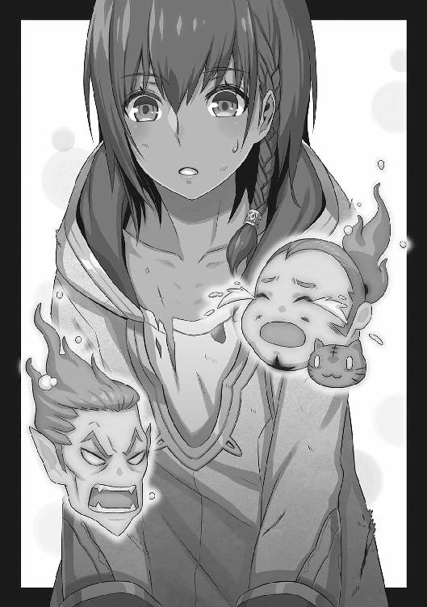

| 聖剣の姫と神盟騎士団 Ｖ (角川スニーカー文庫) | |
| 杉原 智則 | |
| (2014) | |
聖剣の姫と神盟騎士団Ⅴ
杉原智則

角川スニーカー文庫
本作品の全部または一部を無断で複製、転載、配信、送信したり、ホームページ上に転載することを禁止します。また、本作品の内容を無断で改変、改ざん等を行うことも禁止します。
本作品購入時にご承諾いただいた規約により、有償・無償にかかわらず本作品を第三者に譲渡することはできません。
本作品を示すサムネイルなどのイメージ画像は、再ダウンロード時に予告なく変更される場合があります。
本作品は縦書きでレイアウトされています。
また、ご覧になるリーディングシステムにより、表示の差が認められることがあります。
一章 魔軍の兆候
１
クロム・タッカーがラグナ郷を訪れる際、口もとにはいつも自信に満ちた笑みがあった。
ログエル王族として生まれついた血の誇り、そして自覚でき得るほどの才覚が自然とそんな笑みを浮かばせた。
あと挙げられる理由としては、相対する人物たちへの感情がある。
毎回、クロムは谷の政治をつかさどる上層部から歓待を受けた。彼がラグナ郷へ足を運ぶようになったのは、およそ十ヶ月前。すでにカーラーンの侵攻がはじまっていた時期である。
そのころには無敵の傭兵集団である聖剣団が谷の盾となって敵を退けていたものの、当然、谷の支配者層は圧倒的な物量をもって攻め寄せてくるカーラーンに不安と恐怖を禁じ得なかった。
そんななか、北から支援と友好の手を差し伸べてこようとする手を無下にする理由はない。聖剣団団長グラジスの姿が谷から消えたいまとなってはなおのことだ。ラグナ郷の支配者層に代々居座ってきた老人方は、毎回、会食のたびにクロム・タッカー王子の若さに似あわぬ俊才ぶりを褒め称えて色目を使ってきた。なかには、こっそりと自分の縁筋に当たる若い娘を寝所に差し出してこようとした者もある。クロムは、この若者特有のいかにも都会的な笑みを浮かべて、やんわりと娘を外へと追い出した。
（豚どもが）
クロムはそうしたことがあるたび、口もとに浮かべる笑みの種類を変えて、老人方を蔑んだ。クロムは古い因習が染みついた自国の空気を好いていない。いずれ王位を継ぐ自分が変えてやろうと、若い意欲に燃える人物だ。そんな彼にとって、大して実りもなさそうな既得権益にすがり、ただ保身のためだけに外国の王族を歓待するラグナ郷の上層部など、最初から唾棄すべき対象でしかなかった。
が、
「いやしかし、クロム王子。先日の、ラッセル侵攻の折にはお手柄でしたな」
ひとりの老人が、垂れさがった頰の肉を震わせながら笑い、
「おう。あの騎士気取りの若僧めが、いつも偉そうな態度でおるくせに、まんまとカーラーンの魔術などにたぶらかされおって。万一のことがあってはならずと、クロム殿下が谷に兵を派遣してくださっていたからよいものを、そうでなければ、無辜の民があたら傷つくところであった」
もうひとりが追従して手を叩くのに、思わずクロムは口に含んだばかりの酒を噴き出しそうになった。人前では常に、礼儀、マナーのお手本のような態度を取る男にしては珍しい。いつもの彼なら、
「いやいや、わたしなど、大したことはなにもしておりませんよ。隣人たるラグナ郷の人々を過剰に気遣ったまでのことで。この谷がカーラーンの侵攻を勇猛果敢に喰い止めていられるのは、ひとえに皆さまのお力と、ラグナ一族のご威光あればこそ」
などとあくまで慇懃に応対しているところだ。それができないのは、
（こ、この連中、涼しい顔をしながら、よもや知っているのでは）
という疑念が頭の片隅からいっかな拭えずにいるからだ。ひとたびそのような疑念を意識すると、
「おや、どうなされた。顔色がすぐれませぬな。酒に酔われたか」
「いやいや、ログエルの芳醇な葡萄酒に慣れておられる殿下のお口には、ラグナのような田舎の酒ではお口にあいますまい。これは気がまわりませなんだ、次は、もっと上質の酒を仕入れておくといたしましょう」
などといった、つまらぬお愛想でさえ、クロムの耳にはなにやら刃を隠し持った皮肉に聞こえてしまう。つまりはそうしたやましさがいまの彼にはあるということだ。
クロムはいつにも似ず、ひきつった笑みを浮かべつつ、こちらの様子をうかがう老人方の顔を慎重に見定めた。
（まさか。ま、まさかな。この、田舎の老いぼれどもが、佞弁こそ巧みに使えど、そのような腹芸などできようはずもない。となると、本当に知らないのだ。わたしは悠然と構えていればいい。ここで崩れれば、それこそ腹を探られかねない）
心中、クロム・タッカー──ログエル国王太子の地位にある若者は歯嚙みした。彼の抱くやましさとは、三ヶ月ほど前の出来事にさかのぼる。前触れもなく谷から聖剣団が去っていったかと思うと、そのひとり、〈竜殺し〉のラッセルがなぜか不俱戴天の敵国カーラーンの軍勢とともに谷に迫ってきた。当時谷に滞在していたクロムは本国への帰り支度をしていたのだが、聖剣団で唯一谷に残っていたフィーネ・エストールに乞われる形で、本国から援兵をつのった。先ほど老人方が口々に誉めそやしていたのも、クロムのそうした「義俠的な英雄行為」を指してのことだ。
実際、クロムはログエル本国でも、
「さすがは武勇、学問に優れたる殿下だ。聖剣団のおらぬ谷を、ほとんどおひとりで守りとおされたとか」
「周辺はカーラーンの台頭を恐れて、いましも逃げる準備をしている諸侯も多いと聞くが、なんの、われらがクロム殿下はご立派であらせられる」
などと英雄扱いされた。この時流にクロムの父王も乗った。本来、ログエル国王はラグナ郷にことさら肩入れする気はなく、また、カーラーンと目立った衝突は起こしたくないという考えだったから、息子の身勝手な行動に心中穏やかではなかったはずだが、こうまで国の後継者たるクロムが持ちあげられては、その流れに乗る以外にない。クロムにいわせれば、
（父もしょせんは『王』という器を飾るのに精いっぱいで、自分のない人間だ）
というところなのだが、いまは他人を嘲笑っていられる余裕などない。
なにせこの一件でもっとも面目を潰されたのは、カーラーンでも、〈竜殺し〉ラッセルでも、ログエル国王でもなく、クロム・タッカー本人であるからだ。
彼は本国で噂されているような「義俠の人」ではなかった。むしろそのような栄誉欲しさに命を縮めるような英傑気取りを常日頃から小馬鹿にさえしていた。彼はもっと実際的な男であり、あのとき、カーラーン軍に襲われる危険をおかしてまで谷に留まっていたのも、自分に利する目的があればこそである。
彼の狙いは、グラジス・エストールにあった。谷の上層部さえ知らぬことながら、聖剣団団長の身柄はまちがいなくこの谷にあるはずだ。その経緯と事情こそ知るクロムだが、所在まではわからない。だから兵を割いて、ひそかに捜索に当たらせていたのである。
そんななか、フィーネ・エストールのほうから、グラジスの身柄をこちらに預ける、と申し出てきた。英雄グラジスの血を引いていながら、他愛もないくらいクロムを全面的に信頼している娘だ。
クロムは飛びついた。使者の役目を担った少年ダークの前では冷静さをよそおいつつ、
（まったく、なんとたやすいことよ。この連中と来たら、いざ喉もとに剣を突きつけられても「あなたを信頼する」と口を揃えていうのではないか）
胸中ではせせら笑っていた。
が、よもや。
よもや、笑われていたのが自分のほうだったとは、いまに至るも信じられないクロムだ。
結局、聖剣団から預けられたグラジスの棺は、カーラーン部隊の急襲によって火のなかに消え去り、クロムは失意に打ちひしがれながら帰国する羽目になった。
が、その後、たやすく蹂躙されるはずだった谷は見事カーラーン軍を撃退した。驚いたクロムはログエル領にありながらその戦いの情報をできる限り集めた。結果、
（おのれ！）
クロムは自分自身がたばかられていたことに気づいた。なんのことはない、自分はグラジスの偽物を摑まされ、同じくダークに騙されたと見えるカーラーンの部隊と戦うことで、体のよい時間稼ぎをさせられたのだ。
心身が燃えるほどの屈辱だった。人心を掌握し、その上で、自分にとって常に利のあるように行動するのがクロムの信条だ。その裏を搔かれた形だ。
さらには、クロムが王宮に戻ってほどなくして、彼の自室をカーラーンの使者が訪ねてきた。
表向きは、クロムと個人的なつきあいのある南方の商人をよそおっている。彼の実体はクロム本人と、親衛隊長のダイモス以外は知らない。クロムはあわてて自室に通して、人払いをさせた。
「こたびのこと、いかなる意図があってのことか」
カーラーンの使者は、慇懃な態度のなかにも槍のような鋭さをもってクロムを詰問した。
両者にはつながりがある。クロムの父王が知れば目を剝くような事実であるが、この王太子は一年も前からカーラーンと個人的に連絡を取りあっていた。こちらも表向きはあくまで友好関係を匂わせてのことである。
「こ、これは罠だ」クロムはいつものように優雅に口髭を撫でつけようとして、何度か手を空振りさせた。「わたしも、そなたらの部隊も、聖剣団の姦計に落ちた。認めるのも口惜しいが、そういう以外にない」
「ほう」
いかにも南方の商人らしく派手に着飾っているが、この使者、実際は王宮に仕える黒魔法士であろう。クロムをねめつけた目は爬虫類のそれのように冷たく、感情がない。
「部隊を指揮していたハスター・エンデコに聞いたところ、殿下は棺にあるのがグラジスその人の肉体であると知っており、また、こちらをカーラーンの部隊と承知した上で剣を向けてきたといっていたが」
「知らぬ知らぬ。それもこれもすべて聖剣団の罠だ。わたしはそなたたちを邪魔するつもりなど一切なかった。むしろ手助けしてやろうと、危険を承知で兵を残していたのだぞ。そ、それに、そう、忘れたか。あのグラジスを黒魔術にかけ、聖剣団を無力化できたのはわたしの手柄でもあるのだぞ。いまになって、カーラーンと争おうなどとするものか」
「ほう」
ともう一度使者はいった。それから、クロムが焦れるほどの長い沈黙を挟んだのち、
「われらが陛下はクロム殿下を疑いたくはないとおっしゃっている。殿下はカーラーンを南方のなりあがりと見くだして、結果、身を滅ぼしていった他国の連中とはちがう、とも。われらが戦火を広げねばならなかったのも、そうした周囲の不見識があればこそであり、われわれとて、こちらを理解してくださるログエルとは友好的なつきあいがしたいと願っている」
「わ、わたしとて......もちろんだ」
クロムにしてみれば、ここでしくじれば身の破滅をも招きかねない事態であったが、カーラーンからの使者は、存外、深く追及しようとはせず、
「ならばよい」と、王その人であるかのような口を利いた。「こちらにも次の予定がある。手助けしてくださる気持ちは理解したが、次は余計な手出しは無用にお願いしたい」
カーラーンの使者が去ってから、クロムは体中に搔いた冷や汗をはじめて意識した。
本来なら、もう少しラグナ郷での情報を集めるつもりだったが──そこでの自分の行動がどう評価されているかなど──、こうなると一刻の猶予もなくなった。「次」とほのめかしたのは、おそらく大がかりな軍事行動だろう。クロムもカーラーンの動向には気を配っている。東のジャウォール戦線を含め、カーラーンが部隊の大規模な再編制をおこなっているという情報は届いていた。
またもラグナ郷に危機が迫るという意味だ。その前に、なんとしてでもグラジスを手もとに引き寄せたい。クロムはあきらめきれなかった。むしろ一度虚仮にされたことで、いっそうその気持ちは強まった。
幸い、ラグナ郷に斥候を放ったところ、クロム・タッカー王太子の評判は地に貶められてなどいなかった。それどころか、ログエルと同じく、英雄扱いだ。どうやらこの卑劣な罠にクロムを陥れた張本人は、事実を公表してはいないらしい。
よくよく考えてみれば、それもそのはずで、
（一部始終を明かしてしまえば、グラジスはなにか目的があって谷を去ったのではなく、カーラーンの黒魔術によって魂を抜かれたのだという事実も明かさねばならなくなる）からだ。
さらには、現在、谷に残っている聖剣団はスィー・ランひとりきりだという。ランも当然恐るべき人物のひとりだが、クロムがグラジスを持ち去ろうとしたあの時点では谷にいなかった。
（フィーネ、ダークがいないとなると好都合）
まだまだ天運は自分を完全に見放したわけではない。そう思うと、失意の痛手が見る見るうちに癒え、意気のみなぎってくる王子である。もともと己の才覚に自信があるだけに、自分がいつまでも敗者のままでいるはずがないという、ある種、楽観主義に似た部分がある。
クロム・タッカーはそう決め込むと、堂々とラグナ郷に馬で乗りつけた。谷の上層部から歓待を受けるなか、それでも万が一のことがあるのではないかと冷や冷やしながらも、しかしクロムは探りを入れるのだけは忘れなかった。
「時に、ウーサーどの」
水を向けた先は、谷の支配者ウーサー・ラグナ・シュトルン。
「グラジス団長どのは長らく谷を留守にされているようですが、その後、なにか便りのひとつもありましたかな」
「おう、そのことか。いやはや、どうかな」
ウーサーは気取った返事をしつつ、頭を右のほうに傾けている。そちらのほうにいる老人から耳打ちされるのを待っているのだ。ついでに、傍らについていた侍従が、ソースをべったりくっつけた口もとを拭ってくれるのも待ったあと、
「谷のために身を砕いてくれる殿下にこういうのも心苦しいが、詳しいことは申しあげられぬ。なにしろカーラーンとの戦争のさなかのことであるからな」
「左様でありますか。いえ、お気を遣われずとも結構。わたしはグラジスどののファンを自称しておりますのでね、かの生ける伝説が、次はどのような手で大軍を蹴散らしてくれるものかと胸を期待に膨らませている次第でありまして」
いつもの如才ない態度を取り戻しつつ、クロムは内心舌を出していた。
（つまりは、なにも知らぬということだな、この老いぼれどもが。聖剣団にたばかられているのは貴様らも同じことだ）
ウーサーはまだ二十代も後半になったばかりの若さであるが、クロムのいう『老いぼれ』のなかには彼も含まれている。というより、血筋の古さばかりを頼みに、なにかを為すことも、なにかを為そうとする意欲もないまま、のうのうと安穏な生活に甘んじているウーサーのような男こそ、クロムがもっとも忌み嫌う『古い』人間である。
ウーサーは色が白く、妙に肌艶がいいこともあって、見た目ばかりなら十代でも通用しそうな顔立ちだ。肌にぴったりとした服はだぶついた身体の線を浮き彫りにしていて、正直、似あいもしないのだが、おそらく以前クロムがラグナ郷を訪ねた際にしていた服装を真似しているのだろう。半年も前のことだ。すでにログエルでは流行遅れとされている組みあわせを、ファッションの最先端を気取っているつもりになって自信ありげに着込んでいる。
（ふん、まあいい）
クロムは皿に盛られた料理を一瞥しながらひそかに鼻を鳴らした。料理も酒も、一流を気取っているが、田舎臭さが拭えないものばかりだ。
（そちらが期待どおりの愚者でいつづけてくれるならこちらとしても好都合。今度こそ目的を果たさせてもらうぞ）
遠くない将来、まさかカーラーンの軍勢が大挙して押しかけてこようなどとは夢にも思っていない連中だ。
クロムは、『老人方』の顔を笑顔で見まわしつつ、彼らの顔が青白く染まり、狂奔する様を思い描いて、さらに笑みを深くさせた。
２
カーラーンの王宮勤めとなると、覚えねばならぬことが山とある。
歴史の長い国だ。
時同じくして、ログエルの王太子が自国に巣くった古い血筋や価値観といったものに嫌気を覚えていたが、歴史書の数や厚みといった点においては、カーラーンのほうがはるかに上まわっている。そのぶん、宮殿の柱や梁に染みついた因習も、すすけて黒くなるほどに色濃い。
その宮殿自体、代々改築や増築をおこなった結果、迷路と見まがうほどに複雑なつくりになっているから、宮殿仕えの人間はなにをおいてもまず道を覚えねばならないし、そもそも道の歩き方、いき交う方々との挨拶の仕方ひとつ取っても、長い歴史で培われたルールというものがある。おまけに、これも長い歴史ゆえに、そうしたルールが適用されない事例も多々あって、いちいちそれも含めて頭に叩き込んでおかねばならない。
たとえていうなら、ミンブール公爵家は、十数年前の『ミンブール鷹狩り事件』において、王の御前で粗相をしでかしたため、城に伺候する際は道の片端を歩かねばならないことになっており、これに対してはどの立場の人間も道を譲らなくてよいことになっているが、同時にミンブール家は三代前の王位後継者争いの際に、現在の国王に連なる血筋について戦った経歴があるゆえ、小姓以下の人間は彼らに出会ったときは必ず足を止めて、
「ミンブール家のご武運と義俠の魂に光あらんことを」
と挨拶せねばならない。
こうした事例は山とあって、王宮勤めをする人間には気苦労も多い。そして彼らがことに注意しておかねばならないのは、黒衣騎士団補佐役モードンなる人物のことだ。
黒衣騎士団といえば、エルドラン王その人も所属する騎士団であるが、いわゆる軍人の集まりではない。二十数名のメンバーいずれもが王直属の黒魔法士であるという。
彼らは宮殿を留守にしていることが多い。王からじきじきに命令を受けて、カーラーン各地、あるいは東のジャウォール戦線に向かっている。そのなかで、補佐役のモードン、彼ばかりはよく宮殿に姿を見せて、エルドラン王と頻繁に会合をおこなっていた。
通常、王との会見を求める者は前もって王族づきの式部官に約束を取りつけねばならない。その上で式部官たちは会見を求める人物それぞれの爵位や過去の功績にしたがって順番表を作成する。その表が王の手もとにいき、あとは王自らが状況や用件を考慮した上で、会見の正式な日取りや順番が決定されるのだ。
が、モードン。
彼ばかりは例外だ。
王の部屋を訪ね、王と会うのになんの手つづきも踏む必要がない。時には大事な会合の途中であっても、モードンが訪ねてくればエルドランはそれをあとまわしにしてでも彼と会おうとする。
これも、長い歴史に起因した特殊な事例なのかと思えば、しかし黒衣騎士団が誕生したのはわずか五年ほど前のこと。先代国王が病没し、現在のエルドラン六世が二十歳のときに即位したのとほぼ時を同じくする。騎士団、とは名乗っていたものの、そのときはまだ黒魔法士を育成する教育機関といった様相であり、補佐役のモードンは彼らを教育、指導する立場であったともいわれている。
当然、騎士団の育成や設立を決めたのはエルドラン六世自身であるが、王はモードンの教えを受けた黒魔法士のひとりでもある。すなわちこの分野においては、王はモードンの弟子にあたるわけだ。
それゆえの例外処置なのだろう。
黒衣騎士団補佐役モードンは、今日もまたエルドラン王の私室にいた。
時期としては、将軍アグロヴァ・オレットがグリフォンに乗ってカラ・コルムの城へ戻ってくるその前日に当たる。
その日も、朝から会見を求める人々が列を成していたのだが、国王エルドラン六世はモードンが訪ねてくるのを知ると、そのすべてを断って、彼を私室へ通していた。
「よく参られた、師よ」王は両手を広げて歓迎の意をあらわした。「半月ぶりにはなりますかな。しばらくぶりに師のお顔を見られて嬉しい限り」
お顔を見られて、とはいうものの、もともとカーラーンの魔法士というものは、全員が仮面とマスクで顔を隠してある。それゆえ、個人個人を見わけるのが極めて難しいのだが、さすがに補佐役となるモードンともなると扱いがちがうのか、騎士団の面々が銀色の仮面をつけてあるのに対し、モードンの仮面ばかりが金色である。
「せめて前日にでもご連絡をいただいておれば、師を歓待する準備のひとつもできたものを」
「構うでない」
モードンは、エルドランがじきじきに酒を注いだ杯を手で断りながらいった。裾から覗いた素肌は奇妙に青白く、蛇の腹さながらにぬめっている。
「われには、酒も、馳走も、女もいらぬ。人生二人ぶんの時間はそれに費やしてきたのでな。だからもう十分だ」
「それはまた、凡人たるわたしにはなかなか理解できぬ境地のお話のようで」
エルドランは断られた酒杯を自分で乾した。
カーラーン国王、エルドラン六世。まだ二十五歳の若さだ。赤黒い色のガウンを羽織っている姿はもはや宮殿でも馴染みである。この色、ことさらに若い国王が気に入っているもので、彼が即位してから数年後に軍団を再編制した際、カーラーン軍の正式甲冑の色もこれに定めている。
誰にも有無はいわさなかった。エルドラン六世とはそのような男であり、そのような支配体系を一夜にして築いた男である。が、
「ひとまず邪魔者を追い出せ。でなければ話にもならん」
その王に、モードンは頭ごなしに命じた。王宮内の人間がここに出くわしていたら、恐怖のあまり卒倒していたかもしれない。が、
「女はいらぬとおっしゃったが、しかし師よ、純粋に美しいものを愛でる気持ちまで失ったわけではありますまい」
「われの目が美を愛でるときがあれば、それは魂の美しさに引き寄せられたときのみだ。いまさら、姿形の美醜などに関心はない」
「左様でありますか」
エルドランはぱんぱんと手を叩いて、モードンいうところの『邪魔者』を追い払った。三人の娘たちだ。いずれも驚くほどに美しい容貌をしていたが、その肌が緑がかっている。彼女たちを、森の妖精エルフ族の娘たちだと紹介されたところで、果たして信じる者がいたかどうか。
ニンフと同様、妖精エルフ族はその実在そのものに関していまも議論が交わされるほど、伝説と化した存在だ。カーラーンが大陸南部で一気に領土を広げていく途上に、このエルフ族が住まいとしていた森があった。魔術的結界を張って、外界からの発見と侵入を拒んでいたのも、これまたニンフの国ベリンダ同様だったが、エルドランはのちのち彼らエルフ族が邪魔になることを予想して、わざわざ結界を打ち破った上で森に侵入、一夜にして攻め滅ぼした。
その際、エルドランは大半のエルフ族を殺害して、残りは魔術研究のための実験体として黒衣騎士団に与えた。さらに残りの一部を、こうしてほとんど愛玩用の動物のような扱いで、近くにはべらせている。
エルフの美女たちは部屋を去り際、白目の部分がほとんどない眼差しを、名残惜しそうに王へ注いでいった。本来、殺しても飽き足らないほどの憎悪の対象であろうに、どのような関係性が築かれているものか、それも不可思議なことであったが、モードンは別のことが気になったらしい。
「エルフ族と人間がくながうのは万に一つの奇跡もなければ不可能と聞く。そのような女をはべらせてなにが楽しい？」
「ははっ」エルドランは乾いた笑い声をあげた。「なにもそればかりが目的でもありませんが、まあ、ご想像にお任せするとしましょう」
「いずれ、よほど時間があったときにな。それが許される身とも思わんが」
面白くもなさそうにいってから、モードンはようやくのことで用向きを切り出した。
「しばし、カラ・コルムを留守にする。騎士団のほうはおまえに一任するぞ」
「おひとりでいかれると聞いたが、まことですか。師のためとあれば、騎士団のなかから何人かを呼び戻しても構いませぬが」
「われ以外ではどうすることもできぬ用件だ。グラジス・エストールのときと同様にな」
「あのときですら、慎重に慎重を重ねて、宿り木の『調練』をおこなわれたはず。今回は、そのお姿のまま参られるのだろう？ そこまで大事な用件とはなんなのです。しかも緊急にやらねばならぬこととは？」
エルドランは顔の中央で胡坐をかいた鼻を指で搔いた。どこか揶揄するような口ぶりだったが、対するモードンは顔が完全に隠れているので、その表情は読み取れない。
「ザムザの奴めがしくじったのだよ」
「ザムザというと──、ニンフの国ベリンダに派遣していた魔法士か。あの国を陥落させるのは、もう少し拠点を北上させてからでも遅くなかったはずですが」
「ベリンダを陥落させるのが目的ではない」しゃっと蛇に似た息吹を発しつつ、モードンは吐き捨てた。「逆にカーラーンが攻め込んでいけば、彼らはわれわれの意図に気づいてガクレオの城を跡形もなく破壊してしまったろう。だからこそこの時機以外にはなかったというのに、せっかくの知識と技術を手に入れ損ねた。竜をひと振りで殺すことができるという伝説の聖剣にも、天変地異を自在に引き起こすことができたという伝説の杖にも劣らぬ、いやそれ以上のものをな」
「では、その代わりとなるものを求めて？」
「そう考えて構わん」
「だが、なぜ、いまなのです？ これより軍を再編し、新たな軍事計画を実行しようというときになって。わたしには師のご助言が必要なのですよ」
「心にもないことを」モードンはマスクの奥で笑い声を洩らした。「この国の王はおまえだ。好きにやるといい。それに、さほど長いこと留守にするわけではない。ひと月にもならぬさ」
「ほう？ それは残念至極──いやいや喜ばしいことだ。では、師がお帰りになった暁には、こちらもラグナの谷陥落の報をお届けすることができていよう」
「好きにやれとはいったが、ラグナに関しては、忘れてはならぬことがひとつあるぞ」
「当然、わかっておりますとも。それがあなたにとって、そしてこれからのカーラーンにとって、どれだけ重要な意味があるのかも。そのためにアグロヴァを呼び戻したのだ」
「あの若僧か。われには、決してあの男が適任とは思えんのだがな」
「アグロヴァ将軍を若僧などと呼べるのは、領土を一気に広げたわが国においてもあなたおひとりだけでしょうな」
「まあ、戦に関してはものの役に立つ男だろう。武人の力など、どうせのちのちには必要にならぬていどのものだが、いまはせいぜい役立ってもらえばよい。おまえならばこの意味がわかるはずだ」
「無論」
エルドランはまた鼻を搔いた。以前、カーラーン国近隣においては、
「カーラーンの長い歴史が引き継いだのは、かび臭い歴史書と、代々の王のでかっ鼻だけ」
などという諧謔が囁かれていたことがあるが、なるほど、エルドラン六世も肖像画として宮殿に飾られている歴代の王に見劣りせぬほど大きな鼻をしている。頻繁に搔くのが癖らしく、先端部はやや赤くなっている。いまの会話でアグロヴァの名が出たが、かつて隣国の王であり、カーラーンとも刃を交えたことのあるこの将軍は、エルドラン六世のことを『赤鼻王』などと呼んでもいた。
おまけに瞼が厚ぼったく、顎は小さい。若いくせにどこか顔立ちが年寄りくさかった。だというのに、この男の挙措にはどこか色気が香る。国王という立場だけに由来するものではなく、口調や表情、仕草の端々に、長い歴史を引き継いできた血筋ゆえの気品と、そして近年勢いを増してきた影響力による自信とが混じりあって、ちょっとほかでは例を見ないほどの雰囲気が醸し出されているからだろう。
「では、これにて留守にする。決して、いまいったことを忘れるな。覇王の座を約束された若き王よ。おまえの道筋を確かなものにするためには、この世で最強の剣と、神に抗うほどの黒き炎が必ずや必要になるのだから」
エルドランは慇懃な態度で頷き、金色の仮面と黒い頭巾、マスクで顔を隠した黒衣騎士団補佐役を部屋の外へと送り出した。
３
アグロヴァ・オレットは、部隊より先んじること数日前、カラ・コルムの王城に到着していた。さっそく王のお召しがあったにもかかわらず、ゆっくりと湯を浴びて、酒杯などを手のなかで弄んで、王の御前に膝をつくまでたっぷり三時間ほどかけた。
エルドラン六世の気性を知っている近習の者たちは内心冷や汗を禁じ得なかった。たちまちのうちに黒魔術を駆使してアグロヴァを、ものいわぬ石か、野の獣に変えてしまうのではないかと恐れおののいたが、エルドランは苛立ちを面に滲ませながらも、アグロヴァの労をねぎらってやった。
もとより、この二人はその奇妙な関係で知られている。
アグロヴァもかつては『王』と呼ばれた血筋の人間である。カーラーンの隣国ダル・マクールを統治していた男であり、また、自ら部隊を率いての合戦となると、負けがない。その「常勝」ぶりは遠く離れた異国にも伝え聞こえていたほどだ。
カーラーンとダル・マクール、両国の関係はよいとも悪いともつかなかった。時折使者を交わしていたが、同じ頻度で、国境近くの小競りあいも起こった。そんな折、エルドラン六世が即位してから数年後、カーラーンは突如として軍を率いてダル・マクールとの国境を越えた。
アグロヴァは当初、
「あの赤鼻の王さまは、かび臭い宮殿が突然我慢ならなくなったらしい」
と侮った。ダル・マクールの領土内に生息する巨獣グリフォンを飼いならし、一個の空中部隊を編制する手腕で知られる王であった。この機動性と情報収集能力をもって、いままでいくたびも外敵を退け、その敵の土地を必ずや領地に組み込んできた経緯がある。ひと息に追い払うぞ、とばかりに自らグリフォンの背に跨った。
ところが思いのほか戦争は長引いた。それどころか、アグロヴァは自分の居城近くにまで刃を突きつけられるほど追い詰められた。カーラーン王エルドラン六世が、その黒魔法の力をはじめて世に披露した戦いである。すなわち、いま近隣から『魔軍』と称される魔物どもの軍勢がはじめて世にあらわれた瞬間でもあった。
アグロヴァは奸智を用いて、いったん居城近くにまで迫った敵を追い払うことには成功した。が、追撃の命令は出さなかった。思案のしどころだという風に、彼は甲冑姿のまま顎鬚を手でしごいた。
普段、のんびりとした態度の目立つアグロヴァであるが、いざ行動に移すとなると腰が軽い。数日後には、カーラーン王との会談を申し入れ、先方もそれを了承した。会談の席は国境となった山地にある古びた寺院。二人の会談は一昼夜におよんだ。ほぼ二人のみで話し込んだ時間が長いため、そのときの様子は噂でしか知ることができないが、
「わしには適当な世継ぎがおらぬ」
とアグロヴァがいえば、
「わたしに腹ちがいの弟がおります。アグロヴァ王の娘御に婿入りさせましょう」
とエルドランが応じた。そしてそれ以降、ダル・マクールはマクール地方としてカーラーンの領土に組み込まれることとなった。アグロヴァ自身はマクールの地方領主となり、またカーラーン軍の一将軍ともなった。
しかしアグロヴァの態度に敗者としての卑屈さは微塵もない。表向きは王への忠誠を慇懃に示しながら、しかし重甲冑を苦もなく着こなして宮殿を歩いている姿など、『赤鼻』のエルドランより実に王者らしい風格を漂わせていた。
東のジャウォールを攻める際に軍兵を募ったとき、誰より早く駆けつけて先陣を申し出たかと思えば、こうしてエルドランに呼び戻された際には、わざとと思えるほどゆったりした時間をかけて王を苛立たせもする。
とはいえ、カーラーンとの戦争のときと同様、行動に移すとなるとすばやい男である。
城に辿り着いた翌日、彼はまずドレーム配下の者たちを呼び集めた。ドレームといえば、先日までラグナ郷攻略軍の司令官をつとめていた男だ。その者たちを呼んで、では部隊に組み込む旨を告げるのかと思えば、
「戦いのさなかに見たこと、聞いたことをそのまま話せ」
という。
アグロヴァは黙って将兵たちの話に耳を傾けた。当然、そのすべてが負け戦の話だ。だというのにアグロヴァは、特に聖剣団の部隊長たちが直接あらわれた話となると、目を輝かせて、まるで英雄物語に聞き入る子供のような顔をして喜んだ。
やがてジャウォールから大半の部隊が引きあげてきたころには、おおむね、彼なりの部署が済んでいた。
エルドラン六世はその大まかな編制をしたためた文書に目を通しながら、
「おや」と声を出した。「黒衣騎士団からひとりを貸し出してほしいとな？ 将軍はてっきり、魔術、魔物の類を嫌っているものだとばかり思っていたが」
「そうであったかの？」
「いっぺんに老け込んだような声を出してもらっても困る。現に、こちらから護衛のための魔法士を数人つける、といったときも断ったではないか。『魔法士などというものはどこにいて、どこへあらわれるやもわからない。いずれ寝首を搔かれそうだ』とな」
「目的が目的じゃ。ただ相手を蹂躙すればよいというものではないからな」アグロヴァは王の真似をしようというように鼻を搔いてから、「が、忘れるでない、王よ。わしは黒魔術の凄まじさ、恐ろしさを、はじめて敵として認識した男でもある。その有効性をも承知しておるのだよ」
「ほう。しかし、ひとりでよいというか」
「構わぬ。ただし、例の黒宝珠。あの力を操れる者がよい」
（油断ならんな、この禿）
エルドランは小声で毒づいた。小声とはいえ、相手がぎりぎり聞き取れるほどの音量であったのは、王の過ちであったか、それとも意図した上でのことであったか。
「なにか申されたかの？」
「いや」
エルドランが「油断ならない」と思ったのは、普段から魔術の類を嫌っているくせして、黒宝珠の存在と、おそらくはその力までも知り抜いているであろうと思われたからだ。
「では騎士団のバヌワをつけよう。補佐役モードンどのもお墨つきの黒魔法士だ」
「ありがたい」
「将軍のことゆえ、なにも不安など抱いておらぬが、今回は谷を攻め落とすのだけが目的ではない。ゆめゆめ、そればかりは忘れてくれるな」
「もちろん。だからこそ魔物の力は極力使わぬ。作戦の序盤には必要になるが、それも少数でよい。アギロンのような頭の鈍い魔物ならばともかく、あ奴らを完全に制御するには、まだ魔法の力が足りぬようだからな」
（知ったようなことを）
とエルドランは思ったが、今度は声には出さなかった。黒魔術を復活させた王として世には知られているが、いまだその力を完全に身につけたわけではない。いうなればまだ復活の途上にある。そうした事情をも、この無害な老人めいた顔をした将軍は知り抜いているわけだ。
アグロヴァ・オレットは半月ほど前までは、東のジャウォール攻略のための一軍を担っていた。この戦いも思いのほか長引いた。ジャウォール王家もまた血筋が古い。そしてその歴史の由縁があるゆえに、現在、対抗手段が極めて少ないといわれる黒魔術や魔物の軍勢に対して、互角に渡りあうことのできるほとんど唯一の勢力といってよかった。だからこそエルドランは、彼らが古い歴史書を紐解いて、その秘策を思い出す隙を与えてはならじと、早い段階で軍勢を差し向けていたのだが、戦線はほどなくして膠着してしまった。
「ならば、まずは北だ」
とエルドラン六世は指示した。
北に拠点を築いて、そこから東への道を確保した上でジャウォールを多方面から攻めるというこの計画。が、これも上手くいかなかった。いうまでもない、あっという間に踏み越えられるとみなしていた北のラグナ郷にて、思わぬ敵が待ち受けていた。すでに大陸各地で英雄と呼びならわされていたグラジス・エストール率いる一騎当千の猛者たちが、この谷を鉄壁の守りでかためていたのである。
エルドラン六世は苛立ちに声を荒らげる日が多くなった。それに比例して鼻の頭がますます赤くなった。いよいよ鼻のてっぺんから血が噴き出るのではないかと家臣たちがひそかに噂しあっていた時期、エルドランは新たな決断を下した。
ジャウォールの戦線は現状維持のみを目的とし、軍勢の半数以上をカラ・コルムに引きあげさせた。その筆頭がアグロヴァであり、編制表にも名を連ねるウィーバー家の若武者たちである。
（まずは谷）
という目的があるため、そのさらに北に位置するログエル国にもおかしな邪魔立てをされたくなかった。ログエルの王子がなにかカーラーンによからぬ企みを抱いているらしいとも知らされていたが、あえてここは刺激しすぎないよう、使者をひとり派遣して、釘を刺すのみに止めた。
ところが、事態はさらにややこしい。なにしろ谷を攻め落とせばそれでよい、という話ではなかった。補佐役モードンから厳しくいいつけられていたとおりである。だからエルドランも慎重を期さざるを得なかった。
「まあ、厄介な命令ではあるが」アグロヴァは言葉を飾りもせず、率直にいい捨てた。「さほど問題はない。ひと月とかかるまいよ」
「ドレームも同じことをいっていた。奴が失った兵の数は一万をくだらん」
「ははは、陛下ともあろう方が、あの男とわしをいっしょにするでない。筋は悪くない男だが、あ奴はしょせん斧一本で敵に斬り込む役目がせいぜいだ。いままでのカーラーンではまともな武人は育ちようがなかったろうから、まあ、陛下の責任ではあるまい。どうか、心安らかに吉報をここにて待たれよ」
アグロヴァは席を立った。
それを見送りつつ、エルドランは手もとの編制表にもう一度目を通した。黒魔法士以外にもうひとつ気にかかったことがあったのだが、あえて口に出さずにいた。
「キーファ・エンデコ。エンデコ家の者か」
アグロヴァが去ってからひとりごちる。若き王の口もとに笑みが覗いた。
当初、エンデコ家の人間は、カラ・コルムからの使者がやってきてもまともに取りあおうとしなかった。
理由は、
「本国から使者がやってきたなら、わたしの留守を隠し、体調不良を理由に追い返せ」
と、当主ハスター・エンデコから厳命されていたからである。
しかし繰りかえし使者はやってきた。ついには、エルドラン王の直筆による、「主だった武家の者は、当主か、当主代行を城に寄こせ」という書状を渡されると断りきれなくなった。
ハスターは「すぐに帰る」とだけ伝言を残して、家を出ていったきりだ。その行方も目的も知らされていなかった。が、誰かが当主代行として城に赴かねば、王からの不興を買う。
家中が騒ぎになっているのを見て、
「ぼくがいくよ」
キーファ・エンデコは自ら申し出た。
生まれつき身体が弱く、その日も体調が万全とはいいがたかった。下仕えの者たちは苦悩を抱えつつも、結局は彼をカラ・コルムへ送り出す以外に方法がなかった。長く家に仕えている下男をひとり、そして村から屈強の若者二人を選んで槍を持たせ、一応はそれらしくお供の風体をととのえさせてから出発した。
城に到着してすぐ、アグロヴァ・オレットに招きを受けた。当然、これも断りきれない。いくと、豪勢な食事のもてなしが待っていた。
「会うのはこれがはじめてになるか、エンデコ家の嫡男よ」
アグロヴァは温厚そうな笑みをたたえながら聞いた。
「いえ」正装をしたキーファは、青白い顔をしながらもはっきりと口にした。「昨年の、新年の祝賀の際、こちらの宮殿にてご挨拶をさせていただいております」
「そうであったか。いや、はじめて見ると錯覚するほどにそなたは見ちがえた。あと数年もしないうちに立派な武人となるだろう。姉上もさぞ鼻が高かろうな。ところで、その当主どのはいまどこにおられる？」
「姉は......」
キーファは口ごもった。彼は十六歳の若さで、しかもほとんど外の世界を知らない。しばしの沈黙を、給仕する人々の足音と、テーブルに皿を並べたり、逆にさげたりする物音が埋めあわせた。
エンデコ家の現状がある。キーファ自身、身体の弱さを呪ってきた。寝床に伏せながら、いつかは自分こそが家を再興させるのだと涙ながらに志していた。すうと息を吸うと、
「こたび、エンデコ家代表として槍を取る栄誉はぼくに譲るとおっしゃって、送り出していただきました。エンデコ家の男たるもの、大舞台に死に花を添える覚悟で戦ってこい、と」
自分から戦列に加わると申し出る以外に、この場をしのぐ方法が思いつかなかった。
「恥ずかしながら、わたしは十六になるというのにまだ初陣も済ませていません。皆さまの足手まといにだけはならぬよう、死もいとわず力を尽くしますれば」
「なに、そう気負うものではない」アグロヴァは笑った。「死に花を添えるだの、死もいとわずだの、カーラーンの武人はいかにも大仰でいかん。思うに、陛下がご即位されるまではほとんど大きな戦を経験してこなかったため、むしろ戦に赴く『武人』という存在におかしな憧憬や理想、あるいは観念が生まれたのであろう」
甲冑をつけず、ゆったりとした服を着こなすアグロヴァは、見た目、ほどよい具合に精力の枯れたご隠居めいているが、その実なかなかの健啖家である。獣の肉を頑丈な歯でむしりながら、
「わしも初陣の際には、震えながら槍を持ち、泣きわめきながら敵に突撃したものだ。名高いエンデコ家の嫡男を預かるとなれば、わしもそう無理はさせられんよ。ただ戦を間近に見学するつもりで、わしの近くに立って槍を携えておれば、それでいい」
「は、ははっ」
かしこまって頭をさげつつも、キーファはアグロヴァという男を測りかねていた。
名は知っている、無論のこと。かつてダル・マクールという国の王であったことも、数年前にそのダル・マクールとカーラーンが戦争になったとき、当時、エンデコ家の当主であった男──すなわちハスターとキーファの父──も戦線に出向いたこと。
そして──、そのときに生まれた、アグロヴァとエンデコ家の因縁のことも。
ハスターとキーファの父、ハリク・エンデコは、ダル・マクール攻略軍の指揮官を任じられていた。まだエルドラン王が黒魔術を公表するようになって間もないころで、国がもっとも混沌としていた時期である。武人たちも働きの場を与えられたはよいが、エルドランや黒魔法士たちによって召喚された魔物と軍事行動をともにするのも慣れておらず、アグロヴァの敷いた鉄壁の防御や、またその防御の隙間を縫って襲いかかってくるグリフォン部隊に手を焼かされた。
もとより国力には大きな差がある。じりじりとカーラーン軍は突き崩されていったが、そこを必死で押しとどめたのがハリクであった。
彼は巧みな戦術を用いて、撤退するかに見せかけながら、追撃戦を仕掛けてきたダル・マクールの部隊を分断させると、本隊はその間隙を衝いて、敵領土深くへと馬を進めた。その勢いは矢のごとくに凄まじく、アグロヴァは分散させられた味方を引き戻そうとしたが間にあわずに、ついにはハリクとアグロヴァ王が直接槍を交えるに至った。
アグロヴァは負傷させられ、自身の城下町へと逃げ込んだ。それを追うハリクであったが、このときアグロヴァは思わぬ作戦に出た。ハリクの部隊の一翼を担っていた魔物どもを誘導するため、彼はおのが領民を『餌』に用いたのである。
城壁、城門、尖塔のいたる箇所に老若男女を問わず、民たちを生きたまま磔にした。そして魔物の進撃にあわせて、遠方から矢を放って彼らを殺害。血の臭いと領民の悲鳴にひきつけられた魔物たちが隊列を乱した。いまだ魔物を戦争に用いるのに慣れていないころである。魔物たちはそれを止めようとしたハリクの兵たちにも牙を剝いた。
「おそろしや、黒魔術」
当のアグロヴァは城壁の上に立って、ほとんど泣きわめくような口調で叫んだという。
「見よ、わが罪もなき領民たちが化け物たちの爪と牙にかかっておる。貴様らカーラーンは魔界に魂を売り渡した、まさしく悪しき巨人族の生まれ変わりよ。必ずや天からの裁きによって、貴様らは家族郎党もろとも光明ひとつない闇へと落とされるであろう」
ハリクは城陥落を目前としながらも、民を守るため、また魔物どもによって内側から隊を崩されぬためもあって、撤退を余儀なくされた。
結果、ハリク・エンデコは武人として不名誉を負わされることとなった。アグロヴァの巧妙な宣伝によって、民を磔にしたのも、彼らを魔物の餌代わりにしたのもハリクの仕業ということになり、またせっかくの勝利を目前としながらそれを逃がしたハリクの心の弱さにこそ、エルドランは激昂した。
このときエルドランが慣れていなかったのは魔物の制御だけではなかった。彼は自ら振るう権力の強さにも慣れておらず、すなわち加減もできぬままに、ハリクに死罪を求刑したのだ。さすがにこれは武人たちを中心とした反対にあい、エルドランも頭を冷やしたが、ハリク自身は絶望の淵にあった。せっかくエルドラン王の新体制によって武人がのしあがれるかもしれない時代になったというのに、その王の不興を買ったことに人一倍強い責任を感じたためもあったろう、ハリクはまるで誰かに呪いでもかけられたように身体を弱らせ、ついには食事も摂れなくなって、衰弱死した。
最後の最後まで、ハスターの父はうわごとのように「やめろ、やめろ」と口にしていた。彼の脳裏には、自分が率いていた魔物の爪によって引き裂かれる女性や、多数の牙によって頭からかぶりつかれる子供の姿がまざまざと浮かんでいたにちがいない。
その後、両国の王が直接に会見し、ダル・マクールがカーラーンに組み込まれるようになったのは先ほど述べたとおり。
一方、武家の名門だったエンデコ家はその地位を失い、まだ歳が幼く身体の弱い弟に代わって一時的に家を継いだハスターも、百の兵を率いる身分に留まり──この地位は、女性ではむしろ異例といえる出世であったものの──、ドレームの配下に組み込まれた。そしてその身分さえ解除されたいま、もはや寄る辺もないのがエンデコ家の現状であったゆえに、キーファも自ら戦線に加わると申し出る以外になかったのである。
「そなたの父は立派な男であったぞ」
はっとなってキーファは顔をあげた。
アグロヴァ・オレットは微笑んでいた。ログエルから仕入れたと自慢していた葡萄酒を飲み干した直後、その唇は赤く濡れている。
「なにせ戦時下のこと、いくらか誤解があったようで、エンデコ家の名誉が貶められているようだが、わしはハリク・エンデコという男の人となりを知っている。時代が時代、そして戦の趨勢が少しでも異なっておれば、英雄と呼ばれてもおかしくなかった男であろう」
「──」
「わしがいくらあのときの戦のことを語ったとて、エンデコ家の不名誉は拭い去れまい。『武人』としての生き方にいまさら幻想を求めるわしではないものの、武家が己の不名誉を拭う方法はただひとつ、こればかりは心得ている。そう、おのが槍で始末をつけるしかないということだ。わかるな？」
（父のような立派な武人になる）
（エンデコ家の不名誉を払う）
眼前のアグロヴァにどれほど複雑な気持ちがあろうとも、その二点ばかりは、キーファが日がな一日ベッドから天井を見あげながらも常に胸に志してきたことである。異存があろうはずもない。
「はっ」
とキーファはいま一度頭を垂れた。
アグロヴァが七万の軍勢を率いて出立する、そのわずか五日前のことである。
二章 仇
１
「父上」
フィーネの発した驚きの意識が、ダークの五感に波となって伝わってきた。
かつて『皆殺しの島』とも『竜の墓場』とも呼ばれていた北の孤島。フィーネとダークは、神話時代の竜ドライグから島の歴史を語られていたさなかにあった。
語られていた、といっても、実際にドライグの声によって聞かされたわけではない。このときのダーク、フィーネは、肉体のない、いわばダーク自身の扱う〈手〉に似た意識体のみの存在であったため、ドライグいうところの、
「意思のない言葉」
を直接差し向けられていた。途端に情報の波が二人を丸吞みにした。その波に溺れまいと意識を上下させる二人のもとへ、どの神話にもどこの国の歴史書にも語られることのない、英雄王レイドックの末路が、時には言葉なき情報として、時には生々しい映像をもともないながら、次から次へと送り届けられてきた。
英雄王レイドックは、死霊となった家臣や国民にその眠りを守られながら、ダコール石の水晶越しに人類社会を眺めていた。長い長い時間だった。飽きることなく戦いを繰りかえす人類に、レイドックが絶望しつづけていたそんなとき、島に二人の男が上陸した。
魔道士と思われるひとりは、ムゥと名乗っていた。そして剣士であるもうひとりは──、フィーネがいま指摘したとおりの人物。すなわち、聖剣団団長グラジス・エストールであった。
（やっぱり）
とこのときダークが思ったのは、彼は亡者たちの記憶を介して、死霊軍団に挑みかかっていった二人組の姿をあらかじめ『見て』いたからだ。
ダークはこのとき垣間見えた剣士がグラジスその人だと気づいていた。ダークが実際に知る姿より若い。時を遡ること、おそらく十年前後。まだカーラーンの侵略戦争もはじまっておらず、つまりは聖剣団も誕生していなかったころ。以前ヤミーから聞いた過去の話とあわせて考えるに、ログエル王家との争いが終わったあと、グラジスが幼いフィーネのみをつれて諸国を放浪しはじめたころだろう。
その、若かりしグラジスが、ムゥという魔道士とともに島へ上陸した。
「ここか」
と砂浜に足跡をつけながらグラジスがいった。ちなみに、こうした場面場面は、おそらく死霊たちが見聞きした『記憶』をドライグが総括し、それらを抜粋した上でダークらに届けているものと思われる。
グラジスは鼻の頭に皺を寄せ、
「生きているものの気配がまるでないぞ」といった。「その代わり、冷たい気配が周囲をうようよしているようだ。なるほど、ある意味で英雄の眠る地、そして神器の守られた地にふさわしいかもしれない」
「まるで怯えておらんな、グラジス」
もうひとりが含み笑いをしながらいった。顔かたちは若いが、奇妙に年寄りじみた喋り方をする男だ。
「すでに陽も没しかかっている。われの集めた情報が正しければ、この島は、夜ともなると死霊どもの巣窟と化す。気配も感じぬ鈍感な人間ならばともかく、死霊たちの圧倒的な存在を感じながらも涼しい顔でいられるとは、いや、おまえを雇って正解のようだ」
「ただの愚か者なのさ」グラジスは太い鼻息を噴いた。「それに、相手が亡者だろうと、巨人だろうと竜だろうと──、いかねばならない理由があるなら、必要以上に恐れはしない。ムゥ、もし神器を発見できたなら、わかっているな？」
「当然だ。この島に安置されているという黒と白の輝き。白の神器はおまえが、黒の神器はわれが貰い受けるという契約内容だ」
「約束をたがえるなよ」
「いまからその話か？ さすがに少人数で一国の軍勢と渡りあった男だな。まだわれわれは島に一歩目を踏み出したにすぎんのだ。さあ、いくぞ英傑どの」
ダークはこれまでも、嫌というほどグラジスの武勇伝を聞かされてきた。一度などは戦場で直接あいまみえ、ほとんどその姿を見ることもかなわないままのされたこともある。その超人的な強さは骨の髄にまで染み込んでいるといっていい。
そのダークにしても、映像となって送り届けられてくるグラジスの戦いの場面には心を奪われた。相手は島に巣くった死霊騎士たちだ。骨身に染みるという意味では、死霊たちの恐ろしさとてダークは何度も味わっている。一流の剣士と称して差し支えないフィーネやイアンでさえも苦戦していたというのに、グラジスは群がりかかってくる死霊の群れを次から次へと斬り捨てていくのだ。
なかに、あの〈猛虎騎士〉カガン、〈吸血鬼〉ナシェイルの姿もあった。ダークたちが見ることのできる場面はあくまで断片ていどのものなので、死闘のすべてを目撃できたわけではないのだが、少なくともグラジスは深手を負うことはいっさいなく、彼ら二人をも退けた。
そして──これは、以前ダークが『見た』記憶のままに──グラジスとムゥの二人は、城の跡地にまで辿り着くと、そこで柱の仕掛けを動かして地下へと飛び込んでいった。
「本来ならば」
とこのとき、追想をいったん遮る形で、ドライグの言葉がフィーネ、ダークの意識に届けられた。
「二人はわれわれとあいまみえるために、『死』を経験せねばならないはずだった。いまのそなたらと同じことだ。肉の器を捨て、血の脈動のない存在とならねば、亡者たるわれらと直接声を交わすことはできぬ。だというのに」
グラジスとムゥは、城の地下に広がる空洞へと飛び降りた。そこに、すでに崩壊した地上のものとは別に、もうひとつの玉座があった。ダコール石の水晶が息を吞むほど鮮やかな輝きを放つなか、その左右に黒と白、別種の輝きが添えられてあった。
「レイドックはこのとき、自ら姿をさらしたのだ。まるで、長きにわたって焦がれつづけた待ち人がついに訪れた、というように」
水晶の向こうに、うっすらとした人影が見える。ダークはこのとき、肉体のない存在だというのに、奇妙に息苦しい思いをしていた。
（あの水晶の向こうにいるのが──）
英雄王レイドックその人であろう。いまや歴史にも語られぬ、しかし巨人たちから世界と人間を守った真実の英雄、その魂が眠っているのだ。いや、眠っているというのは正しくない。ドライグがいま届けた言葉によれば、レイドックは自らの意思で二人の前に姿をさらしたという。しかしそれは──なんのために？
「おお」
グラジスとムゥ、二人の声が重なりあって聞こえた。グラジスのその顔は黒と白、二つの輝きに照らされて奇怪な陰影を表情に生み出していた。
無意識のうちにか、グラジスがふらふらとした足取りで玉座に近づいた。震える手を伸ばした先にある、混ざり気のまるでない純白の輝きは、これもダークには見た覚えがある。妖精の国ベリンダで、スィー・ランがかざしたそれと同種のもの。
「これで」
グラジスはしゃがれ声を絞り出した。と、
「退がれ、グラジス」その後方でムゥが叫んでいた。「来るぞ！」
戦士としての本能ゆえか、ムゥの警告より早く、グラジスは一気に表情をこわばらせると、数歩の跳躍でその場から跳び離れた。直後、記憶を『見て』いるダークにさえも震動が伝わってきそうなほどの勢いで、巨大な獣がその場に足を踏みしめた。
翼を生やした竜が、長い首をもたげながら咆哮する。二人の人間の衣服や髪、そして顔の筋肉までもがびりびりと震えた。
「人間が飼っている番犬さながらだな」記憶のものではなく、いま現在のドライグの声が笑う。「死霊の島における最後の門番は、ほかならぬわたしだよ。レイドックはわたしに声なき命令を飛ばして、二人を喰え、と仰せられた。ならばなぜわざわざダコール石の棺を彼らの前にさらしたのか、理由はそのときにはわからなかったがね」
ドライグの笑いには自嘲的なものは含まれず、むしろ心底懐かしそうな響きがあった。しかし、ダークは緊迫化する記憶のなかの場面と裏腹に、奇妙な点に気づいた。
グラジスたちの前に立ちはだかった巨大な獣は、確かに竜そのものだ。が、この地下の空間でダークたちが目撃したドライグその人の姿とは異なっている。
身体つきはひとまわり以上小さく、鱗は赤錆びた色をしていた。また、ダークたちが目撃したドライグは三本角だったのが、こちらは額のあたりに一本、巨大な角が生えているきりだし、ドライグにはどこか人間めいた面影があったが、こちらの表情は獰猛な肉食獣そのもの。
「あまりじろじろ『見て』くれるでない、人間の若者よ」ドライグはまたも笑ったようだ。「先ほど、わたしはレイドックとはちがう方法で、神に許された寿命以上の年月を生き抜いてきたといったであろう。あれがそうだ。この島に眠る神器や、その噂から派生した秘宝を追ってこの島にやってきたのは人間ばかりではない。種として滅びつつあった竜たちも同じくあらわれたのだ。かつて神の遣いであり、天と地をあまねく支配した竜たちのなかにすら、死を受け入れきれず、不老長寿などという浅ましい手段を求めて島へやってくるものたちがあった。まあ、彼らを責めはしまい。いたずらに現世へ留まりつづけたわたしがいえた義理ではないし、そもそも、不老長寿の秘宝があるという噂を流したのはそのためでもあった」
ダークは、この島が『竜の墓場』とも呼ばれていたことを思い出した。最初に聞かされたときは、てっきり、「竜ですら恐れて近寄らない」というていどの意味だと思っていたが、真実はむしろ逆で、「竜ですら誘い招き、そして生きては帰さない」ということだったのではないか。
ダークのそんな思考を読み取ったのだろう、ドライグはおかしそうに補足した。
「そのとおりだ。レイドックがこの地に兵を招いて死霊軍団をつくりあげたように、わたしはこの地に竜を招いては、魂を失った彼らの肉体をかりそめの宿り木とした。それを繰りかえすことで、この長い長い時を生き抜いてきたのだ。もっとも、ここ二、三百年は、来訪者も絶えていたがな」
魂を操った、ということは、すなわち黒宝珠や反魂珠の力によるものだろう。聖なる、とも、邪悪なる、ともつかぬその絶大な魔力こそが、レイドック王を、そしてその盟友ドライグの存在をこの世に留めおき、神話時代から現世にまで至る永劫に近しい時間をつないできたのだった。
ダークが言葉に尽くせぬ情動に身を打たれているあいだ、記憶のなかの場面では壮絶な戦いがはじまっていた。
（まさか）
とは思ったものの、いったん『過去』として固着した真実は動きようがない。グラジスは、ほとんど孤剣のみを頼りに、この地上でもっとも強大な生命体と命のやり取りをはじめたのである。
「父上」
フィーネもそうつぶやいたきり、呆然としたように両者の戦いを眺めていた。
最初は、しかし『戦い』と呼べるようなものではなかった。城壁ですらたやすく破砕するであろう爪の一撃が見舞われるたびに、そして炎が地面を赤く染めるたびに、グラジスは逃げ惑う以外に方法がなく、それどころか、竜が翼をはためかせただけでよろめいてしまう始末。反撃の剣を振るうどころではない。直撃こそ受けなかったものの、わずか数分で、グラジスの身体は血の色にまみれた。
が、
「強い」
と唸ったのは、いま現在のドライグ。
「わかるか。あの男、ただ逃げまわっているようで、同じ攻撃が通じぬ。こちらがひとたび爪を振るえば、その速さや届く距離、軌道を頭に入れてしまう。ならば尻尾を、と思うと、これもまた頭に入れられる。そうなると、たとえ攻撃が届いたところで、二度目は最初ほどの効果をあげぬのだ。三度目はなおのこと。そして四度目ともなると、その予備動作すら見抜かれて、今度はこちらが先手を打たれる始末だ」
ドライグは、焦ったのだという。まさか人間にこれほど手間取るとは思わなかった。いつしかこの男ひとりにかかりきりになっている。敵は二人いたはずで、このまま仕留めきれぬようなら、レイドックを守りきれないかもしれない、と。
瞬間、グラジスに隙が生じた。
もうここを狙えばまちがいない、というほどの隙。焦りに背中を衝き動かされたドライグは、止めを刺すべく飛び込んだ。そしてそれをあっさりかいくぐられた。
「わたしも老いたものだな」現在のドライグが慨嘆するようにいった。「あのていどの罠を見抜けなかったとは」
竜の懐へと飛び込んだグラジスは、懐から肩、肩から背中へと這いあがった。この刹那、振りあげた剣が白々とした光を反射したのは、神器の輝きを浴びたためか？
首の根もとをひと息に刺し貫かれ、ドライグは絶望の咆哮を轟かせた。巨体を悶え抜かせた。ただひとりの人間が古代の竜に打ち勝った偉大な瞬間だったが、この一撃のみに賭けていたグラジスも、一瞬の好機をつくるのに相当な手傷を負い、体力も使い果たしていた。思わず、
「父上！」
とフィーネが過去に向かって声を投げかけたのは、竜の背中でふらついたグラジスが、横倒しになったドライグの下敷きになったからだ。
世界が明滅するのをダークは感じた。フィーネの意識が前のめりになったが、徐々に『見えて』いた光景が薄暗いものになっていく。ドライグの声がして、
「地下の玉座にいたのは、わずかな数の亡者のみ。すでに死んでいたというのに、そのほとんどがこの戦いに恐れを成して逃げ去ってしまった。この後の『記憶』を留めおいているものはない。わたしも意識を失った。が、その寸前、最後に見た光景がこれだ」
横倒しになったドライグその人の視界だろう。地面がほぼ垂直にそそりたつなか、ムゥというあの魔道士がダコール石の水晶へ近づいていくのがかろうじて見える。両方の手が伸び、白と黒の輝きをまさしく摑みあげんとしていた。
ダークははっとなった。魔道士の手が輝きに触れた刹那、水晶の向こうにおぼろげに浮かんでいた人影が色濃くなった。それはまぎれもなくひとりの人間の姿となってあらわれ、唇ににやりとした笑みを浮かべたのである。
その光景は唐突に途切れた。辺りが真っ暗闇に閉ざされるなか、
「ち、父上。父上は」
「落ち着け、フィーネ」泡を喰ったようなフィーネにダークが声をかける。「あれは過去の話だ。当然、この島から生きて帰ったのさ。でなけりゃ、聖剣団は存在していないし、いまごろラグナの谷はとっくにカーラーンの領土になっている」
「わたしに、あれ以降のことはなにもわからぬ」
ドライグはもの静かに語った。いつしか、過去の映像は闇に閉ざされ、その闇のなか、代わりに浮かびあがったのは青々とした炎。『記憶』の激しい波間に弄ばれていたダークとフィーネは、その青い炎が形成するドライグの姿とふたたび向かいあっていた。
「意識を取り戻したときには、ムゥもグラジスも──、そしてレイドックもまた、消え失せていた。白と黒、二つの神器とともに」
「で、では、レイドック王はいずこに？」われを取り戻したらしいフィーネが聞いた。
「あの、ムゥという魔道士が連れさったのでしょうか」
「魂のみの存在であるレイドックを連れさるとなると、ダコール石が必要だ。しかしあの石はこの場に残されたままだった。わたしが考えるに、レイドックは、自らの意思でこの島を離れたのではないか。人の身に宿ることでな」
「人の身に？」
「ひとつの肉体に、同時に二つの魂を宿すのは恐ろしいまでに困難な業だが、それ以外に方法が──」
ドライグがなにかをつづけていおうとしたときだ。
青い炎に走った裂け目のごとき双眸が、くわっとばかりに見開かれた。
２
同じころ、〈死霊神官〉ベアラーと、その弟子ロナ・オルティスは戦いの只中にあった。剣を振って盾をかざす類のものではなく、双方とも、その身に死霊たちを吞んで、彼らを安らかな道へ導かんとする、精神的な戦いだった。
そのなかで、激しく抵抗する死霊がいた。ロナがその心身に受け入れたナシェイルという騎士だ。
「放せ、放せ、放せ。あたたかい光などおれには不要。安らぎの境地など唾棄すべきもの。おれはこの場にありつづける。たとえそれが偽りの命であろうとも、おれは王を守護せねばならんのだ！」
ロナの体内に青々と燃える炎は、ナシェイルが浮かべた苦悶の表情そのままの形となっていた。
大勢の死霊騎士たちが、ロナやベアラーの導きのまま浄化されていくなかにあって、ナシェイルはただひとり、強く、異様とも思えるほどの精神力をもって抗っている。それほど現世への執着があるのだろう。彼はもともと戦いへの渇望が強かった。とともに、現世で唯一惚れ抜いた主君を守ることができなかったという悔恨が強かった。
彼が、この島で王として君臨する男──おそらく、その正体は神話時代の英雄レイドック──を守護する立場になったとき、どのような感情の推移があったかは不明だが、ロナとて多少の推測は立てられる。
レイドック王に仕えるべき主君の器を見出し、今度こそ、魂が朽ちるそのときまで守護しようと誓いを立てたのではなかったか。
その想いは、ベアラーとロナ、二人が合力してなお完全に滅することができぬほどに、峻烈なものだ。死してからあまたの時間が流れ過ぎ去ったというのに、いやそうであるからこそなのか、その想いは禍々しいまでに強さを増しており、いまロナの心身を内側から燃やしつくさんとするばかり。
そこへ、
「おお、ナシェイル。おぬしもまだここにいたのか」
青い色をした気配がロナの心へ侵入してきた。まるでそよ風が吹き込んできたというほどにごく自然ななりゆきに、死霊たちを取り込んでいたロナ自身が戸惑ったくらいだ。
その新たな霊魂は、〈猛虎騎士〉カガン。ナシェイルも驚いて、
「カガン、貴様、王の守護はどうした。なぜここにいる！」
「おれもおぬし同様、この者どもに招かれたのよ。だが案ずるな、ナシェイル。おれの霊体を斬り裂いた剣士たちは、皆、清々しい目をしていた。いや、皆というか、ひとりは剣士ではなく、目も若干濁りを帯びていた気もするが、まあいい。すでに彼らの腕に抱かれたおぬしにもわかっているであろう。彼らは盗賊ではないよ。王の眠りを邪悪な意図を持って破らんとする輩ではあるまい」
「黙れ！ 盗賊であろうとなかろうと、またもわれらは王をお守りすることができなかったということではないか。このまま朽ち果ててなるものか。このまま消えて安らぎに身を委ねてなどなるものか！」
ナシェイルは吠えた。凄まじい憤りの念が、またも怨霊としての力を増幅させたようだった。ロナは心身を火あぶりにされているような痛みを覚えながら、しかし、その憤りの裏に、同じだけ強い悲しみを感じた。
ナシェイルは涙を流さずに泣いていた。釣られてか、カガンのほうはさめざめと涙を隠そうともせずに泣いた。
「おれとてこの世は名残惜しい。せめてこの目で、もうひとたび故郷の地を見てみたい。かつて仕えた王の墓前に膝をつきたい」
二人は生前、仕えた王を失っている。故国を留守にしているあいだ、玉座を政敵に乗っ取られもした。二人の騎士たちは、魂を呼び戻す秘宝があるという噂を聞いて、この島に挑んだ。命を捨てる覚悟を決めてでも王を取り戻したいというその願望は、しかし、ただ単に過去の過ちを認めたくない、弱い心のあらわれであったかもしれない。

ナシェイルの憤りは、己への憎悪である。カガンの悲しみは、そうしたことすべてを理解した上で、なお安らぎの境地にたどりつけぬ自身の欲深さに対するものでもある。
ロナは自分の心が揺らぐのを感じた。
（いけない）
深い同情と憐れみの念が湧いてきて、彼らを滅することにためらいが生じている。霊を取り込んで心を合一化させようとするあまりに、感情が共有化されているのだ。
ロナは厳しく自分を戒め、心を鬼にして彼らの手を引こうとした。と、
「よい、ロナ」
現実の手をつなぎあわせている相手──〈死霊神官〉ベアラーが囁くのが聞こえた。
「時には力任せに相手を滅することも必要だが、おぬしの心が逆らうというなら、無理にやることもない。どのみち、この二人、おぬしでは力ずくに祓うことはできぬ」
「では、いかがすれば」
「そうさな」ベアラーは憔悴しきった顔に、清々しいほどの笑みを浮かべた。「いましばらく、その死霊たちを供とせよ。心身に憑依させたままで、絶えず彼らと心の声を交わすのだ」
「憑依させたままで？」
「わしも過去にその手の修行をした。あえて時間をかけて彼らと対話をすることで、彼らに指し示すべき道を模索したり、彼らが現世にとどめた未練をかなえてやることで自発的な浄化を促したり。これはおぬしにとってまたとない修行になろう。そなたの身を触媒とし、心を糧として差し出すがいい。死後から数百年ものあいだ、世を漂っていた怨霊たちだ。もちろん少しでも気をゆるめれば、おぬしのほうが身体を乗っ取られ、あるいは心を喰い破られることもある。できるかな？」
「はっ──」
ロナはめまいがするような思いで顎を引いた。当然、恐れはあった。背中に斬りつけられた傷は深く、その痛みで精神が朦朧としていたということもある。が、いちばんにめまいを誘ったのは、敬愛してやまない〈死霊神官〉が、久しぶりに自分を見つめて心の底から微笑んだように見えたからだ。
と──、
「むっ!?」
ベアラーがふたたびその表情を厳しくさせた。
彼はまだその身体に死霊騎士たちを取り込んでいる真っ最中だった。ひとりを導いて浄化させてやれば、また次のひとり、というふうに、彼はロナと何気ない会話を交わしているなかでも、その内側において命懸けの死闘を繰りひろげていたのであるが、
「うあああっ」
「き、消える。消えてしまう！」
死霊騎士たちのあげる苦痛の叫びが轟いた。ベアラーの力によるものではない。そも、彼の法力による導きは、たとえその途中で相手を傷つけ、時には死に勝る痛みを与えることがあろうとも、魂が天に昇るその瞬間には、現世の命ではとうてい味わえぬほどの安らぎに包まれるはずなのだ。それゆえの浄化。
が、いま、死霊騎士たちはベアラーの心身から抜け出し、身が裂かれるような悲鳴をあげながら、その場に消えていく。それが〈死霊神官〉たるベアラーの眼前で繰りかえされているのだ。
「これは」
ベアラーは大きな目を剝いていたが、その目線が自然と上空のほうへと誘われた。
なにかが宙を舞いあがっている。雨降りしきるなか、夜空へ吸いあげられていくのは、一見、黒い石の欠片のようだった。
「あれは、よもや──黒宝珠？」
ロナが青白い顔をして囁いた。口にするのも恐ろしげなのは、彼はダークと同様、死霊に憑かれた際に彼らの記憶を『見て』いるからだ。この島における奇妙な生と死の形──命を落とせば死霊となり、命のある者さえいったん眠りに落ちてしまえば、心ばかりが死霊たちの住まう幻の都へと誘い込まれる──は、おそらく黒宝珠の魔力によるところが大きい。
まだベアラーとロナは知らぬことながら、この島には黒宝珠の欠片がちりばめられており、各々が人間の魂を奪うことで魔力を増しつづけていた。それゆえ、本来は世界に固着することのないはずの死者たちの魂が、長年にわたってこの島に漂いつづけていたのであるが、その力の根源たる黒宝珠の欠片が、いまなにかにひきつけられるようにして宙へと舞いあがっていく。
そして、それら黒い瘴気を渦巻かせた石が吸いあげられていく空の一点に、ベアラーとロナの視線も釘づけとなった。
ひとりの男がいる。夜闇のなか、黒いローブ姿は空に溶け込んでいたが、その存在感はむしろ際立っている。見あげるほどの高さで静止したこの男は右の手をかざしており、黒宝珠の欠片はそこめがけて吸いあげられていくようだ。
「何者！」
ベアラーは一喝するように吠えたが、声は届かない。彼は身体中にナシェイルから切り傷を与えられており、本来、この場に立っているのも驚くべきほどだ。そうしているあいだにも、死霊騎士たちは世にも恐ろしげな悲鳴をあげながら搔き消えていく。黒宝珠の力がこの島から失せつつあり、そのために島における奇怪な生と死の形が崩れているのだということを、ベアラーもロナも本能的に感じていた。
一方、
「あれは」
暗闇に支配された空間のなか、ドライグが喉の奥から唸るような声を発していた。
「いかがなさいました」
フィーネが問うと、ドライグが答える代わりに、その胸の高さ辺りに新たな炎が立ちのぼった。炎は直径が二メートルほどの輪を形成すると、その内側に、まったく別の風景を映し出した。
雨降りしきる真っ黒い空に、先ほどベアラーたちが目撃したのと同様の人物があらわれ、かざしたその手に黒宝珠の欠片が集まっていく光景もそっくりそのまま再生された。どうやら外の風景をこの場に映し出したものらしいが、フィーネは真っ先に映像のなかの男に気を取られた。
「カーラーンの魔法士！」
そう叫んだとおり、宙に浮いた男はあきらかにフィーネたちが敵対する国の魔法士であった。黒いローブに頭巾、目もとを覆った仮面に、顔の下半分を隠したマスク。ばかりか、
「あの男だ」
ドライグはその声に、人間では計り知れないような複雑な感情を乗せて断言した。
「あの男こそ、ムゥと名乗っていた魔道士。おそらくはこの島から反魂珠、そしてこの島にちりばめた黒宝珠の、残り半分を持ち去った男だ」
ダークとフィーネは等しく衝撃を受けて立ちすくんだ。
かつてグラジスと行動をともにし、この島に訪れたこともある魔道士が、カーラーンの人間であったという。そしてその男が、ふたたび島へとやってきて、島にちりばめられた黒宝珠の欠片を集めている。
星灯りも雲に閉ざされた真夜中だというのに、魔法士の姿がくっきりと見えるのは、空中に集まったそれら黒宝珠の欠片同士が、まるで互いの存在を確認し、共鳴でも起こしているかのように鈍い色で輝いているためだ。
「あ奴め、ふざけた真似を」
ダークはその身に──というより、〈手〉となった意識に──強い振動を感じた。この空間の鳴動は、さながら古代の竜ドライグの怒りと直結しているかのようだった。
「いや、思えば、わたしの力がまだかろうじて残っているときに、よくぞ向こうから来てくれた。盗っ人にはしかるべき罰を与えねばならんし、レイドックの行方も問いたださねばならん。このときのために最後の肉体を残しておいた。人間の子らよ、すまぬが、昔語りはここまでだ」
振動はもはや空間が破壊されるのではないかというほど激しく、ドライグの姿を形成していた青い炎も一段と膨れあがった。
「お待ちを──ドライグさま！」
フィーネが叫んだのもひと足遅く、瞬間、ダークもろとも、膨れあがった青い炎に弾き飛ばされた。
轟音とともに身体がばらばらになるのを感じ、一瞬、ダークは『死』すら意識した。が、その直後、
「おお、師匠、小隊長どの！」
耳もとで聞き覚えのある大声が聞こえて、思わずダークは耳を庇った。
見ると、イアンが頭上から覗き込んでいる。その傍らでフィーネが目を覚ました。身体には鈍痛がある。手足を持ちあげるのがひどく億劫だ。つまりは、もとの肉体へ強制的に戻されたということだろう。
場所は、崩れかかった城の遺跡。かすかに雨が散っている。三人が飛び込んでいったはずの黒い穴が四角形に口を開けていた。
「目を覚まされてよかった」
イアンがほとんど涙目になりながらいった。なんのつもりか、ダークの手をさすっている。
「おれは率先して飛び込んだのですが、なかは土砂で埋まっていました。小隊長や師匠があとからつづいたのは気配でわかったのですが、なぜかはぐれてしまって。穴から這い出たとき、お二人はこの傍らで意識を失ったように眠りこけていたのです。また死霊に憑かれたのかと思い、お二人をベアラー師のもとへ運ぼうかどうしようかと思案していたところ──」
ダークたちが目を覚ましたのだという。二人の時間的感覚からすると、ずいぶん長いこと『記憶』のなかを漂っていた気もするのだが、ドライグが、
「意思のない言葉を送るのに時間をかける必要はない」
といっていたとおり、現世での時間からすると数分も経過していなかったのだろう。
と、フィーネが、ぱっと立ちあがって、
「カーラーンの魔法士は？ ドライグさまは？」
と問う。イアンは目を丸くした。
「ドライグというと、例の、レイドックの友人であったという？ ま、まさかお二人はその竜に会われたのか。そうだ、ならば、レイドック本人はいったいどこに──」
「それも含め、確かめねばなりません」
フィーネはそういいきって、黒々とした空を見あげた。戦闘のさなかであるかのように目つきが鋭い。
「知らねばならぬことが山とあります。あの魔法士は何者か、父上といかなる関係があるのか、ここでなにをするつもりなのか。が、まずはベアラーたちと合流しましょう。あちらの様子も気がかりです」
まったくもって気の早いフィーネが、さっそく駆け出そうとしたとき、
「それにはおよばぬ」
その場にいる三人以外の声がした。反射的に声のしたほうを見やったダークは、「ひいっ」と悲鳴をあげそうになる。
青黒い光に包まれたその人馬の影は、まぎれもなく死霊騎士。
しかもその細面に、複雑な形に編み込んだ長髪、眉間に刻まれた皺──とくれば、アーガス王朝時代にもっとも敵から恐れられた〈吸血鬼〉ナシェイルその人に他ならなかった。
３
馬が歩みを進めてくるのに、下生えはそよとも揺れない。この世に存在しない死霊である証だ。
（まさか、ベアラーがやられちまったのか!?）
ダークは戦慄した。認めたくない事実であるものの、迫りくる危機は現実だ。恐れおののきながらも、いま打てる最大の手を瞬時にして考え出したのは、自称『聖剣団切っての頭脳派』の面目躍如か。
彼はぴゅうっと風を巻く勢いでイアンの背中に隠れると、
「よし、いけ、イアン。カガンを叩き斬ったその剣で、ナシェイルをも浄化させるがいい。この騎士を斃した暁にこそ、おまえに『秘剣・悪霊滅殺剣』の免許皆伝を与えよう！」
「はっ、ありがたき幸せ」
焚きつけられたイアンが、喜色を浮かべて前に出る。まるで前々からその免許皆伝とやらを欲しがっていたような態度だが、当然、『秘剣』なる存在は彼とて初耳のはずだ。
対するナシェイルは肩を揺らして笑った。余裕のあらわれかと見えたが、
「カガン、おまえを斬ったのはあの若造か。なるほど、気概に満ち満ちてはいるが、いささか油断したのではないか」
などと、この場にいないはずの存在に声をかける。イアンが眉を寄せた直後、ナシェイルの姿形がいっぺんにして、〈猛虎騎士〉カガンのものへと移り変わった。
「油断したのは否定せんが、遣い手であるのもまた確かよ。あまり軽く見たものではないぞ、ナシェイル」
ダーク、イアンの師弟コンビが仲良く口をぽかんと開けた。カガンはまちがいなくイアンがその剣で両断したはずだ。自分を打ち倒したイアンの強さを誉めそやし、フィーネの美しさを讃えながら、ある種感動的にこの世から消えたはずだというのに、この〈酒樽騎士〉の異名をも併せ持つ男はのうのうと笑っている。先ほどナシェイルが跨っていた馬までも虎の形に変化していた。
「こっ、これはいかなることでしょう、師匠」
「う、うううう、うろたえるな、馬鹿者」人一倍うろたえながらもダークがいう。「これは、あれだ、あれにちがいない。あれとはなんだ、つまりはあれだよ、馬鹿。その......ナシェイルとカガンはもともと同一人物だったのだ。おまえが斬ったと見えたカガンはただの幻。本体はあのナシェイルのなかにあるのだ！」
「な、なんだってえ」
と乗りのいいイアンであるが、その傍らに並んだフィーネは、さすがに腰の聖剣ゼスに手をかけながらも、
「お待ちください」と冷静な声をあげた。「あなたは......ひょっとして、ロナ？ ロナ・オルティスではありませんか」
「なんだってえ」
今度はダークとイアンが声を揃えた。
すると、死霊を包んでいた青黒い光がわずかに薄らいだかと見えると、その向こうに、ロナ・オルティスのはかなげな笑みが見え隠れした。ダークは仰天して、
「どっ、どうした、ロナ。また憑かれたのか!?」
「いえ」と、確かにロナの声がした。「ぼくのほうから彼らを誘い招き、この身に憑依させているのです」
彼が説明するところによれば、ロナは生まれ持った霊媒体質と、ベアラーのもとで育てた霊力によって、二人の死霊騎士を現世につなぎとめているのだという。その代償として心身の一部を死霊たちに捧げることとなるが、
「これもまたとない修行。ぼくは彼らが自然と成仏するその瞬間まで、彼らと行動をともにすることとしました」
そうロナが微笑むと、次の瞬間にはナシェイルの姿となって、
「成仏？ 現世から消えることをそういうのなら、おれにそのつもりはないぞ、若き僧よ。機会があればいつでもおまえの肉体を乗っ取ってやるから、せいぜい後悔せぬことだ」
低く笑ったかと思えば、また次の瞬間にはカガンの姿となり、
「しかしこの宿主どのはクソ真面目なようでいかんなあ。恐るべきことに十五の年齢にもなって、まだ女をひとりも知らんという。十四人もの妻を満足させていたおれがこの身に宿って手取り足取り教えてやるから、喜ぶがいい」
などと高笑いする。あわてたようにロナの姿に取って代わった。
なにか趣味の悪い冗談につきあわされているようだ。が、
「カーラーンの魔法士がやってきて、なにやら島に異変が起こりつつあります」ロナは生真面目な顔をして本題に入った。「ベアラーさまが、皆さまの様子を見てまいれ、とおっしゃるので、騎馬の姿となってこちらへ駆けてきたのです」
「そうでしたか。実はわれわれもその魔法士のもとへいこうとしていた矢先のこと」
フィーネがゼスを腰におさめた。平静そのものの態度なのは、ロナがこの場にいて、そして「ベアラー」の名前が出た以上、仲間の無事が確認できたということだからだ。
「異変というのは？」
「この島における生死のサイクルが乱れ、霊たちが現世に留まっていられなくなっているのです。ナシェイルとカガンはぼくが取り込むことで、そして一部の騎士たちは、ベアラーさまが咄嗟に張った結界でなんとか形を保っていられますが、このままでは『幻の都』が消え去るのも時間の問題。おそらく、この島に霊たちを留めおいていた魔法の力が消滅しつつあるのが原因かと」
ダークとフィーネはすばやく顔を見あわせた。二人はドライグから教えられている。『幻の都』を形づくっていたのは、島にちりばめられた黒宝珠の欠片だ。そしてそれをあの魔法士は空中に吸いあげていた。
「急がねば」
フィーネの決断は速かった。ロナもひとつ頷いて、
「騎士たちを数名つれてきました。それぞれこちらに」
と、背後を指し示すと、そちらから、やはり青黒い光に包まれた死霊騎士たちが三名、進み出てきた。いずれも鎧兜で完全武装している。島へと辿り着いた最初の晩に襲いかかってきた騎士たちだ。ダークとしては身震いを禁じ得ない。が、騎士たちは手にした剣や槍を振りかざすことも、特別になにか声を発するでもなく、それぞれ馬の尻をダークたちのほうへ差し向けた。
「の、乗れるのか？ 身体がすり抜けちまうんじゃ」
「ベアラーさまが術を施しております。その身にしがみついても結構ですよ」
（うへえ）
内心、舌を出したい気持ちに駆られながらも、フィーネはさっさと跨っているし、イアンも同様だ。ダークも恐る恐る、奇妙に発光する馬の尻へと腰をおろした。なるほど、実体があるも同然だが、しかし生き物としてのあたたかさや血の脈動などはいっさい感じない。それはそれで身震いしたくなる。
「いきます！」
ロナがひと声あげると、馬に跨ったナシェイルの姿へと変化した。彼を先頭にして、三頭の死霊騎士がつづく。
これが、飛ぶように速い。あまりに速いので、ダークなどはずっと叫びっぱなしになるほどだ。
「本来は、もっと速くいけるのだがな」
先頭をいくナシェイルが振り返って、不気味に笑った。
「われらは、その気になれば、この崩れた柱も、岩も、いく手を遮る木々をもことごとくすり抜けて進むことができる。が、おまえらを乗せている以上、そ奴らはあるていど物質化しておるのでな。柱も岩も木も、避けざるを得んのだ」
よくわからない自慢をされた。が、ともかくもダークは振り落とされまいと必死だったので、生理的な嫌悪も忘れて死霊の身体にしっかとしがみついていた。
その甲斐あって、来るときは数時間かかった行程が、わずか三十分ていどに短縮された。
辿り着いた先は、港のすぐ近く。ベアラーが死霊たちを迎え撃った草原である。雨はやんでいた。
「ベアラー！」
フィーネが叫んだとおり、草原にはベアラーが腰を据えていた。島の異変を嗅ぎつけてやってきたのだろうか、周囲にはいったん船に戻ったはずの信者たちの姿もある。
「心配をかけた、お嬢」ベアラーがゆったりと片手をあげた。「まさか塔を抜け出し、三人だけで城跡へ向かうとは。ロナから聞いたとき、肝を冷やしたぞ。それもこれも、わしの至らなさゆえだがな」
ナシェイルとの死闘で傷ついたのだろう、身体中の傷に手当てを受けている。げっそりとやつれた顔とあいまっていかにも凄惨な姿だったが、微笑む顔は不思議と穏やかだ。
「レイドックとは会えたかな」
「それよりも、島にカーラーンの魔法士が来ております。われわれにとってよからぬ企みを持っているのは明白。わたしどもがいって、確かめてきますので、ベアラーたちは船でお待ちください」
（わたしどもかあ）
フィーネとイアンにならって死霊騎士の馬から飛びおりながら、ダークは天を仰いだ。もちろん、フィーネの頭のなかではダークも頭数に入っているのだろう。が、カーラーンといえば、当然、聖剣団共通の敵。ここはベアラーが、
（いや、わしが参ろう。これもわしの霊力を高めるための修行であるからして、うんぬん、かんぬん）
などと無理矢理な理屈をこねてでも立ちあがってくれることをひそかに期待したダークであったが、
「そうか。わかった、ここはお嬢に従っておこう」などとあっさりフィーネの申し出を了承した。「いやしかし、少し目を離した隙に見ちがえるようになったもの。これは、団長と再会する日がいっそう楽しみになった。お嬢の成長ぶりを早くご報告してさしあげたいものだ」
（こ、このクソ坊主。いままで散々ごねてやがったくせして、肝心なときに丸くなってやがる）
ダークは腸の煮えくりかえる思いだ。
「しかし、あまり無理をするものではないぞ、お嬢。わしが口にするのもおこがましいが、勇気と無謀はまったく別のもの。千里の道も一歩から。そしてその一歩は、命があるからこそ踏みしめられる。決して忘れてくれるな」
「はい、わかっております」
見た目こそ凛々しくフィーネは頷いたが、
（わかってないんだろうなあ。きっと、多分、まちがいなく、絶対、未来永劫に）
とダークはあきらめている。と、ベアラーはナシェイルの姿をしたロナのほうを見て、
「おぬしも船に戻れ。見たところ、いまが限界のようだ」
「いえ、ぼくも、フィーネさんたちとともに......」
青黒い光の奥に透けて見えていたロナは抗弁したが、ベアラーがゆっくり手をかざすとともに人馬を形成していた青黒い光が消え失せ、ロナの生身の姿が浮き彫りになった。とその瞬間、張りつめていた気がゆるんでか、ロナはふらりと足もとを乱してその場に倒れそうになった。
「ロナどの！」
イアンがあわてて身体を支えた。ロナは服の上から包帯を巻いてあったが、背中からは真っ赤な血が滲んでいる。目を閉じて苦しげな息をしていた。
「ロナを船内に」
とベアラーの指示を受けて、信者たちが少年の小柄な身体を運んでいった。
「あ奴も修行半ば」とそれを見送りつつベアラーはいい、それからフィーネのほうを仰ぎ見て、「無論、わしも、そしてお嬢もだ。わしらは船にて待つ。生きて戻ってまいれ」
「はい、必ず」
フィーネはいい、イアンとダークのほうを振り向いた。
「さあ、いきましょう」
「うむ」とイアン。「魔法士と戦うのははじめてだ。あのベリンダでもよからぬことを企んでいたようだし、いったい、あ奴らがカーラーンでなにをするつもりなのか、この手で暴いてくれよう」
（まだ戦うと決まったわけじゃねえ）
とダークは思ったが、いまさら口を挟んでどうなるわけでもない。
それに、ダーク自身、魔法士の目的やら、この島の行方にまったく関心がないわけでもなかった。
４
風吹きつけるなか、その魔法士はローブをはためかせながら空中に身をおいていた。
彼の周囲にはすでに十数もの欠片が舞っている。それでもなお手をかざし、そこから放った不可視の網で獲物をさらいあげるかのように、島中に散らばった黒宝珠の欠片を引き寄せているのだ。待ってましたとばかりに真っ先に舞いあがってくるものもあれば、まるで意思があるかのように抵抗するものもある。魔法士の手もとまで引き寄せられた欠片たちは、かつては自分たちが同じ存在であったことを証明するかのごとく、同じ間隔、同じ強さで鈍い輝きを放っており、その輝きは鎖のように連結しあって、あたかも魔法士の周囲に輝きの帯を連ねていくかのようだ。
「お待ちなさい！」
そこへ、駆け込んできたのがフィーネ、ダーク、イアンの三人。
木々に覆われた丘陵を登ってきた彼らは、そこに生えているどの木よりも高い位置で滞空している魔法士を揃って見あげた。
「カーラーンの手先、そこでなにをしているのです」
フィーネがゼスの柄に手をかけながらあげた声は、いつもよりも低い響きで凄みを与えられていた。いわゆる、ドスが利いているという奴だ。
と、
「見たままのことだよ」
対する魔法士の声は、凄んだとも、大きく張りあげたとも思えぬのに、距離の離れたフィーネたちのもとへ不思議と高い音響をともなって届いていた。
「これでわからぬというなら、説明する手間などかけぬほうがマシだ。手の届かぬ場所からただ見ておればよい」
笑いも毒づきもしなかったが、どうやら嘲弄されたと気づいて、フィーネが顔を紅潮させる。
が、フィーネ・エストールもいくらか修羅場をくぐって大人になっているようだ。いったん吊りあげた眉をもとの位置に戻して、むしろフィーネのほうこそ相手を嘲笑うかのような表情をつくった。
「それはそれは、遠路はるばるご苦労さまです、魔法士どの」
目を細め、唇を半開きにしながら、なにやら妙なしなをつくっている。本人からすると色っぽい挙措のつもりなのだろうが、
（いったい誰が教えやがった、こんな不気味な踊り）
後ろにいたダークが怖気を禁じ得ない代物である。ともあれ、フィーネ・エストールは相手を弄ぶと信じている笑みを持続したまま、
「ですが、こちらを放っておいてよろしいものかどうか、ひとつ忠告してさしあげたい。わたしどもは聖剣団。あなた方の大軍を幾度となく退けてきた勇者であります」フィーネは剣を吊るした左の半身を後ろに引きつつ、「それに、わたし自身、あなた方の仲間をひとり、この聖剣ゼスで斬ってさしあげました。確か、名をザムザといいましたか」
「ほほう」
フィーネの挑発に、上空にいた魔法士が反応を見せた。帯状の輝きを身にまとわりつかせつつ、
「ザムザを斬ったのは、そのほうであったか」
「はい」フィーネは淑女らしいお辞儀をした。「なにやら、ベリンダにおいてよからぬことを企んでおいででしたので、その目論見ごと斬って捨ててさしあげました。確か、カーラーンの黒魔術のため、ガクレオの研究成果が必要だとおっしゃっていましたが、その目的も叶わぬまま散っていかれたご同輩の心情、さぞ無念であったでしょうな」
ダークはまた震えあがる思いがした。ともすれば忘れがちになることだが、フィーネ・エストールは剣士である。時折、ダークとはかけ離れた世界にいるような感覚を覚えることがあった。
「まことになあ」と魔法士は上空から応じた。「ザムザが無念を抱えたまま散っていったおかげで、われ自ら、老骨に鞭打ってこの場に駆けつけてこねばならなかったのだ。そのほうの名、聞いておこうか」
「フィーネ・エストール」
「ふむ」
黒魔法士は縦に大きく頷き、それから「くくく」と笑った。フィーネはかすかに眉を上下させ、
「お笑いになりますか」
「笑うとも」魔法士はもう一度頷いた。「よいことを教えていただいた返礼に、こちらもひとつ情報を明かすとしようか」
「おまえの名前ならばすでに知っています。ムゥというのでしょう。それに、おまえはどうやら父上とは知己の仲。それでわたしの名を聞いて笑ったのでしょうが......」
「そこまで知っておられるか。だが、得意げになるのはまだ早いな。そのほうが知らぬ事実もある。確かにわれはグラジスどのをかねてから知っておる。ラグナの谷に赴いたときは、その旧交をあたためる時間もなかったし、どうやら彼はわれの正体を見抜けなかったようだが」
「どういう意味です」
「『お初にお目にかかる』とご挨拶申しあげたところ、グラジスどのはそれを訂正なさらなかった。まあ、魂を見た目で判別できるはずもない。だからこそ、かのグラジスどのも油断なされたのであろうな」
「だから、どういう意味かと尋ねているのです」
質問を重ねるフィーネはまったく無表情のようでいて、声がかすかな震えを帯びている。背後にいたダークのほうが衝撃を露わにしていた。
（ま、まさか、こいつ──）
ダークがおののいた瞬間、黒魔法士ムゥは含み笑いをしながらいい放った。
「わからぬはずもあるまいが。過日、ラグナの谷に邪魔させていただいた。その折に、グラジス・エストールどのの身柄を貰い受けるつもりだったが、こちらも多少の油断があったのだろう、思いがけぬほどの抵抗にあったのでな。まだ表に出すつもりはなかった、黒宝珠の秘術を使わせていただき、その魂のみを奪うに止めた。──そう、そのほうの父上から魂を奪い取ったのは、ムゥともモードンとも呼ばれる、このわれだよ。フィーネ・エストールどの」
一瞬、両者のあいだに、沈黙が黒い翼を広げながら舞い降りた。
ダークも、そしてまだ事情もろくにわかっていないはずのイアンもなにかを感じ取ってか、声ひとつ発さない。ダークから見えるフィーネの背中は、まったくいつもどおりの彼女のものであるようだった。
動かない。激しい感情のせめぎあいが、むしろ拮抗しあって、この奇妙な停滞を生じさせていたか。
「フィ、フィーネ？」
不可思議な均衡を崩したのは、ダークが怖々とかけたその声であった。
ダークの視界から一気にフィーネの姿が搔き消えた。
はっとなって反射的にダークは視線をあげた。フィーネが空を駆けあがっていくのがかろうじて見て取れた。聖剣ゼスを振るい、その刀身を木々に打ちたてながらの行為だ。大木を二、三回、蹴りあげたその果てに、宙に浮いた魔法士ムゥの姿がある。
「いえええええっ」
裂帛の叫びが、夜気を斬り裂いた。
跳びあがったフィーネの姿は、ムゥの頭上。ひと息に剣を振り抜いた。
グラジスひとりから心を奪う、ただそれだけで無敵の傭兵団を瓦解寸前にまで追い詰めたその仇敵も、フィーネの一撃によって首と胴体を断たれて終わりを迎えるかに見えた。
このときムゥを中心に広がりを見せていた帯状の輝きが、その傾きを変えてフィーネの身に触れた。
刹那、指で弾かれた豆粒のようにフィーネの身体が吹き飛ばされた。
宙を泳いだのも一瞬、すぐさま落下する。しかも頭を下にしていた。意識を失っているように見え、
「フィーネ！」
ダークはその名を呼ぶと同時に、〈手〉を急速に練りあげた。
切り離した心の一部をフィーネへと飛ばす。狙いを外さぬ矢のようにそれはフィーネの額を打ち据えて、ほぼ同時にはっとフィーネの目が見開かれた。
意識を失ってもなお剣を手放さなかったのはさすがというべきか。フィーネはゼスの刀身を伸ばして、これも矢のように木の幹へと突き立てた。喰い込んだ刃がやすやすと大木を切り裂きつつ、降下。ようやく勢いが殺され、フィーネ自ら跳躍して地面に降り立ったとき、その背後で大木が左右に裂け落ちた。
フィーネ・エストールはそれでもきっとした視線を上向けた。牙を立てそこなった獲物をにらむ獣のような眼差しで、ダークが止める間もなく、二度目の跳躍を試みようとする。
その正面から、来た。
ムゥは左右の手で互いちがいに円を描いていた。と、黒宝珠の欠片によって生まれ出でた輝きの帯、その一部が雷となって振るい落とされた。
フィーネが咄嗟に身を転がす。鈍い色の雷は音もなく地面を焼いた。つづいて二撃、三撃目が降りかかるのを、フィーネはかろうじて避けつづける。四撃目が、フィーネの傍らにあった木に直撃した瞬間、その命中した箇所が跡形もなく消え失せた。文字どおりの意味だ。火を発することも、衝撃で形が崩れるということもない。ただ、消えた。
さすがにフィーネの顔色が青ざめる。おそらく指の一本でもかすめていれば、その指は木と同じ運命を辿っていたろう。当然、頭や胸に浴びれば、その瞬間に命が失われる。おそらくこの世に存在していたという名残ひとつ止めぬまま。
「素晴らしい」
上空で、ムゥが歌うような声を放った。
「ガクレオのドワーフたちが生んだ恐るべき魔法具は、この島にて亡者たちの魂を数限りなく吸い、現世とは異なる死の世界を生み出すことで、欠片ひとつひとつが大幅に強化されている。わかるか。われは、この黒宝珠の力を振り絞ろうとしているのではない。むしろ、強すぎる力を制御しようと必死なのだ。実際、われの力が少しでも衰えを見せたら、この黒宝珠の集合体はわれの魂をも奪おうと魔手を伸ばしてくるであろう。いや、われの予定ではもう少し時機を待って、さらなる成長を見込んでいたのだが、逆にいまこのときに『回収』を試みて正解だったかもしれん」
「フィーネ、こっちだ！」
ダークは、ムゥが力に酔いしれているあいだにフィーネを木々の下に誘導しようとした。しかしフィーネは動かない。かといって、ムゥめがけて二撃目を振りかざそうというわけでもない。上空をにらむ少女の唇は嚙みしめられている。その端から赤い血が滴っていた。
（葛藤）
とダークは見た。父を斃した敵を前にして、抑えきれぬ復讐心がある。しかしそれと相反する感情がフィーネの足を縫い止めているのだ。
ダークにとってみれば、彼女は、無理、無茶、無謀の三拍子揃った猪武者そのものである。どのような敵を前にしても、頭で考えるより握りしめた剣の重みだけを信じて突き進んでいった。その彼女をして、動きを止めさせていたのは、
（勝てない）
という認識から来る恐怖ではなかったか。
ダークはそうした感情を、歯で唇を食い破ったフィーネの横顔から見取りつつも、その肩を抱き、引きずってでもムゥの視界から外れようとした。
「来ぬのか」その動きを待っていたかのように、ムゥが乾いた笑い声をあげる。「そうつれなくするでない。こちらとしてもせっかく手に入れた力だ。もう少々、われの実験につきあってはくれまいか」
いうなり、ムゥにまとわりついていた輝きの帯が、彼を置き去りにしてそっくりそのまま降下を開始した。
またも頭上から雷を降らせる気か、と、ダーク、イアン、そして葛藤に身を焼いていたフィーネまでもはっと表情をこわばらせるなか、ぴたりと動きを止めたその帯が、おびただしい発光をはじめた。
その光をなんと形容したらいいのだろう。七色に輝いた、といえば、赤、青、黄色といった、実に色彩あざやかな、虹のごとき荘厳なものを連想させるが、その七色に選ばれたのは、いずれも死と腐敗の色を想起させるものばかり。見る者に吐き気をも催させるほどの邪悪な輝きが連なる様は、あたかも世界に生まれた傷口のようだった。
そして傷口は、その内側に爛れた色の血をあふれさせた。
血は蠢いていた。いや、その正体は数千、数万の命だ。あまりに密集しすぎていたためにそのように見えているのだ。
「〈門〉か!?」
ダークが、自分でも意識せぬうちに叫んでいた。
黒魔術とは、この世ならぬ異界から力を借り受けるものだという。その力の顕現で最たるものは、異界、すなわち魔界から、これもこの世ならぬ生き物たちを呼び出す魔術だ。カーラーンはこれら魔物どもを使役しているため、『魔軍』などと称されている。
しかし、カーラーンにおいてこの術を扱えるのは国王エルドラン六世のみという話だった。それも、魔物を招くためには、この世と異界の接点となる〈門〉をこじ開ける必要があり、そのためには七日七晩の儀式が必要だといわれていた。
が、いま。
黒魔術の刃によってやすやすと切り裂かれた現世の傷口から、腐臭を漂わせながら魔物どもがあらわれ出でようとしている。
フィーネはいまだ動けない。剣のみを信じ、剣で世界をも斬り伏せる勢いだったイアンも同じく。
そしてダークはというと、彼もまたその場から動けずにいた。頭を真っ白い霧に吞まれてしまって、なにか明確なヴィジョンを生み出すでもない。
いく万もの生命体がひしめきあったせいで、どろどろとした粘液状の血にも見えるそれら魔物が、ついには傷口の縁を乗り越え、われ先にとあふれ出ようとしていた。
このとき、地響きが起こった。
三人が足をすくわれそうになるなか、ひび割れた地面の下から巨大な影が浮きあがってくる。それもムゥの起こした異変であり、地面から巨大な魔物があらわれるのかと戦慄を覚えたダークであったが、限界までひん剝かれた彼の目は、青黒い鱗をした竜が、その長い首を、胴体を、脚を宙に引きずるような格好であらわれてくる光景を映し出していた。
波打った鱗の一枚一枚から土砂をばらばらと降り注ぎながら、薄い血管を散らした皮膜のある翼をひと振りする。それだけで巻き起こった突風に、三人の髪やマントが宙に翻るなか、
「ドライグさま！」
とフィーネがその竜に呼びかけた。ダークがはっとなる。見かけこそあの不可思議な空間で見た青い炎とは異なっていたが、ダークも〈手〉に覚えのある感覚を摑んでいた。『記憶』のなか、グラジスと戦ったときと同様だろう。ドライグ本来の肉体はとうに失われているため、この島へやってきたほかの竜の肉体を借りているのだ。
後ろへ反りを打った二本の角を有している竜は、一度、その丸みを帯びた目を三人のほうへと向けた。
ダークには、竜が、にやっと微笑んだように見えた。
それからひと声も発さず、翼を連続的に打ち振ると、城の尖塔に匹敵するほどの巨体をさらに宙の高みへと運びあげた。
三章 王都崩壊
１
巨大な突風と化した竜が、ムゥへ挑みかかった。
中空に静止したままだったムゥもさすがに脅威を感じてか、空中をすばやく泳ぐように移動する。瞬間、ダークたちの見あげる先で、異界への入り口があっさりと閉じ、あれほど生々しかった傷口が搔き消えた。魔法士の集中が途切れたためだろう。
それでダークたちが安堵したかというと、しかし頭上にはいまだ強い圧迫感がある。
いったんムゥの頭上まで吹き抜けたドライグは、翼を激しくはためかして、魔法士の目線と同じ高さにまで下降した。
「ほう、これはこれは」表情の見えぬ魔法士は、粘っこい声だけで歓迎の意をあらわした。
「いまだご健在であったか、ドライグどの。いや、すでに死した相手に『健在』というのもおかしな話だが」
「久方ぶりだな、魔法使い。わたしが生きていようと死んでいようとかかわりない。この現世でふたたびあいまみえたという事実さえあればな」
「嬉しいことを仰せだ。しかし、いくらなんでもその姿はみすぼらしすぎはしまいか。神話時代を生きた竜の名が泣こうというものであろう」
「おまえもわたしも、どうやら長く現世に留まりすぎたようだ。おまえとて見た目どおりの人間というわけではなかろう」
ムゥとドライグ、両者は、種族の垣根も飛び越えて、旧知の間柄であるような口を利いている。ダークたちは息を吞んで見あげるばかりだ。
「それに、見た目がどうであろうと、わたしには、おまえを喰らうこの口さえあれば十分だ」ドライグは閉じた口のあいだから蒸気の煙を洩らしながら声を放った。「おまえも、どだい人の身。人の身で、それほどの力を操れると思ってか。先ほど魔神の宮への入り口をこじ開けようとしたようだが、それだけで命を削ったようだぞ」
「人、人か。竜のおまえにはそう見えるのだろう。いまだに、このわれがな」
「人を超越したと思いあがるか、魔法使いめ。いずれにせよ貴様の手には余る力だ。黒宝珠は返していただこう」
「ここで無駄な力を蓄えているよりは、神のつくりし世に反旗を翻すほうが、よほど黒宝珠も喜ぶであろうと思うがな」
「黙れ。貴様には返してもらうものが山とある。聞き出さねばならぬこともな。レイドックはいまどこにいる？」
何気ない風にドライグは問い、
「われの手のなかに」
ムゥも何気ない調子で答えた。
が、これが両者の殺意が激突しあった最初の瞬間であった。
ドライグの口から火炎の渦が吐き出されたかと思うと、ムゥの姿は竜の正面から搔き消えた。側面にあらわれたかと見えるや、黒宝珠の欠片から迸った黒い雷がドライグの脇をかすめる。
あとは、目にも留まらぬ攻防が繰りかえされた。
ダークたちはやはり声もなく見あげるきり。人知を超えた者同士のぶつかりあいは、それこそ神話の物語じみていて、ある種、舞台でも観劇するかのような心地いい疎外感があった。そこでどのような悲喜こもごものドラマが展開していようと、自分にはいっさい利害のない夢物語なのだと。
つまりはそれほど浮世離れしていて、どれほど剣を鍛えあげようと、魔法の力を高めていようと、このなかへ容易に踏み込めるものではないということを、人間は人間の本能ゆえにそう感じ取っていた。
が、ただひとり、そう感じていない人物がいた。竜と魔法士は、互いに円を描くように移動しながら、炎や雷を振るいあっている。時にはドライグが懐に飛び込んでは、先ほどフィーネを弾き飛ばした帯が盾となってこの突撃を防ぐ。そこに一分の隙でも見出せぬものかと、フィーネ・エストールはゼスの柄から手を放さない。
少女の様子に気づいて、ダークはぎょっとなった。もうこの瞬間にでも飛び出していきかねないほどの意気を感じる。
（馬鹿野郎、あのなかに割って入ろうものなら、その瞬間にでも死ぬぞ）
ダークは怒鳴りかかったが、瞬間、頭上に太陽が生じた。夜の暗がりが一気に駆逐されたほどのそれは、ドライグが放った炎だ。
「こっちだ！」
そう叫んだイアンがダークの、そしてダークはフィーネの手を引いた。揃って地面を転がった三人の脇で、木々もろとも地面が蒸発した。
眼下でのそのような騒ぎも知らぬげに、竜と魔法士は互いに死力を尽くして戦いつづけている。
「な、なんて野郎だ」ダークは口に入った土を吐き捨てながらつぶやいた。「空を飛びながら、竜とサシでやりあってやがる」
グラジスとドライグの戦いを記憶のなかで『見た』ときも驚いたが、それと同等の衝撃があった。いままで見てきた聖剣団のメンバーも十分人間離れしていると思ったものだが、あれほどではあるまい。
（あれが、カーラーンの最強魔法士か）
風がダークの心中を吹き抜けた。どれほどの強敵を前にしてもついぞ感じたことのない冷たさがあった。
と──、上空で起こっていた戦いが、一方的に傾きはじめた。「サシでやりあう」どころの話ではない。魔法士ムゥのほうが、ドライグを圧しはじめたのだ。
「待て」
とダークが、地面に片膝をついたままフィーネの腕を引いた。彼女がいまにも立ちあがって、この戦いに加勢しようという動きを見せたのだ。
「お放しください、ダーク。このままでは」
「おまえがいってどうなるってんだ」
「このままではドライグさまが敗れます。そうなれば、次にムゥが狙うのはわたしたち。いずれにせよ戦わねばならぬ相手なら、ドライグさまのお命があるいまのうちに」
「そ、そのとおりです、師匠」イアンが、遅まきながら剣士としての意地を取り戻して唸った。「ひとりより、二人。二人より三人です」
なるほど、とダークは思う。判断としてはまちがっていない。ただし、それは相手が人間ならばの話だ。
いくらフィーネやイアンが一流の剣士であっても、異界への入り口を一瞬でこじ開け、竜をも圧倒するような魔力の持ち主相手に、いったいなにができよう。
実際、こうしているあいだにもドライグは追い詰められていた。絶え間なく迸る黒い雷を回避するのに手いっぱいで、反撃の炎を噴き出すどころではない。すでに竜の巨体には黒々とした痕が轍のように駆け巡っていた。動きも精彩を欠く一方。
対するムゥのほうは、むしろ動きを活性化させていた。空のあちこちに瞬時にしてあらわれるほどの速度を誇り、時にはこの魔法士が二人、三人と同時にあらわれたと錯覚するほどだ。手に入れた力を思う存分振るえるのが嬉しくてたまらぬといった風情であり、また黒宝珠の欠片たちも、これに応えて、力を放出するのに歓喜を覚えている様子であった。
「あっ」
と地上にいた三人の声が重なりあう。雷がドライグを直撃した。空中でよろめく。ついに、不可思議な形でもってその存在を維持しつづけてきた太古の竜も最期のときを迎えた。
「ドライグさま！」
もうダークの手を振りほどく勢いでフィーネが立ちあがる。剣を手に跳びあがろうとした。
同じ瞬間、ムゥは複雑な形に手を動かし、体外で帯を形づくった魔力を一気に放出しようとした。
ドライグが、
（もはやこれまで）
と観念してか、ぐわっと口を開けて牙の列を覗かせざま、ムゥのもとへひと息に飛び込もうとする。ただしそれは無策な突撃でしかなかった。直後、雷が図太い矢となってドライグの胸を刺し貫いた。いましも跳躍しかけていたフィーネの動きが固まる。ドライグは声もなかった。
（ああ）
さしものダークも、胸に重石を載せられたような深い慨嘆を覚えた。それは太古の昔から現世にいたるまで、細々と糸をつむいできた神話の終焉をも意味していたかもしれない。
と──、伏しかけていたダークの目が見開かれた。
力を失い、宙で傾いだドライグが落下をはじめていた。その巨体から、やはり竜の姿をした青黒い影が飛び出したのだ。
あたかも空中で脱皮して、もうひとつの肉体を吐き出したかのような光景であったが、しかし実体はない。姿かたちもいままでのドライグと異なっている。
ダークたちが最初に目撃した姿そのものだ。
それはすなわち、ドライグの魂。
もとより黒宝珠の力を借りて、肉体から解き放った魂のみで存在しつづけていたドライグである。そしていうまでもなく、この戦闘空域にはムゥが歓喜のままに打ち振るいつづけた黒宝珠の力があった。
いわば、ドライグはかりそめの肉体を囮とした。最後にわざと隙をつくることでムゥの動きをわずか一瞬でも縫い留め、その隙をついて、ドライグは魂の存在となってムゥに押し迫った。
かつて力の限りに戦い、敗れた相手──グラジス・エストールが用いた手と似ている。
「おおっ!?」
さしものムゥも驚愕の叫びをあげていた。逃げる間とてない。ドライグの青黒い姿がムゥを包んで──そして重なりあった。
外傷はない。繰りかえすが、ドライグはいまや魂──意識体のみの存在である。だが、ドライグはこの瞬間、確かにムゥへ牙を打ち立てた。肉体を素通りして、ムゥの魂そのものへと『喰らいついた』のだった。
さすがに不意を打たれたムゥは苦痛の叫びをあげた。
魂に傷を負う、ということがどのような痛みをもたらすものか、ダークにはわからない。だが、致命傷であったのはまちがいないのだろう。ムゥがあれほど自在に操っていたはずの黒宝珠の欠片たちが、急激に力を失ってか、ばらばらと雨のように降り注いできた。
それでもいくつかの欠片はかろうじて宙に踏みとどまっている。それらが不気味な明滅を繰りかえした。もとより黒宝珠は、生者、死者を問わず、魂を奪うためのもの。ドライグの魂が苦しみに悶えたそのときを狙って、かろうじてムゥは距離をおいた。
「おのれ」
ムゥは怒りの唸りをあげて、手をドライグのほうにかざした。今度こそ止めの一撃になるかと思われたが、その青白い手に突如異変が起こった。ひび割れが生じている。まるでガラス細工を床に落としてしまったときのように、指の先から肘の辺りにまで真っ黒い亀裂が走っていくと、直後、肘から先が粉々に砕け散った。
見あげていた三人が、不気味な光景に慄然となった。ひび割れは腕に止まらず、肩から胸、胸から首へと駆けあがっている。ムゥも驚きを隠せなかった。まだ無事なほうの手で顔を押さえたのは咄嗟の行為だろうが、うっかり花瓶を割ってしまった幼児があわてて手で押さえて悪あがきをしているようにしか見えなかった。
魂に傷を負うとは、つまり生命としての存在そのものを危うくするということだろうか。
ムゥは一瞬、空中でどうしてよいかもわからず立ちすくんでいるようだったが、やがて忌々しげに何事か声を発すると、そのまま空域から遠ざかる構えを見せた。
反射的にか、フィーネが追おうとしかけた。
が、ムゥの姿ははや夜空に吞み込まれ、見えなくなりつつある。そのとき空中から落下していたドライグの──というより、彼がかりそめの宿り木としていた竜の──肉体が地響きをあげながら地面に落ちた。ちょうどベアラーたちと再会したあの草地の辺りだ。とともに、ダークは、空中に残されていたドライグの魂までもが同じ場所に吸い寄せられるのを目にした。
なぜわざわざ致命傷を負った肉体に戻ったのか、という疑問が湧いたが、黒宝珠の加護を失ったこの島のなかでは、どのみち魂のみでは長いこと存在できないのである。
三人は顔を見あわせた。言葉もなく、意思を統一した彼らはドライグの落下した地点へと急いだ。
２
丘を駆けおり、木々をよけながら進んでいく最中、彼らはやはり言葉を交わさなかった。胸中、各々の思いがある。
果たして、草地のほぼ中央に、竜の巨体が横たわっていた。だらりと垂れた首は絶えず震え、ぎざぎざの牙が覗いた口からは黒っぽい血があふれている。剝がれ落ちた鱗が周囲に散乱していた。
「ドライグさま！」
フィーネがすかさず駆け寄った。身体が血に汚れるのも構わず、ほとんど首にすがりつくような格好になる。なにか治療の手立てはないかというように、ダークやイアンのほうを振り返ったが、当然、二人にも手の施しようがない。
「構わぬ、人間の娘よ」ドライグは声帯をぐるぐると震わせながら言葉を紡いだ。「わたしもこの世に長く留まりすぎた。どのみち、さほど時を待たずしてわたしの魂はこの世から消え失せていたろう。......この島にて長い時を送りながら、神の摂理に逆らった自分はいったいどのような最期を迎えるのだろうと、やくたいもない思いに心を焦がしたこともあったが、こうして、戦って終わることができるなら本望といえぬこともない」
「しかし......ああ、どうして。わたしがもっと......」
フィーネはなにかつづけざまにいいかけて、しかし言葉を吞んだ。それは相手への、というより自分への慰めにしかならぬことに気づいたのだろう。ドライグはその気持ちを汲んでかどうか、力なく笑った。
「まさか、最後の最後に人間にすがりつかれようとは思わなんだがな。レイドックと過ごした時間が長すぎた。わたしは人間と、人間たちの世を、レイドックが見るようにしか見てこなかったように思う。すなわち、慨嘆と絶望だ」
雨あがりの湿った風が、その場にいる全員の鼻腔をくすぐっては、足早に駆け去っていく。
竜の、大きなガラス玉にも似た瞳が天を仰いだ。
「だが、そなたらを見ていると、おかしな心持ちになる。果たしてレイドックが絶望を繰りかえすほどに、人とは愚かしく、邪悪で、欲深な存在だろうかと。だから、一度わたしは騎士たちに攻撃を取りやめさせたのだ」
（そういえば）
とダークは思い当たることがあった。
島に辿り着いて二日めの夜、ベアラーがこの草っぱらで死霊騎士たちを招いて戦ったときのことだ。
この地で長く修行をつづけていた〈死霊神官〉の消耗は著しく、彼はついに騎士たちの猛攻を受け止めきれずに血を噴いて倒れた。そこへ、「手出し無用」と厳禁されていたロナたちもたまらず、聖なる火を掲げながらベアラーを庇うために駆け出した。あとは乱戦に突入したのだが、不意に騎士たちは身動きを止めると、
「かの守護者どのがお呼びだ。者ども、引き返せ」
リーダー格のナシェイルの声と同時に、彼らは宵闇のなかへ蹄の音を響かせながら消えていった。
つまり、『守護者』とはドライグのことであったろう。
「そなたらは秘宝を追い求めるためでも、王の眠りを暴くためでもなく、仲間のために命も惜しまず戦おうとした。その光景をわたしは死霊たちの目を借りて『見て』いたのだ。だからいったんは死霊たちを引きあげさせた。無論、まだ測りきれぬところがあったので、城の守護はそのままにさせていたのだがね。だが、わたしが『見た』光景は、レイドックが抱く深い慨嘆や絶望にはそぐわぬもののように思えたのだ」
「そ、そのようなこと」フィーネが息を喘がせながらいった。「当然のことではありませんか。ベアラーはわたしどもの仲間です。その命が危ういときになにもしなければ、それこそわたしは自分に慨嘆し、絶望もいたしましょう。それは、なにもわたしたちに限ったことではありません。世の親は、子らのために命を懸けるでしょう。恋人を守るためなら命を捨てても惜しくないと胸に誓った者たちも大勢いるでしょう。友のために、兄弟のために、主君のために......やはり人々は様々な理由で他者を思いやり、命を張って守ろうとするでしょう」
「ほう」
「僭越ながら」イアンが、ややためらいがちに声をかけた。「レイドック王の眠りを守ろうとしていた騎士たちも同様であります。生前にどのような人生を送っていたかはわからねど、死後の彼らは、まちがいなく王を崇拝、敬愛しており、その王をお守りしようと必死になっていた」
「そうか、そうであったな」
このときドライグの身体がひときわ大きく震えた。フィーネがはっとその目をうかがうと、すでに光が弱まりつつある。が、ドライグの身がこのとき震えたのは、地から噴きあがるような笑い声を放ったためであった。
「つまらぬことよ」と竜は笑いながらいった。「何百年にもわたって人の世を見通してきながら、そんなつまらぬ、世のどこを見わたしてもあふれかえっているようなそのような出来事を、わたしは、そしてレイドックは見過ごしてきたというのか？ この目が曇りに曇って、人間のよこしまな部分しか見えていなかったというのか？ ははは、やはり長きにわたって世に留まりつづけても、結局のところ短い生涯を終えるのとなんら変わりはない、ただただ無益な時間を過ごすだけのようだ」
「ドライグさま、そのような」
「面白い。最後の最後に、そなたらのような、ごく当たり前の人間に会えた。フィーネ・エストール、ダーク、そしてイアンといったな。そなたらに託したいものがある」
「託す？」
「おう、ちょうど来たようだ」
竜の瞳がぎょろりと動いた。イアンがひと足早く振り向いたのは、気配を察したためか。そこに、青黒い光を身にまとった騎馬の姿があった。
ベアラーの結界で守られた死霊であろう。島を支配していた黒魔術の力が薄れてもなお存在を許されていたが、しかしそれも限界が近いのか、時折風に揺れるがごとくに姿が霞んで、ともすればそのまま吹き散らされてしまいそうに見える。
「苦労をかける。思えば、そなたらの主君レイドックは酷薄な男であったよな。数百年の忠義にもねぎらいの声ひとつなかった」
ドライグがいうと、騎士は声もなくかぶりを振った。ベアラーは以前、死者に「時の感覚はない」といった。であれば、いまのドライグの言葉にどれほどの意味があったかはわからない。それに、ダークやフィーネが教えられた事実によれば、実際のところ、数年前、すでにレイドック王はこの島から消えている。騎士たちはそのことを知らされていなかったはずだ。
「だが、忠義は忠義」
イアンのぼそっとしたつぶやきを、ダークも理解した。本来、現実主義者のようでいてロマンチストの面も強い若者だ。
と、その騎士が馬上からなにかを差し出してきた。フィーネは一瞬ドライグのほうをうかがい、そのドライグの瞬きひとつに促されると、両手を伸ばしておずおずとそれを受け取った。
フィーネの胸にすっぽりと包まれるサイズのそれは、青白い殻に覆われた卵だった。当惑するフィーネたちを面白がるように、ドライグがいった。
「竜の卵だ」
「そ、そんな馬鹿な！」
思わずダークが声を出してしまったのも無理はない。
かつて地上と天空を支配していた竜たちも、いまやこの世に数えるほどにしか生き残っていないといわれている。種族としての衰退期を迎えた彼らは、いまや繁殖能力すら失っているとされていたのだ。
ドライグはもう一度笑い、
「わたしがこの肉体の前に宿っていた竜が身重の状態だった。まさか、とわたしも思ったよ。数えきれぬほどの時間を現世で過ごしたわたしであったが、さすがに産卵ははじめての経験だったさ。もうこの卵を産み落としてから半世紀近くにはなる。わたしの知る数少ない例と照らしあわせてもいささか時が経ちすぎているが、命の脈動は確かに存在している。これをそなたらに託そう」
「わ、われわれに？」
さすがにフィーネも持て余してか、おっかなびっくりという具合で卵を抱いている。ドライグは目を細めた。
「迷惑極まりない話であろうがな。ほかに方法がないのだ。人間に頼みごとをしたのも、これもはじめての経験だよ。聞き入れてもらえようか」
「こ、この命に代えましても」
「そう重く受け止めるな。竜の子らは奔放だ。迷惑をかけるようならきちんと叱ってやることだ」
なにやら場にそぐわぬ、奇妙におかしみを含んだ声でドライグはいうと、それから長い息をついた。
「そろそろ別れのときが近づいてきたようだ。レイドック去りしあともこの島に留まったのは、残った黒宝珠を守るためであったが、ひょっとしたら、いつの日にかレイドックが戻ってくるのではないかと、淡い──とも呼べぬほどに、ほんのかすかな──期待を抱いていたのかもしれぬ。だが、もうよい。代わりに本当の人間たちに出会えた」
「ド、ドライグさま」
長い首や胸の辺りで小さな蠕動を繰りかえしつつ、ドライグは声を絞り出すようにつづけた。
「だが、その当のレイドック。彼はなにを思い、島を去ったか。わたしにはわからねど、しかし不吉な予感がある。もしこの先出会うことがあったなら、気をつけるがいい。そして、よければそなたらが見せてくれたような、当たり前の人間の姿に気づかせてやってほしい。少々、頼みごとが過ぎるようだが」
「必ず」
「ふふふ、だからそう堅苦しくなるなというのに」
ドライグは喉を鳴らしつつ目を閉じた。その目尻から透明の液体がひと筋こぼれ落ちた。
「戦いの渦中に生まれ、戦いの果てに散るならば、存外、悪くない。人間の子らよ、わたしは強かったのだよ。いく千、いく万の巨人をこの爪にかけ、わが炎で屠ってやったことか！ グラジスやムゥに一矢報いられたのは、わたし本来の肉体ではなかったからだ。ふん、いわずともよい。これくらいの言い訳はさせておいてくれ。わたしは強かったのだ」
「──」
もはや返事もないフィーネとイアン、ダークは知らず知らずのうちに肩を並べ、古代の竜が迎えようとする最期の一瞬を見届けていた。
「おお、空が燃えている。いよいよ決戦か。さあ、レイドック。なにをしている。わたしの背に乗るがいい。老人方の小言など気にするな。どうせ古き理に縛られた者どもの戯言。そう、新しき種であるわれわれこそが、この戦いを、この世界を──」
ダークの目にはもはや見えなかった。
だが、〈手〉では感じられる気がした。ドライグの魂が肉体のなかで散華して、この世から跡形もなく消え失せていくのを。
三人は、かすかな風の音だけを耳にしながら、しばし立ちつくしていた。
「空と地をも従わせる、この世でもっとも気高き方よ」
フィーネはドライグに呼びかけてから、
「われわれにはあなたを弔うお言葉も儀式もありませんが、気高きあなたならばおひとりで健やかなる魂の地平へと赴かれることでしょう。願わくは、その魂、永遠に安らかならんことを」
ゼスを地面に突き立てて、柄を手にしたまま短く言葉を口にした。イアンもそれにならったのち、ダークを含めた三人は港への道を辿りはじめた。
黙々と歩いていく途中、
「ダーク、どこへいくんだ？」
横あいから突然声をかけられて、ダークはぎょっとなった。
崩れた柱の隙間から、棒切れを手にした少年がこちらを見ている。
「また、『ミゼィ森林の大決闘』といこうぜ。おや、逃げるのか？ この臆病者！」
ジャックという名の少年だ。ダークの顔見知り──というより、この島で眠りに落ちたとき、心をつれさられた幻の都にて、ダークの幼馴染という役割を与えられていた少年だった。
その少年の笑顔が、横に裂けた。青黒い炎に包まれて消えていくその瞬間まで、ジャックは棒切れを剣のようにかざしつづけていた。
見れば、周囲にも同じような光景が続出していた。雑草が伸び放題になった荒地が石畳に覆われ、街の一角があらわれたかと見えると、立ち話をしている大人たちや、その足もとを縫うように駆けていく子供たちの姿までもがあらわれる。が、それはダークが目を凝らす間もなく、青黒い光に包まれて、また虚空に消えていくのだ。
「ダーク、あそこに騎士さまがいるってよ！」
ダークに声をかけながら駆けていく、ジャックと同年代の子供たち。
「おれ、カガンさまに使い古しの剣をもらう約束してたんだ。いいだろ、おまえには触らせねえからな──」
ダークの身体を突き抜けてなお駆けていく子らだったが、ダークが振り向いたときにはやはり炎に包まれ、その青黒い炎は無数の火の粉に砕け散って、天上へ吸いあげられていった。
振り向いた拍子に、連続して丘のつづく先に、城の尖塔が突き出て見えた。本来、木々に覆われて見えないはずの場所だったが、城へとつづく道がこの一瞬だけ過去の姿を取り戻し、背丈の低い石垣の石ひとつひとつまでもがくっきりと見えた。
ダークはあわてて前へと向きなおった。どうせ、あれもほどなくして消えてしまうのだろう。
黒宝珠の加護を失った幻の都が、住民もろともこの世から消失していく光景のなか、三人は、ベアラーやヒエンたちの待つ港へと辿り着いていた。
「出していいんだな？」
甲板上からヒエンが大声をかけてくる。フィーネは投げかけられた縄梯子を手に頷いた。
モーガウィル号、そしてベアラーたちが乗ってきた船の二艘が、港を離れて川を下っていく。辺りは真っ暗闇に吞まれていたが、水先案内人をつとめた水夫の目は異常に発達しているらしい。火の灯りをむしろ「邪魔だ」と押しやりつつ、的確な指示を飛ばして船を外界へと導いた。
甲板後部に腰かけていたダークが見あげると、雨を散らしていた雲が消えかけて、ひとつ、二つの星がちらちら瞬いていた。
ため息とともに頰杖をつく。
「なにやら、恐ろしげな戦いがあったようだが」
と、突然あらわれた〈死霊神官〉の姿に、ダークはそれこそ亡霊を見た思いで仰天した。まさかこちらの船に乗っていようとは思わなかったのだ。
「わしらの船には傷を手当てするための備えもなくてな。ロナともども、こちらの船に乗せてもらったよ。小僧、疲れているか」
「い、いや、まあ、その」
ダークはそっぽを向いた。相手はなにしろ、一度ならずとも敵対した聖剣団の幹部なのだし、おまけに、あの島では思いつく限りの罵詈雑言を浴びせてもいる。どういう態度を取ればいいか、よくわからなかった。
と、ベアラーは歯を見せて笑った。
「おぬしの言葉、胸に刺さったぞ」
さすがは僧侶というべきか、さっきからダークの心を先読みしたようにいう。
「過去の罪を悔いるあまりに、同じ罪をまた繰りかえすところであった。それをおぬしといい、ロナといい、若輩者に教えられるとは、わしもまだ道半ば。いや、そのような青臭い連中の声にまだ耳を傾けられるだけ、わしはやはり常人とはちがう器の持ち主ということか」
ひとりで納得したように頷いたあと、
「しかしおぬしもなかなかに言葉を弄するのが上手い。わしのもとへ入信し、信者勧誘の役をやってみんか。おまえならば民百姓といわず、大勢の金持ちをだまくらかし──いやいや、真実の教えに目覚めさせて、多額の寄付金を募らせることができよう」
「ああ、いや、まあ──遠慮させてもらうよ」
ベアラーの軽口に、ダークもぎこちないながら笑みを返した。
〈死霊神官〉の雰囲気があきらかに変わっている。いや、フィーネたちからすると、変わった、というよりもとに戻った、というのだろうか。そこには、些細なことには決して心を乱すことなどないだろうという静謐さが感じられる。
「しかし、奇怪な島であった」
ベアラーはいった。ダークは頰杖をついたまま首を上下させる。
「思うことはいくらもあるが、いまはただ、古き魂たちを弔うといたそう」
拝み手になったベアラーの口から呪文めいた言葉が洩れ出はじめる。古めかしい言葉だったのでダークにはほとんど理解不能だったが、黒々とした海、そして早くも闇に吞まれてその輪郭すら見えなくなった島の方角を見ながら、ダークは、その謎めく言葉が、波のたゆたいにも似た不思議なイントネーションに乗っていくのに身を委ねた。
３
島を出て二日目の朝。
「困りました」
と甲板上でぼやいたのは、水夫の料理長だ。その手には大量の食べ物を載せたままの皿がある。昨日の朝と同じ光景だった。そのときは放っておいたが、二日目となると、さすがにダークも重い腰をあげざるを得なかった。
「おれがいくよ」
と、皿を預かって、フィーネの船室へまっすぐに向かう。ドアをノックした。返事も聞かず、
「入るぞ」
とひと声かけてなかに入る。
部屋はがらんとしていた。フィーネ・エストールの姿は見えない。が、すぐに、ベッドの奥の狭い空間で膝を抱えているのだと気づいた。
聖剣ゼスを傍らに置き、軽甲冑も身につけたまま。おそらく島を出て以降、着替えもしていないのだろう。甲冑はドライグの血にまみれ、顔を伏せたフィーネの膝から下に流れる髪はぱさついて見える。
ベッドの上には、ドライグから託された卵が置かれてあった。これも島を出てからずっと同じ場所にありつづけたのだろうと想像できる。ちなみにこの卵が孵るような兆候はまるでない。谷に戻ったら、知識の塊であるゲルウィンに、卵の扱いについてあれこれ聞いてみようとダークは決めていた。
（が、まずは）
この部屋の住人だ。
「コックが嘆いてたぞ。ひょっとしてお嬢さんのお口にはあわないのか、ってな」
「そんなことはありません」
フィーネはぼそぼそとした声でいった。顔をあげようともしない。
「ただ、いまはなにも口にしたくないのです。だからといって、病気というわけでもないので、皆さんにはお気遣いなきよう──」
「食べたくない？」ダークは声を高くして、大げさに驚きを表現した。「皿の上に食べ物があるのがどうにも許せなくて、片っ端から空にしてやろうと意気込んでいるいつものフィーネらしくもねえ」
「なんですか、人を意地汚い犬みたいに」
さすがに膝のあいだから顔をあげ、ダークをじろっとにらみつけてくる。目の光がよどんでいた。
「ちがうってのか」
「ふん」フィーネはまたぱさりと髪を垂らしながら顔を膝に埋める。「お気遣い無用、と申しあげました。どうか、少しのあいだ放っておいてください」
（そう思って、昨日は無視してやったんだがな）
ダークはそれ以上言葉を重ねるのをやめた。といって、コック同様、追い払われるように部屋を出ていくわけでもない。
彼はその場にどっかと腰を据えると、皿の上に盛られた食べ物に手を伸ばした。
「うん、この鳥肉、なかなかいける。外がパリッとしていて、なかはジューシィ。またこのソースが絶品だ。モーガウィルの料理長もいい仕事してるぜ」
もぐもぐと咀嚼しながら、彼は料理の解説をはじめた。
「こっちのパンなんて、焼き立てみたいにふわふわしているじゃないか。おや、こっちに色取りを添えている生野菜や果物なんてどうやって保存してるんだ？ 船乗りってのは、ビスケットや塩漬けに固めた肉くらいしか食えないもんだと思っていたが、さすがに魔法の船、食材を腐らせない秘密の部屋でもあるのかねえ。ああ、うめえうめえ。この牛肉なんて、骨から歯で剝がすときの感触がたまらねえ」
ダークも線が細いのに、案外と大飯喰らいだ。これがまた実にうまそうに平らげる。フィーネは何度か視線をあげては、さっきと同じようににらみつけてきた。
（その手に乗るか）
といいたげだ。そしてそのたび顔を伏せて、むっつりと自分の世界に閉じこもる。
対するダークは『攻撃』の手をゆるめない。ひょいひょいと皿に手を伸ばして、片っ端から口に入れていく。ついには解説するのもやめて、ひとりきりの食事に没頭しはじめた。お上品な食べ方ではないから、くちゃくちゃ、もぐもぐ、シャリシャリ、ぴちゃぴちゃ、と犬の食事中みたいな音ばかりが聞こえる。
何本かあった肉の焼き串も最後の一本になった。どれ、とばかりに手を伸ばしたダークだったが、
「お」
その一本を、目の前でかっさらわれた。
気づけば、近い距離にフィーネがいる。実のところ、視線をあげるたびに少しずつ距離を詰めてきていたのだ。姿勢はさっきと同じままだから、尻だけを動かして這いずってきたことになる。
「おれのだよ。寄こせ」
「コックさんがわたしのために用意してくださった朝食です」
ほんのりと目もとを赤く染めつつフィーネはいい放ち、それからまるで憎しみをぶつけるような勢いで肉に歯を立てた。
そしていったん食べ物が入ってしまえば、フィーネの胃袋はどうにも制御がならなくなった。
あとは無言で、先ほどのダークに劣らぬすばやさをもって貪りはじめる。ダークも負けじと手を伸ばすものだから、しばらくのあいだは食事合戦の様相をていした。
胃袋を満たす作業にいったんは夢中になっていたフィーネだが、
「しかし、情けねえな」
ダークが肉をむしる合間にそういうと、顔つきを若干険しくさせて、
「自覚はあります」とこぼす。「父の仇を前にし、ドライグさまの危機を目にしながら、わたしはなにもできなかった。いままでの訓練、鍛錬はなんのためだったのかと、自分自身、情けない気持ちにもなります」
「そのことじゃないさ。『情けない』ってのは、ただそんなことがあっただけで、日課の訓練をほっぽり出して、こんな場所で膝を抱えているいまの小隊長どののことだよ」
「そんなこと、とはなんです」あまりに食べ物を詰め込みすぎたか、涙目になりながらフィーネは相手をにらみつける。「父の魂を奪った張本人なのですよ。父が倒れてからいままで、その敵のことを考えなかった日はありません。剣を振るうときは、訓練のときであれ、実戦のときであれ、いずれこの剣先を必ずや仇に届かせるのだとそればかりを念じてきました。だというのに、いざその仇を前にしたとき、わたしは剣を届かせるどころか、一度退けられただけで、二度目の攻撃をしかけることもできなかった」
「いや、それでよかったのさ」
「よかった？」
涙を宿した眼光がなおも鋭くなるのをダークは気づかぬげに、
「古代の竜をもやっつけるような相手だぞ。あのとき無謀に撃ちかかっていたら、まちがいなく小隊長どのはこの世から消え失せていた。力の差はあきらかだ。それともなにか？ お嬢さんはすでに地上最強の剣士で、敵対する相手は常にお嬢さんより下まわる力の持ち主か？ だから、いつ、いかなるときでも、敵にまっすぐに斬りかかればそれで済むと、本気でそう思っているのか？」
「そ、そのようなこと」
「最強じゃないってのなら、そりゃ負けるときだってある。当たり前だろう。ろくに考えもせずに正面からぶつかっていくだけじゃ、なおさらだ。あのときのお嬢さんだって同じことを感じたはずだぜ。本能的に力の差を感じてか、二度目の攻撃にたたらを踏んだ、あのときだよ。そこが本当の勝負どころなんだ。いまのままじゃ勝てない、同じことを繰りかえしても無駄だ。そこで、『じゃあどうするか？』って考えられる奴が強い、ってことさ。ただただ馬鹿みたいに正面から剣を振るいさえすれば、いつかは必ず勝てる、って思うような奴に次はない。力の差そのままにねじ伏せられ、あっさりおっ死んじまうだけだ」
「しかし、わたしは、常々父からいわれつづけてきました。『実戦の場に立ったら、考えていられる間などない。考えるより、身体を一秒でも早く動かせ。戦いの基本というのは、実のところ、人間の本能に叩き込まれているのだ』と」
フィーネは野菜を嚙みしめながら異議を唱えた。それこそ、『地上最強』と称されてもおかしくない父の言葉を持ち出したことで、百万の味方を得たつもりになったのだろう、胸をも張りつつ、
「『そして人間は自分の本能をも鍛えることができる。毎日の修練がそれだ。これを怠らずつづけていれば、勝利への道筋はおのずと身体に叩き込まれる』のだと」
得意げにいい募ったが、
「それはちがう」
「ちがう!?」
ダークに一蹴されると、叫ぶような声を発した。さらには、
「グラジスにはあまたの戦場で培ってきた場数というものがある。引き出しが多いのさ。だからどんな状況であれ、言葉で考えるより早く、いままで身体に染みついた経験があれこれと正解の道を教えてくれるんだろう。実のところ、これも『頭を使う』って奴だ。言葉であれこれ考えるだけが頭脳戦じゃないぜ。それを、ただ『本能』のひと言でいいあらわすグラジスは、わかっちゃいねえのさ」
「わかっちゃいねえ!?」
もはやフィーネは顔面蒼白になっていた。あんぐりと開けた口からぽろぽろ食べ物がこぼれていくのにも気づいていない。
「なにもグラジスがまちがっているとはいってねえさ。彼の口にしたことは全部が真実だ」
「そ、それなら」
「ただし、グラジス本人にとってはな」
フィーネに釘を刺すようなタイミングでダークは言葉を重ねる。
「本人にとってはまぎれもない、噓偽りない、実感のこもった言葉なんだろう。だけど、じゃあ小隊長どのにとっても同じかというと、必ずしもそうじゃない」
「──」
「賭けてもいいが、グラジスは教育には向いてない。ラッセルやお嬢さん、生まれついての才能があるような連中にとっては師匠として役にも立つだろうが、見込みがまるでないような奴に一から剣を教えるとなったら、多分、グラジスよりもどこかの小国の訓練教官のほうが、よほどいい仕事をするだろうな」
「ど、ど、どど、どういう、ことです」
「グラジスは、つまりは天才だし、そして戦いの経験にこれ以上もなく恵まれている、ってことさ。ほかに説明が必要か？」
「あ、あの、し、ししし、しかし」
フィーネは抗弁しようとするのだが、受けたショックが大きいのだろう、舌がもつれていっこうに言葉にならない。
なにしろ、いままで父親をこそ自分の規範とし、父親の言動こそ唯一無二の真理だと信じていたような娘だ。父親から受けた教えの数々を、地上にあまねく神々の教えよりも尊く受け止めていたにちがいない。
それを、こうも無残に切り捨てられた。
普段のフィーネ・エストールならば、即刻相手の頰を平手で打って、「ならば決闘です」と剣を手にしていてもおかしくない。
だが、相手はダークだった。そしてフィーネは敗北を自覚した直後だった。
そのダークは、しゃぶっていた骨を小刀のようにフィーネの面前に突きつけた。
「おまえはグラジスじゃねえ」
「わ、わかっています」
「そして、おまえはグラジスにはなれねえ」
「な」
絶句したフィーネを見おろす位置までダークは腰をあげた。
「少なくとも、一度自分が負けたくらいでめそめそ部屋に閉じこもっているようじゃな。まずは認めろ、小隊長。おまえより強い奴はいくらでもいる。そして、たとえ自分より弱い奴相手でも、束になってかかられれば、それは退却しなきゃいけない場面だっていくらもある。グラジスになりたかったら、お嬢さん、まずは優先すべきことを頭に入れておけ。完全勝利を目指すのも結構だが、そうできなかった場合のことを常に考えて、なにを切り捨てて、最低限なにを得ればいいのかを考えろ。それはたとえ敗北してでも主君を逃がすことなのか、住民を避難させることなのか、敵に奪われてはならないものを遠ざけることなのか。味方を見殺しにしてでも敵の大将だけは討ち取らねばならない、そんな場面だってあるだろうさ。いいか、フィーネ。全部を欲しがるな。全部を求めて好きなだけ手に入るほど、あんたは強くない」
フィーネは口を開けたままダークをぽかんと見あげている。目はうっすらと光り、柔らかい頰の線は小刻みに震えていた。
「要するにだ、もっともっと考えろ、頭を使え、ってことさ。わかったか、泣き虫」
「泣いてないっ」
フィーネは頭に触れようとしたダークの手を振り払った。
ダークはにやりとすると、ひらひらとその手を振って、船室から出ていった。
潮風が顔をひと撫でする。
ダークはぱんぱんになった腹を押さえつつ、大きくげっぷをした。さすがに朝っぱらから詰め込みすぎた。フィーネのことを『泣き虫』といいながら、その実、最後には彼のほうも涙目になっていた。
（まったく）
ダークは慨嘆の息を洩らす。
酷なタイミングだったろうとは思う。この世でもっとも憎むべき敵を相手に、敗北を自覚させられた直後だ。ダーク自身、あのムゥという黒魔法士にはこれまでにない脅威、そして恐怖を抱いていた。異界への門を一瞬でこじ開けるような相手に、いったいどうやって勝利をもぎ取ればいいのか、彼自身にもまったくもってわからない。
が、ダークはそんな自分の心を押し殺してでもフィーネにいわねばならなかったのだ。
（あんな奴をまともに相手にしてたら、いずれといわず、今日明日にでもあいつは簡単に死んじまうからな）
もう一度ため息をつこうとして、
「あ、そうか」
いまさらながらに思い出した。
（あいつだけの問題じゃねえ。あいつが死んだらおれも死ぬんだった。だからこそ、前々からあいつを『教育』してやらなきゃいけないと思ってたんだ）
そんな、ダークにしてみれば命にかかわる初歩的なことさえ忘れ去っていた。
「じゃあ、このタイミングで『酷』ってことはないか。むしろ遅すぎたくらいだな。それもこれも、父親をはじめ、周りがなにもいわねえから悪いんだ。まったく聖剣団の連中と来たら、どいつもこいつも脳味噌まで筋肉でできてるような奴ばっかりで」
「よう、大変だな。聖剣団見習い」
とそこへ、ヒエン・インコルマが笑いかけてきた。
「こ、これは〈女帝〉の姐さん」
ダークはその場をぱっと跳びしさる。ヒエンは、聖剣団のなかではベアラーに次いで背が高い。大きな肩をすくめて、
「ヒエンでいい。部下以外にそんな呼ばれ方をされると、背中がむず痒くなっちまう」
「は、はあ」
いまの『悪口』が聞こえなかったかどうか、内心恐れおののいているダークである。ヒエンは炎を思わせる真っ赤な髪を搔きあげて、潮風を面に浴びながら、
「ベアラーや、イアンってのに聞いたよ。団長の魂を奪った奴と出くわしたんだってな。おまえ、カーラーンの魔法士だったんだろう。そのムゥって奴を知っているのか」
「い、いや、自分は下っ端だったので、これっぽっちも」
「そうか。ちっ、〈死霊神官〉と〈あまねく海の女帝〉が揃っているってのに、みすみす逃がしちまうとはな。まあいい、これで全部が終わりじゃねえ。まだチャンスはあるだろう」
「は、はい」
それからヒエンはなにやら面白そうにダークの顔を見やって、
「おまえ、フィーネのことが好きなのか？」
唐突に聞いてきた。不意打ちを受けたダークは激しく咳き込んで、胃袋に詰め込まれた中味をうっかり吐き出しそうになってしまう。
「な、なにを突然」
「おまえが聖剣団に入ったのは、団長が倒れた直後、あたしたちが谷を離れたあとだろう。断然カーラーンのほうが有利だったはずなのに、それを裏切ってまで谷の味方につく理由がない。考えられるのは、燃えるような愛、その一点に尽きるだろう」
ヒエン・インコルマはおおいに頷く。一見、普通の男よりもよほど男性らしい気風のある彼女だが、その実、海賊時代から多くの男性と浮き名を流してきた、とダークは耳にしたことがある。意外にも上流階級の男性からの人気が高く、寄港した港ごとに高名な貴族を袖にしてきたという逸話もあった。船で荒波に漕ぎ出すのをなにより好む性格ゆえか、ひとりの男性と長く寄り添うことは決してないが、それゆえヒエンの愛は燃えるように激しい、ともいう。
「い、いえ、わたくしは」
ダークはさっきとはちがう意味で涙目になりながら、「カーラーンの暴挙を黙って見過ごせなくなった」と、義憤に駆られた人物を演じようとしたが、ふと気が変わった。
ヒエンとは何度か声を交わしただけだが、ほかの部隊長たちよりよほどつきあいやすい。つまるところ、それは彼女が常識人であるからだろう。沿岸諸国の王たちを震えあがらせた海賊のお頭をつかまえて常識人もなにもないが、少なくとも、人づきあいが極端に苦手なゲルウィンやら、敵となると見境なく剣を振るうラッセルやらに比べれば、まだしも人間らしい会話のできる相手だ。
また、荒くれ者たちを束ねる彼女には、それこそ海のような度量の深さ、肝っ玉のよさを感じる。
ダークは思いきって、打ち明けてみることにした。
「じ、実のところ、脅迫されているにも等しい身分でしてね」
「ほう、脅迫？ あのお嬢さんがね」
「聖剣ゼスのことをご存じでしょう？ 刃を相手の急所に埋め込んで、所有者の意思ひとつでそれを実体化させることができるっていう、あれですよ」
「ふうむ、あれか」
「あわれ、善良なる魔法使いは命を握られ、フィーネ小隊長どののいいなりになってしまったというわけです。む、無論、いまとなっては、横暴なるカーラーンを敵と憎み、ラグナ郷の民と平和を守るために戦う気持ちに噓偽りはございませんが、このゼスの呪いが胸にあるうちは、なにやら、わたくしめの忠誠と義俠心を疑われているようで、うら寂しい気持ちにもなるのですよ。ヒエンの姐さん、なにかゼスの魔法を解く方法をご存じありませんかね。そうでなくとも、ヒエンさんのほうからフィーネお嬢さまを説得していただくとか」
ダークは泣きの演技までしてみせた。ヒエンはしばらく黙っていたが、いきなり堪えきれなくなったように、日焼けした肩を揺すって笑いはじめた。
「な、なにか？」
「いやなに、あのフィーネがそんな方法で脅迫してまでおまえを味方につけるとはね。ずいぶん思い切ったもんだし、また、ずいぶん追い詰められていたんだな」
（おい、そりゃどういう意味だ）
「あいつもまだまだ十六歳の娘ってことか。まあ、そこまで追い詰めたのはあたしたちに責任がないでもない──かもしれない。悪いな、ダーク。あたしからはなにも教えられねえよ。これはおまえらの問題だ。ラグナやフィーネのために戦う気持ちに偽りがない、っていうなら、自分からお願いしたらどうだ？」
ヒエンは笑いながらダークに大きな背中を見せた。取りつく島もなさそうなのは、もうその背中をひと目見ただけで十分に理解できる。
（くそっ）
とダークは甲板を蹴った。
潮風を浴びながら、ぶつぶつと毒づいていた彼だが、
（「自分で頼む」ねえ）
ふと、ヒエンのいった最後の言葉が胸のどこかに引っかかったままなのに気づいた。
案外、悪くない考えかもしれない。
フィーネとは──それこそ聖剣ゼスの呪いがある限り、遠く離れられない関係上──ともにいくつもの戦いを経験してきた。その大半の場面において、ダークはこの切れのある頭脳で、猪武者フィーネの窮地を救ってきた自負がある。先ほどの船室での会話を思い出すまでもなく、最初のころに比べれば、ずいぶんといいたいことをいえる間柄になってきたとも思う。
（いまなら──）
ダークはなぜかごくりと生唾を吞んだ。
いまなら、説得できるのではないか。たとえば、
「フィーネ、おまえはおれのことをどう思っているんだ？ いまだに魔法でいいなりにさせた人形のつもりか。いや、もう自分でもわかっているはずだ。おれが、おまえにとってこれ以上もない味方、仲間、血をわけた兄弟のような男であることを。ははは、照れずともよい。さあ、この目に見えない鎖を外してくれないか。胸に突きつけた剣を鞘におさめてくれないか。聖剣ゼスなどよりよほど強靭な絆がおれたちにはある。目に見えぬというなら、これもまた誰の目にも不確かな、しかし二人だけはなによりも強固だと信じられる結びつきがあるのだから。さあ、フィーネ──」
などと二枚目な態度で迫れば、フィーネも頰を染めて頷き、案外あっさりと呪いを解いてくれるかもしれない。
素晴らしい思いつきだった。
いますぐにでも船室に駆け戻って、試してみる価値がある。
が、船に当たっては泡と砕け、白い航跡を曳いていく波を見つめながら、ダークは長いことその場を動けずにいた。
その五日後。
波を蹴立てて進んでいたモーガウィル号は陸路についた。
それまで航路をともにしたベアラーたちの船は港に残し、乗員たちはいっせいにモーガウィル号へと移った。
ラグナ郷まではあと三日ほどの行程であるが、そろそろ新鮮な食材を仕入れたいというので、ヒエンはいったん近くの漁村に立ち寄ることを決めた。それは、ベアラーの信徒たちも合流してきたため、また、フィーネが本来以上の食欲を取り戻したせいで、食糧の保管室が空になりつつあったからでもある。
が、その調達に赴いていた水夫たちが飛ぶような速度で船に戻ってきた。
「どうした？」
甲板上からそれを確認した仲間の水夫が、からかう声をあげた。
「前に手を出した女でもいたか。お腹がぽっこり大きくなってて、結婚でも迫られたんだろ？」
「ば、馬鹿野郎。ふざけてる場合じゃねえっ」
戻ってきた水夫は、甲板に顔を出したヒエンやダーク、フィーネたち全員に聞こえるほどの大声で怒鳴った。
「いまさっき、村の連中に聞いたんだ。カーラーンが動いた！ 何万もの大軍がラグナ郷に押し寄せてるってよ。おまけに──〈魔人形遣い〉ゲルウィンが早々と討ち取られた、って話だ！」
四章 アグロヴァの火
１
〈魔人形遣い〉ゲルウィンは穏やかな昼下がりを過ごしていた。
ラグナ郷から西に離れること十数キロ。人気もない遺跡のなか、古の氏族が打ち立てた十階建ての塔があり、その頂上付近の部屋に彼はいた。
読みかけの本が何冊も広げられている。ゲルウィンはメイド姿のゴーレムにすでに読んだ箇所から重要と思われる部分を書き写させながら、自身はまた新たな本に取りかかっている。
大半が黒魔術に関する本だが、いかんせん、長きにわたって禁忌とされ、神の力で封印された呪法であるため、具体的な記述のある書物はなかなか見つからない。黒魔術がおおいに振るわれたのは、神々と巨人が戦った神話時代。その時代を記録した書物などはほとんどなきに等しく、あったとしても、数十、数百人の手を経て書き写された、信憑性の薄い写本であったり、当時のことを研究している歴史家たちの、これもどこまで真相に迫ったものだかわからない怪しげな書物であったりした。
ゲルウィンはそれでもなんとか黒魔術の知識を蓄えようと、日がな一日塔のなかにこもって書物とにらめっこしている。
「ふうむ」
ゲルウィンは長い髪を搔きあげ、本を閉じた。端整な顔にはさすがに疲れの色が覗いていた。
が、息つく間とてなく、
「こっちの写本は、前半はともかく、後半は大方が推測、推論で書かれてあって、これを手がけた賢者エンバスのほとんど個人的著書といった趣きだ。おそらく戦火で後半部分が失われたあとなのだろう。第三書庫にもドゥルガー古写本があったはずだな。あっちのほうが年代が古く、まだ信憑性があるかもしれん。古代文字を解析するのを億劫がって、こっちに手を出したが、やはりいかなる学問、研究も手を抜いては駄目だということだ」
「わたしがお持ちしましょうか？」
メイド姿の女性が申し出たが、ゲルウィンはすでに席を立っている。
「いい、作業をつづけてくれ。脚を動かすのは脳の血行にもよいと聞いたことがある」
そういって、自ら階段を下った先にある第三書庫に向かった。ちなみにいまの会話、いかにも気楽に会話をしているようだったが、実際のところ、ゴーレムであるメイドにはゲルウィンの〈手〉が与えられてある。ゲルウィンの操るゴーレムたちには、それぞれ個体に割り当てられた性格設定に沿って行動する機能が備わっているとはいえ、もともとがゲルウィン自身の意識であるため、たとえるなら、
「ゲルウィンと、忠実なメイドの演技をしているゲルウィンとの会話」
ということになる。いまだ、人とのかかわりをひどく苦手としている彼のこと、もとより、他者とこのように砕けた会話などできようはずもない。
第三書庫は、普段ゲルウィンでもめったに足を踏み入れない場所だ。棚にぎっしり並んだ書物の山はうっすら埃をかぶっている。目当てのものはいちばん上の棚にあった。ゲルウィンが意識を集中させると、棚が自動的に上下入れ替わり、目の前まで運ばれてくる。便利なのはよいが、棚が移動するとともに埃が舞いあがり、蜘蛛の巣が顔にかかったのには閉口させられた。
ともあれ、目当ての巻物を手にできた。なかはゲルウィンでも解読の難しい文字が躍っている。以前はこの古代文字を自動的に解読できる魔法具を持っていたが、酷使したために壊れてしまっていた。
その巻物を手にしながら棚に背を向けようとし、ふとゲルウィンは棚の隅っこにあった書物に目を留めた。革表紙のそれに見覚えがある。
これらの書物や巻物は、ほとんどがゲルウィン個人が集めたり、フォーセルン魔法学院から高額で買い取ったりしたものだが、なかにはグラジス団長が探索で発見したものや、その探索のお礼として送られた貴重なものもある。「自分では価値がわからない」というので、グラジスはそれらを惜しみなくゲルウィンに与えていたのだが、あるとき、塔を訪ねてくると、
「少しばかり書庫を貸してくれ」
といって、彼には珍しく、塔のなかにある本を読みふけっていたことがある。一日かけて、第一から第三の書庫を順番に巡っていた。夕刻、ゲルウィンが様子を見に第三書庫を訪れたとき、確かグラジスは革表紙のこの本を手にしていたはずだ。
「ひ、必要なものがあれば、お貸ししますけど」ゲルウィンがおずおずと声をかけた。
「というより、そ、それらはもともと、あなたのものだし」
「いや、いい。ちょっと確認したいことがあっただけなんでな」
グラジスはいうと、書物をもとに戻し、「邪魔したな」と何事もなかったかのようにラグナ郷へ帰っていった。
一年も前にならないが、なんとなく懐かしいものを感じて、ゲルウィンはその革表紙の書物を手に取った。なかをひと目見て、魔道士の眉が寄った。先ほど彼が手にした巻物と種類は異なるが、同じくらい古い年代の文字で書かれてある。ゲルウィンも手引き書が傍らになければ読むのは不可能なほどだ。
なにか考えごとをするときの癖で、ゲルウィンはしばし身動きを止めていた。もともとが妖精族もかくやというほど整った顔立ちをしているだけに、真顔でたたずんでいると、恐ろしいほどの迫力がある。と、彼ははっとしたように目を見開いた。この書物に関してなにかを思いついたというのではない。突然、彼の目にこの書庫とはちがう風景が飛び込んできたのだ。
それは塔の外を映し出していた。太陽が沈んだ直後、辺りがうっすらと紫色に包まれた空の下を、武装した軍勢が近づいてくる。数にして、一千ほどか。その赤黒い甲冑の群れは、いわずとしれたカーラーンのものだ。
ゲルウィンはすぐさま書庫を出た。急いでいたためか、目当ての巻物より、例の革表紙の本を手にしたままだ。
先ほどの風景は、塔の外に張り巡らせてある『目』から届けられたものだ。いわゆる簡易型のゴーレムに近い魔法具で、見た目は掌サイズの球形をしている。ゲルウィンはそれらを遺跡のあちこちに配しており、たとえば傾いた柱の上や、崩れかかった外壁、はたまた侵入者をにらみ据えている獣面人身の像のなかなどに隠されてある。ゲルウィンの〈手〉と常時接続されたそれらの『目』は、塔に近づいてくる不審者に気づくと、見えている風景をそっくりそのままゲルウィンの視界に届けてくれる仕組みだ。
近ごろ動きがないと思っていたが、ゲルウィンにしてもカーラーンがこのまま侵攻をあきらめたなどとは考えていなかった。塔の中枢に当たる狭い小部屋に駆け込んだ。天井から床にかけて一本、透明の柱が打ち立っている。ゲルウィンがこの柱に手を触れると、塔内に存在するゴーレムやトラップたちがいっせいに目を覚ます仕組みになっている。
カーラーンの歩兵たちは縦にぞろぞろと並びつつ、塔のなかへ攻め込んできた。
ゲルウィンに焦りはない。以前、五百の兵に頂上まで攻め寄せられたことはあるが、あれはごく稀な例だ。大体、一国の軍勢というのはもともと迷宮探索に不慣れな者ばかり。実際、いまも力押しに押そうとして、次々と罠にかかっている。
兵たちは一階部分の制圧もままならぬうちに撤退を開始しようとした。そのまま放置してもよかったが、
（一度、脅しをかけておくか）
ゲルウィンは、塔の地下に隠してある巨大ゴーレム軍団に〈手〉を伸ばした。そのうち一体を目覚めさせ、塔の外に出たばかりの兵隊を追いまわそうというのである。ゴーレムが地表を割って姿をあらわそうとした矢先のこと。
突然激震に見舞われた。
反射的に〈手〉を引いたゲルウィンは、大急ぎで塔の内外に設置してある『目』に意識を走らせた。塔の上空より飛来する影がある。グリフォンだ。上半身が鷲、下半身が獅子の形状をしたこの怪物が、群れなして塔の上空を旋回している。一頭ずつが舞い降りてきては、その下肢で摑んでいた巨岩を落としていた。
塔の天井や外壁が音を立てて崩れ落ちていく。その都度ゲルウィンの身体も揺さぶられた。塔の中枢に当たるこの部屋はひときわ強度が高くつくられてあるとはいえ、放っておけば当然この部屋もろとも塔は崩落する。
「くそっ」
この青年には珍しく、ゲルウィンは悪態の言葉を吐いた。
グリフォンの背中にはカーラーン兵の姿が見える。
敵は地上部隊を囮に用いたのだ。ゲルウィンの意識が塔の内部に向かっているあいだ、グリフォン騎兵たちは塔を迂回して別方面にまわり、岩を集めておいたにちがいない。一頭が岩を落とせば、その場所へ引き返してまた岩を補充、その間に第二、第三の攻撃がつづいている。
（なるほど、塔を内側から攻略するのではなく、外部から破壊する作戦か）
おめおめと敵の作戦に乗った自分に憤慨しつつ、ゲルウィンがまた新たな〈手〉を伸ばすと、塔てっぺん近くの外周部が回転し、それぞれの箇所から大型弩砲があらわれた。これもいわば無人ゴーレムで、ゲルウィンの意識と直結した弩から自動的に矢が放たれる仕組みになっている。
（撃て）
ゲルウィンの声なき命令とともに、上空へいっせいに矢が撃ち出された。ちょうど岩を落とそうと急接近しかけていたグリフォンが、この矢に翼をもぎ取られて地面へ落下する。
後続のグリフォン隊もあわてて左右に散った。これでようやく上空への備えができたかと思いきや、ゲルウィンにも思わぬことが起こった。
塔の内部へ落下した岩のうち、いくつかがむくりと蠢いた。手足を広げた格好になったそれらは、岩の皮膚をした巨人そのものである。苔むしたような顔面には鬼族さながらの表情が覗き、開いた口からは涎が滴った。すなわちゴーレムではなく、命あるもの。
カーラーン軍の召喚した魔物であった。落とした岩に紛れ込んでいたそれら岩巨人群は、壁に硬い拳を打ち込んだり、蹴りつけたりと、意外な敏捷性を発揮して内壁をよじ登ると、弩砲を打ち壊しはじめた。
放たれる矢の数が少なくなれば、ふたたびグリフォン隊が攻撃をはじめる。今度は彼らのほうも弩砲を標的にしていた。当然、そうなると岩巨人たちも巻き添えを喰うのだが、もとよりそれらの被害は想定済みなのだろう。塔の内外からの攻撃によって対空射撃は完全に沈黙させられた。
ゲルウィンは一瞬、啞然となった。
この塔が決して難攻不落の要塞であったとは思わない。もともと、人とのつきあいを避けてきた彼が、孤独に過ごすことのできる場所を求めて移り住んだだけの場所だ。面会を求める人間を追い払えるだけのゴーレムや仕掛けがあればそれでよかったのだが、
（よもやここまであっさり瓦解させられるとは）
驚きの念が強い。囮の用い方といい、弩を潰すやり方といい、こちらの手の内を知り尽くしたような方法である。
ゲルウィンは書庫にある貴重な本の数々を思った。身が裂かれるような苦痛があったが、それも一瞬。彼はメイドゴーレムたちにできる限り貴重品を集めさせると、自らも部屋を飛び出て、転移の間に向かった。
その間も、当然攻撃はつづいている。近くの柱がたわんだと見えるや、天井がばらばらに砕けた。瞬間、一体のメイドゴーレムが身をていしてゲルウィンを守った。人間ならぬ身、細い腕で大きな瓦礫を受け止め、華奢な脚で床を強く踏みしめた。衝撃で首は外れ、頭部が胸にまで垂れさがっている。ゲルウィンは唇を嚙みしめつつ、中枢から階段を下り、隠し扉を抜けた先にある転移の間へ入った。
ダークたちもこの塔で経験させられたが、ここにはいくつか転移の魔法が仕掛けられてある。大半は塔に入り込んだ侵入者を迷わせたり、入り口へ強制的に戻したりするための罠だが、ゲルウィン自身が塔内の移動に用いることもある。こうした事態に備え、あらかじめ出口を外に設定した仕掛けもあった。
ゲルウィンと数体のメイドゴーレムが部屋のなかから搔き消えた。
魔法といっても有限の力であるゆえ、いきなり塔からラグナ郷へ飛べるわけではない。ゲルウィンたちが舞い降りたのは、塔からわずか七十メートルほど外れた、遺跡内にある地下通路だ。当然、出入り口は外からではわからない。ゲルウィンは通路の途中にある丸天井を手で押しあげ、その隙間から外の様子を窺った。
「ああ」
覚悟していたとはいえ、思わず慨嘆のため息が洩れる。
塔はおびただしい土埃を巻きあげながら、いままさに倒壊しようとしているところだった。
グラジス・エストールに勧誘されたのがおよそ五年前。
「おれのものになれ」
と、当時ゲルウィンが住処にしていた古城に乗り込んできたグラジスは、
「おれはまだ世界を放浪しなければならない。が、いずれは生まれ故郷のラグナ郷に戻るつもりだ。近くに、獣神を信仰していた古い氏族の遺跡があった。あそこの塔ならおまえの仮住まいにうってつけだろう。しばらくそこで帰りを待っていてくれないか。いずれ誕生する『神盟騎士団』の一員として」
そういって、この塔を勧めてきたのだ。
五年は、長すぎもしないが、決して短くもない。それなりに手もかけてきた。なかにいたゴーレムすべてが犠牲になったかと思うと、ゲルウィンとて人並みの怒りは湧く。
瓦解した塔の前にカーラーン軍が集結していた。いったん引いたはずの地上部隊が戻ってきて、グリフォン隊も同じ場所に次々舞い降りてきている。最後にグリフォンから飛び降りた、赤い甲冑で全身をよろった男が指揮官だろう。ここに巨大ゴーレムを差し向け、一矢報いようかとも思う。が、
（相手はカーラーンだ。魔法士が部隊にいても不思議ではない）
ゲルウィンはまた唇を嚙みしめた。魔法士に〈手〉の位置を嗅ぎつけられれば、狙い撃ちにされる。それにむざむざゴーレム隊の所在をあきらかにすることもない。いずれは奪い返さねばならないのだ。
部隊が動く前に──、と、ゲルウィンはそっと地上へと出て、メイドゴーレム数体とともにラグナの谷へ足を向けかけた。
が、
「う」
いざ遺跡を出てみると、ぴたりとゲルウィンの足が止まった。ラグナ郷には、当然大勢の人たちがいる。しかもそこにはグラジス・エストールはいない。ほとんどがゲルウィンにとっては他人も同然だ。
額に汗が浮いた。脚が震えた。大勢の視線が突き刺さることを想像しただけでこれだ。
しかしいつまでも立ち止まってはいられない。カーラーン兵も周囲の探索をはじめたようだ。
（よし）
となんとか気持ちを振り絞って歩き出したゲルウィンだったが、それは谷とはまったくちがう方角だった。
「サム・ソォーンがやりおったか」
進軍の途上、報告を受けたアグロヴァ・オレットは笑った。グリフォンから降りて、部隊を休ませていたときのことだ。
数万もの軍勢を率いる彼は、いったん進軍の足をゆるめると、地上と空中、それぞれの一隊を部下のサム・ソォーンに預けてゲルウィンの塔へ向かわせた。
聖剣団とやりあう上で、地上戦でもっとも厄介になるのは、ゲルウィンのゴーレム軍団である。
が、それほど重要な役目を担いながら、ゲルウィンは性格が災いして本拠地の谷とは離れた場所に住んでいる。もとより、この上もなく狙い目であったといえた。
そしてその目論見は的中した。現在、サム・ソォーンは遺跡を拠点化する作業をつづけている。ゲルウィンの生死は不明だが、どのみち子飼いのゴーレム隊を失った彼になにができようとも思えない。
「よし、進軍速度をあげるぞ」
アグロヴァはいい、愛馬──というのか、愛獣というのか──のイダテンにふたたび飛び乗った。
ラグナ郷までは、わずか三日の距離にある。
２
その日も、ハスター・エンデコは宿舎内の雑事に精を出していた。
庭掃除が済んだあとは、台所の手伝い、朝食ののちに一階の掃き掃除。午後には買い物、また掃き掃除、風呂の準備があり、また時にはヤミーのやっている会計書類の整理を手伝って、それが済めばすぐに夕食の支度がはじまるから、一日身体を休めている暇がない。かつてダークがやらされていた雑事をそのまま引き継いでいる格好だ。
武家の出である。いくら一時期に比べれば落ちぶれたとはいっても、家に使用人のひとりや二人はいたから、このような家事などほとんど未経験だ。屈辱だった。箒の握り方ひとつなっていないと管理人のジョアズに叱られたとき、雑巾を力いっぱい絞って水のしずくを滴らせているとき、野菜を細かく切りわけているときなどに、いままで感じたことのない種類の怒りがこみあげてきて止まらず、ついには怒りをも飛び越えて、自分の身がほとほと情けなくなった。
そんなときは強く自分にいい聞かせた。
（任務である。あれもこれも、そう、イモの皮剝きも、便所掃除も、皿洗いも......すべて、エンデコ家再興という大望を成すための任務であると考えればよい。武人たる人間が大事な任務を途中でほっぽり出してよいはずがないではないか。それでは父上に笑われよう。いずれエンデコ家を背負って立つキーファにも顔向けできぬ）
ハスターはいい与えられた『任務』を忠実に、そしてごくごく真剣にこなした。力が入るあまりか、
「あんた、ダークとはちがった意味で要領が悪いねえ」
管理人のジョアズ婆さまに呆れられた。掃除をやらせれば、念入りに、丁寧に、人目につかないような場所までやる。食材の切りわけを命じられれば、物差しまで使ってひとつひとつをきっちり均等に切ろうとする。とかく作業に時間がかかって仕方ない。
それらを呆れて見ていたジョアズも、最後にはため息をついて、
「家事ってのは丁寧なだけでもいけないよ。てきぱきと、すばやく、次から次へと的確に。......って、まあ、いいか。手の抜き方は徐々に覚えていくものさ。手を抜く、というと聞こえが悪いかね。力の抜き方といっておこう。そのうち自分のリズムができてくるはずさ」
「はっ」
「ほら、それが力が入ってる、っていうのさ」ジョアズは腰をとんとんと叩きながら朗らかに笑った。「まあ、頑張んな」
その日の午後、買い物に出た。ヤミーもいっしょだ。昨日、朝市が開かれていたのだが、まだ要領を得ないハスターは世慣れた主婦たちの勢いに押されるばかりで、ジョアズに貰ったリストの半分も消化できなかった。
（ははあ。何事にも戦略、戦術というものがあるのだな）
それこそ『てきぱき』と市場内を駆け巡り、望みの品と見ると値引きの交渉に入る主婦たちを見ながら、いちいち感心してしまうハスターだ。
そういうわけで、今日は買い物の品目も多いからヤミーも同行している。店との交渉には彼女が当たった。ハスターはほとんど荷物持ちの役だ。しばらくハスターはヤミーの動向を見守った。昨日の朝市で見た主婦連中とはまたちがった交渉術が彼女にはある。特にハスターが驚いたのは、ヤミーが相手によって会話の切り口や表情のつくり方を変えているところだ。特に店主が男性の場合と女性の場合とではあきらかに態度がちがう。女性店主だと、まず「今日もおきれい」だの「服のセンスがすばらしい」だの、世辞を口にすることから切り込み、逆に男性店主から「今日も可愛いね」などといわれると、宿舎内では見たこともないほど気恥ずかしげな微笑みを浮かべて身をよじる。また、女性相手だと、ほとんど取りとめも、実もない会話を延々とつづける。まあよくも飽きが来ないものだと呆れてしまうほどだが、これが男性となると会話の時間は半分にもならない。
元来、負けず嫌いのハスターだ。朝市での失態を取り返そうと意欲に燃えている。ヤミーの交渉を間近にしながら、いちいちメモを取っていたハスターであるが、
「ここの店はわたしに任せてくれ」
と、最後の店を前に申し出た。店主は若い。二十代後半で、まだひとり身。これまでの観察で傾向と対策はできている。ハスターは頭のなかで練りあげた完璧な策を実行に移した。
「ねえ、お若いお兄さん、ここの果物、もっとお安くならない？ あそこの店より安くしてくれたら、いいことがあるかもしれなくてよ、うっふん」
......数分後、とぼとぼと帰路につくハスターの姿があった。
ハスターの考えた完璧な策は失敗に終わった。失敗しただけならよいが、相当に気味悪がられたことで意地になってしまい、強引に懐まで詰めて値引き交渉に移った。ハスターがしなだれかかった拍子に、その袖口から蛇のパープくんが顔を見せた。もはや誘惑をしているのか脅迫をしているのかわからない。男性店主の悲鳴がこだました。
「やめて、助けて、食べないで。ぼくには心に決めた人がいるんです」
「なぜだ」ハスターは帰宅途中、ぼそっとつぶやいた。「なぜ、ヤミーさんにできてわたしにできない。やはり、女性としての魅力か。幼いころから剣と鞭、蛇の育成にばかり心を砕いていたわたしだ。そんなわたしがいまごろになって女性らしく振る舞おうとしても愚の骨頂、傍目からは猪があでやかに着飾るのと同様、さぞ滑稽に見えるだけなのだろうな。ははは、ははは、あははははは」
ひとりで乾いた笑い声をあげるハスターだから、道のあちこちから指差されては、街角に噂話を呼び込んでいる。
ヤミーも最初のうちこそ知らん顔を決め込んでいたが、
「あ、あなたねえ」ついには我慢ならなくなって口火を切った。「あんな、『色仕掛けでござい』って態度で詰め寄っても効果があるわけないでしょ。おまけにガチガチに硬くなって真顔で詰め寄るものだから、相手もそりゃ怖い思いをするわよ」
「そ、そうか」
ハスターはますます落ち込んでしまう。ヤミーはやるかたなさそうに肩をすくめて、
「いいたかないけど、あなた、あたしよりよっぽど美人だし、スタイルもいいし──胸じゃ負けてませんからね、悪しからず！──、そんな無理しなくっても、ぎこちなく微笑むだけでも、男の人だったらいくらかまけてくれるわよ。それに『わあ、ありがとうございます』って無邪気に喜んでみせれば、あとはもう落ちたも同然。黙ってても次からは『よその店よりうちのが安いよ』って具合に値引きしてくれるから。まあ、あんまりそういうのを露骨にやりすぎると、今度は主婦のうるさ型や店主の奥さま連合に嫌われる恐れだってあるけど、その辺のことはおいおいとあたしが教えてあげるから」
「そ、そうか、ありがたい」
「礼にはおよばないわ」
ヤミーは赤面してそっぽを向いた。もともとは、聖剣団に新たに加わったハスターやイアンが気に入らなかった彼女だ。いまも、仕事を教える必要上、口こそ利くが、それ以外の雑談はほとんどしたことがない。
（いくら人材不足だからって、カーラーンの軍人なんて）
という思いが拭い去れないからだが、困ってしまうのは、ハスターにしても、そしてイアンにしても、じかに話してみると、そうそう悪い人物ではないと思えてしまう。さらには、
「なによ」
ヤミーが嚙みつくようにいった相手は、後方に位置していた男性二人組だ。さっきから執拗にヤミーたちを尾けまわしていた。男二人は、急に立ち止まって、雑談する振りをはじめた。
「下手な芝居しちゃって。いこう、ハスターさん」
「う、うむ。──彼らは？」
「フォルテって豚野郎のとこの兵隊よ。聖剣団を監視しているつもりなんでしょ」
ヤミーは早口でいった。フォルテに──ということは、ラグナ郷の支配者層に──聖剣団が怪しまれているのは確かだ。ラッセル襲撃の際、「聖剣団はグラジス・エストールについてなにか隠しているのではないか」という疑念を持たれたのがきっかけだが、さらに悪いことに、傍らにいるハスター・エンデコはもちろんのこと、イアン・ウィーバーも、そして二人を味方に引き込んだ当のダークも、もともとはカーラーン所属の軍人である。
これは、怪しまれないほうがむしろ不自然だともいえる。現にヤミーとて頭から疑念を抱いていた。が、実際に三人を知っているヤミーからすれば、それを外から疑われるとなると、妙にむかっ腹が立つ。なにも知らないくせに、となじりたくなる。
「そりゃ確かに三人とも変人だけど。イアンは修行修行って毎日うるさいし、剣のこと以外はまったく不器用で、仕事もろくに覚えられない。ハスターさんは仕事は真面目だけど、真面目すぎてイアンより仕事のペースが遅いくらいだし、たまにお蛇さんが袖口から『にょっきり』あらわれる。ダークは......まあ、あいつはいいわ。信用ならないって意味じゃいちばん信用ならないけど、少なくとも密偵や間者がつとまる男じゃない」
「どうした？ さっきからブツブツと」
「な、なんでもないわ。それより、ほら、今日も来てるわよ」
ヤミーが、宿舎のほうを指差す。入り口前には子供たちが何人か並んでいた。それを見たハスターが「ああ」と慨嘆のため息をつく。
子供たちはぺちゃくちゃとおしゃべりに興じていたが、ハスターの接近に気づいたひとりが、
「隊長どのだ！」
とほかの子らを促して直立の姿勢を取った。皆、びしっとそれにならって踵を揃える。なんの理由あってか、ダークはこの谷から旅立つ寸前、よく宿舎に遊びに来ていたこの子たちをハスターの『部下』という位置づけにしたのだった。
（子供の遊びにつきあっている暇などない）
というのがハスターの本音だ。
彼女は、妖精の国ベリンダでの戦いが終わったあと、故郷に戻らず、イアンともども敵地であったはずのこのラグナ郷へやってきた。が、剣にのめり込みすぎて、その他のことなどすっかりどうでもよくなった感のあるイアンと異なって、武家の生まれであることを誇り、その武家を再興させることこそを生きがいとしていた彼女が、そう簡単に故国を裏切れるはずがない。ジョアズから雑事を申しつけられたとき、自身にいい聞かせていたとおり、すべては『任務』のつもりである。
が、だからこそ、
「隊長どの、今日の見まわりが終了いたしました！」
憧れの聖剣団の一員になったつもりで、きらきらと目を輝かせて『任務』のことを話す子供たちを、ハスターも無下にはできない。
「そ、そうか。ご苦労」
ハスターは仕方なく応じてやる。とにかく軒先では目立つので、子供たちを宿舎内へと連れ込み、ホールでお茶など用意しながら、子供たちの見まわりの成果を聞いてやることにした。
「そうか、そうか、うん、タール家では犬の子が六匹も生まれたか。そのうち一匹をもらってきてもいいか、だと？ 悪いが宿舎では面倒をみられないぞ。ほうほう、挙動の怪しい男を見つけて尾行していたら、物陰に飛び込んで立ち小便をしていたのか。そういうのはいちいち報告しなくてよろしい。ああ、ただし、尾行は危険だ。おまえたちだけでやろうとせず、そういうときこそわたしを呼べばいい。......こら、トム、お茶を飲みながらしゃべるな。ぽとぽと零れているぞ。あっ、待て、袖で拭くんじゃない」
ハスターはホール内でも忙しく立ちまわらねばならなかった。
日がな一日この調子なので、ともすれば、忙しさにかまけて、自身の『任務』さえ忘れ去りそうになってしまう。
ハスターは子供たちがわいわいと騒いでいるなか、窓から陽が暮れかかった空をふと眺めた。ラグナ郷の風は、まだあたたかい。
そんななかのことである。
カーラーン軍、北上。
ゲルウィンの塔、陥落。
この二つの報が、ほぼ同時にラグナ郷へ届いた。
前者はいままでも何度かあったことだが、後者はさすがに谷中を慄然とさせた。
谷にとって無敵の盾であった聖剣団、その一角がもろくも崩れたという事実は、住民たちの命運さえも追い詰められたという意味に等しい。
朝食のさなか、この報に接したウーサー・ラグナ・シュトルンは皿を巻き添えにしながら席を立ち、御前に軍司令フォルテを呼びつけると、「な、なんとかせい」と震え声で怒鳴りつけ、そのフォルテはというと、肥えた身体に鞭打って聖剣団宿舎へやってきて、「な、な、なんとかするのだ」と命じた。
「ゲルウィンがやられたということは、今度の戦いはおまえたちにとって仇討ちの戦となろう。よし、われわれも鬼ではない。先手はおまえたちに任せる。われわれは全力で谷の守りをかためるゆえ、安心して打って出るがよいぞ」
いいたいことはそれですべてだったらしく、フォルテは汗を拭き拭き、大急ぎで自身の管轄する司令所へ戻った。
現在、ラグナ郷にいる聖剣団部隊長はスィー・ランのみ。ここのところ、自室にこもってとある作業に没頭していた彼女だが、さすがに階下へおりてきた。
「だ、大丈夫ですよね？」ヤミーが涙声でいった。「ゲルウィンさまが討ち取られたなんて、そんなこと、あり得ませんよね？」
「もちろん。彼はわたしの知る限り、人間では最高レベルの魔法使いだわ。彼の遺体を目の前に突きつけられたとしたって、どうせ精巧につくられたゴーレムかなにかだろう、とわたしは思うでしょうね」
スィー・ランはそう請け負ったが、表情は暗い。敵はそもそもゲルウィンの命を狙ったわけではない、ということが彼女にはわかっている。塔を破壊し、そこを占拠することで、ゲルウィンが得意とする巨大ゴーレム部隊を封じた。またたとえゲルウィンの命があったところで、彼の性格上、谷に合流することは難しいだろう、ともわかっている。つまり、あらゆる感情や感傷を抜きにして、戦力という意味だけで考えるなら、〈魔人形遣い〉ゲルウィンは死したも同然ということになる。
（来たか）
と、同じ宿舎内でハスターも顔色を悪くさせている。
早すぎる。いや、自分が遅すぎたというべきか。
以前、グラジス確保の任務に失敗したハスターは、そのために部隊の所属を解かれてしまった。おまけに、カーラーン軍内で大きな配置転換がおこなわれるという噂が立ち、ラグナ郷侵攻の司令官にはアグロヴァ・オレットが選ばれるとも耳にした。
父を死に追いやった、憎き男である。
（なんとしてでも）
アグロヴァが軍を率いてラグナ郷を焼きにかかる前に、エンデコ家の武人たる自分が武功をあげねば、と心に期した。そのため、一時の屈辱を吞んででも、このラグナ郷に「聖剣団新入り」として忍び込み、おそらくその宿舎内に隠されていると思われるグラジスの肉体を今度こそ確保するつもりだった。
だが、まずは聖剣団から信頼を得ることが大事だ、と日々を費やしているうちに、予想より早くこの日が来てしまった。
その日集まってきた子供たちも、元気をなくしていた。リーダー格で、いつも無意味に元気がいいトムもしょんぼりとしている。彼の父は農園で働いているが、同時にラグナ軍の予備兵でもある。いざとなれば召集がかかるかもしれない。
「ゲルウィンさまが殺されちゃった、って本当？」
ほかの子が鼻水をぐすぐす啜りながら聞いてくるのに対し、ハスターは、
「カーラーンがそうやって宣伝しているだけだ」
と、曖昧な答えしか返せない。トムはいまにも嚙みつきそうな顔をして、
「この泣き虫め、そんなことあるはずないだろ。聖剣団は無敵なんだぞ」
「谷にはその聖剣団がいないんだよ。もしここでカーラーンに来られたら」
「いないんじゃない！ おれたちだって聖剣団だ」
「じゃあ、トム、たったひとりでカーラーンと戦ってみせろよ」
「やってやるさ！」
ガタンと荒々しく椅子を蹴倒してトムがいきがった。いまにも摑みあいそうになる子らのあいだに、ハスターはあわてて身を割って入らせる。
「もうやめろ、おまえたち。仲間割れするような奴に聖剣団の資格はない。明日から、宿舎を出入り禁止にするぞ」
隊長にそういわれては、子供たちも押し黙るしかない。
ハスターは心中、深いため息をついた。掃除に料理、挙句の果てには子供たちの喧嘩を仲裁。まったく、どれもこれも未経験のことばかりだ。
と、
「ダークたち、まだ帰ってこないのかな」
揉めごとに加わっていなかった、ジェニーという女の子がぽつりと囁いた。開いたままだった窓の近くに立っている。ハスターは何気なく彼女の肩を抱いてやりながら、その窓を閉ざした。
風が冷たくなりつつある。
３
カーラーン軍、さらに北上。
奇妙なことに、七万もの軍勢を擁しながら、一気呵成に攻め寄せてはこない。じりじりと前進してくる。
これまでの八回におよぶ侵攻戦で、聖剣団と激しい戦いを演じた南の平原にまで差しかかったところで、歩みをいったん停止した。そこから千ほどの数の歩兵が本隊からわかれて、平原の中央、谷の一端を形成する連丘の麓に陣地を築きはじめた。
後方から運ばれてくる資材で、簡易拠点を形成しようとする動きだ。
「今回の進軍の目的はそこにあるのかもしれぬ」
宿舎にまであがりこんできた軍司令官フォルテ・マーシュがいう。ふたたび、ウーサーの──というより、ウーサーの取り巻きである老人方の──使者の役目を担っていた。
「カーラーンからこの谷まで補給線を構築し、じりじりと時間をかけてわれわれを追い詰めようという腹だろう。確かに城でも砦でもつくられれば厄介だが、時間をかけてくれるなら好都合。もうしばらく待って、拠点ができあがったころに夜襲をかけよ、というのがウーサーさまのご命令である」
ヤミーがぶすっとした顔で運んできたコップの水を飲み干したあと、フォルテは宿舎をぐるりと見まわした。
「なんだ、ここにいるのはスィー・ランだけか。フィーネはどうした？ ヒエンも戻っていたはずだが姿を見んぞ。また谷から逃げ出したのか」
「任務でありますよ、軍司令どの」ヤミーが横から口を出す。「こちらも極秘任務なので、わたしのようなしがない小間使いには内容まで知らされておりませんけれど」
「谷にまで侵攻を許しておいて、なんの任務やら、だ」
聖剣団にもっとも懐疑的な御仁だから、自然と口調も荒い。が、以前ヤミー本人が評したとおり、彼は「無能であっても馬鹿ではない」男だ。フォルテからの報告を黙って耳にしていたスィー・ランに近づくと、
「拠点を攻めよ、とはいったが、さすがにひとりでは心もとない。必要ならわしの兵を貸そう。谷を守るという大事な任務があるゆえ、あまり数は出せんがな」
と渋々協力を申し出た。それはよいが、
「いやしかし、思えば、聖剣団の諸君はわれわれが力を貸そう、といっても、常にその手を打ち払ってきた。素人など邪魔だ、などと、こちらを見くだしさえしていた。であれば、やはりわれわれの力添えなど不要だったかな、ははは」
余計なひと言を添えた。ここでスィー・ランも「滅相もない」という態度を取って、大人しく申し出を受け入れていればよかったが、なにせ彼女は彼女で、人間社会に飛び込んで以来、いままでグラジスひとりのみを見てきた半妖精のスィー・ランである。
「ええ、不要です」実にあっさりと彼女はいい捨てた。「人数が増えても、足枷になるばかりでは意味がありませんわ。どうぞ、フォルテどのの兵は、谷に居残って、来るべき決戦に備えて英気を養っていただきたい。その決戦とやらが来たとき、果たしてどれほどの人数が谷から逃げ出さずに残っているかは疑問ですけど」
こちらも余計なひと言を添えたため、結局フォルテはいつもどおりぷりぷりと肩を怒らせながら帰ってしまった。
双方とも、多少の歩み寄りをこの場面で見せていれば、今後の関係性もいくぶんかは変わっていたかもしれない。
が、ランにしてみれば売り言葉に買い言葉、というだけでなく、口にしたのはまったくの本音であった。敵陣に裸同然で接近せねばならない任務であるゆえ、人数をぞろぞろひきつれても邪魔になるだけだ。
カーラーン軍が拠点を構築しはじめてから五日。
その深夜に、スィー・ランはこっそりと谷を出た。丘の麓にかすかな灯りがちらついている。日夜、交替制で働いているのだろう。さらに丘を下っていくと、いくつかの櫓が完成しているのが見えた。高さこそまだ不十分だが、郭もぐるりと施設を取り巻きつつある。時折、南の方角から荷車が到着していた。
スィー・ランはこのとき、あえて男でも足がすくむような峻険な尾根道を選んで歩を進めていた。夜中ということもあって、一歩、いや半歩でも道を踏み外せば、あっさり転落しかねなかったが、ランの足は地面からやや浮いている。
彼女は普段でも、精霊力を用いてつくった水柱で身体を浮かせながら宿舎を移動することがよくある。今回はその規模を小さくし、左右の足を包むていどの水滴をこしらえていた。この水滴はランの足を固着させつつ、地面に一分の隙もなく貼りついているため、多少バランスを崩したところで落ちることはない。スィー・ランは流れるような速度で尾根道を下ると、カーラーンの簡易砦を真上から見おろせる位置まで来た。
しばし様子を窺っていたが、見張りの兵が周囲をうろついているものの、そのなかに魔法士や、特殊な嗅覚を持った怪物、魔物の類がいる気配はない。
（好機）
と見た。
指を一本咥えて、それを外気にさらす。
環境も悪くなかった。
ランは目を半眼に閉じて、意識を集中させながら精霊力を高めはじめる。吹きつける風にも、見える範囲一面に広がる土にも、岩盤の底にも、いたるところに水の精霊は眠っている。それを、スィー・ランは起こす。従わせる。自在に使う。
ランにとって精霊とは無邪気な子供たちのようなものだ。ただ頭ごなしに「起きろ」だの「従え」だのといっても、こちらのいいなりになってくれるものは少ない。むしろ反発される。意地でも起きてやるものか、とそっぽを向かれる。
だから、ランは「遊ぼう」と歌うように語りかける。「さあ、遊ぼう、わたしと楽しく踊りましょう」と。興味をそそられた精霊たちが、自分たちのほうから這い出てくる。仲間たちに呼びかけて、ともに駆けつけてくれるものもある。ランはあえて言葉で命令するのではなく、自分から踊る。まろやかに空を撫で、慎ましやかな、そして時に大胆なステップを踏む。精霊たちははしゃいだ声をあげてこのあとにつづく。見事にランの動きを模倣するものがあるなかで、大半はてんでんばらばらに踊っているのだが、しかし次第次第にランの動きに釣られてしまう。
そしてもはや目では追いきれないほどに集った精霊たちが、ランの発する律動にぴたりと一体化したとき。
その律動は巨大なうねりを呼び起こす。
「いきなさい、わたしのいとし子たち」
ランは黒く閉ざされた空を撫であげながら囁いた。
「おまえたちを邪魔するものはなにもない。踊れ、遊べ、笑え、飛べ。気持ちの赴くままに、ただ心が命ずるままに。さあ、さあ、さあ」
地面が鳴動した。
まるで地の底に眠っていた竜が、巨大ないびきを搔きながら寝返りを打ったかのようだ。砦建造に従事していた兵たちが顔を見あわせた次の瞬間、大地がひび割れ、その奥底から凄まじい勢いで水柱が噴きあがった。
それが次から次へと立ちのぼる。兵たちの叫びが交錯した。水柱に巻き込まれて空高く舞いあがる者たちも大勢いた。が、水の勢いはそれだけに止まらない。渦を巻いた水流は砦を外から、そして内側から破壊しはじめた。天井を突き破り、壁に穴を空けた。そしてある箇所で瓦解が起こるたび、その瓦解の隙間からさらに水があふれ返って、被害を瞬く間のうちに広げていった。まさしく、水をつかさどる竜が暴れているに等しい。
「す、〈水霊王女〉だ！」
「退け、退けえっ」
兵たちが大声を呼び交わす。彼らはせっかく時間をかけてつくりあげていた砦を放棄して、いっせいに逃げ散った。その間にも、水の奔流が物資を巻き込みながら彼らの背中に迫っている。
スィー・ランはそれを細い尾根道の上から見おろしながら、いったん精神の集中を解いた。
さすがに唇から安堵の息が洩れる。精霊を先ほど子供のようにたとえたが、子供であるゆえ、その日の機嫌というものに左右されやすい。今日は上々の出来だろう。
と、ばさりとなにかが頭上で翻った。
はっとランが見あげると、かすかに星を瞬かせる夜空を、さらに暗い色で断ち割りながら、翼ある影が飛行している。最初はひとつだけだったが、見る間に数を増やしていくそれらの影は、すぐさま編隊を組んで、ラグナ郷へ向かって飛んだ。
グリフォンだ。
スィー・ランは知らぬことながら、カーラーン軍司令官アグロヴァ・オレットは、ゲルウィンの塔攻略の際、地上の歩兵を囮にしてゲルウィンの注意を引きつけたところへ、空からの攻撃をおこなった。
今回、囮となったのは、この砦建造の手順すべてだ。
アグロヴァははなから拠点を打ち立てるつもりなどなかった。ただ、いままでのカーラーンにない動きを見せることで、相手の注意をひきつけ、谷に居残っていた聖剣団をおびき寄せることに成功した。
そしてその瞬間、各地に伏せておいたグリフォン隊をいっせいに飛びあがらせた。
本来、気性の荒い獣であるグリフォンを大人しく伏させていたこと自体、アグロヴァの、そしてダル・マクールのグリフォン騎兵たちの尋常でなく高い技能を示している。
グリフォン隊は遮るものもないままラグナ郷へと侵入した。
これもゲルウィンの塔のときと同様、まずは空から岩を落とした。
轟音が立てつづけにラグナ郷を震わせた。そしてその都度、家々が打ち崩れた。
岩だけではない。グリフォンは、騎手以外に弓を手にした射手を乗せていて、彼らは空飛ぶ獣の上から火矢をさかんに放った。
ラグナ郷のあちこちから火の手があがり、眠りから叩き起こされた人々が悲鳴をあげながら逃げ散った。
兵や男たちが消火に奔走した。
彼らの指揮を執っていた男のひとりが、突然空へと搔っさらわれた。背後から滑るように降下してきたグリフォンの爪にかけられたのだ。妻らしき女が高々と悲鳴をあげるなか、男は空の上から振るい落とされた。
同じような光景が、立ちのぼる火と、立ち込める粉塵とのあいだで続出した。
「射ろ、射ろっ」
谷に待機していた兵たちが並んで弓を構え、グリフォンめがけて矢を放ったが、面憎いほど優雅な動きでこれを回避される。かえって、上空から矢の反撃にあって、ラグナ側のほうが頭や胸を射抜かれた。
ラグナ郷は一夜にして凄惨な狩猟場と化したかのようだった。
この大惨事にあって、谷の支配者ウーサーも、軍司令官フォルテも、なにひとつ有効な手を打てなかった。
（こ、これは）
ウーサーの居館に部屋を与えられていた、ログエル国王太子クロム・タッカーも、窓から見おろせる光景に息を吞んだ。田舎村のこと、夜ともなるとすぐに灯りが絶え、窓は真っ黒く塗りつぶされるはずが、いまや赤々と炎に照らされてまぶしいほど。
（早すぎる）
とは、以前ハスター・エンデコが抱いた感想と同様である。彼もまたとある目的を胸に秘め、谷に滞在していた身だ。カーラーン軍北上の知らせを受けたときは肝を冷やしたが、相手が陣地を構築するつもりだと知って、まだ残された時間はあるか、と胸を撫でおろしていた。
まさか一夜でこうも苛烈な攻撃が加えられるとは思ってもみなかった。
谷の上層部はよほどあわてふためいているのだろう、客人であるクロムの安否を確かめることも、言葉をかけることもなく、この部屋に放っておかれている。
「まさか、この一夜で谷が陥落するのでは」
クロムは大急ぎで部屋から飛び出て、自国から連れてきていた五百の兵を召集した。
が、そのころにはあれほど谷を蹂躙してまわっていたグリフォン隊が、なぜか空を引きあげつつあった。
では谷に平穏な空気が戻ったかというと、そうではない。むしろ逆だ。空からの攻撃が終わったとなれば、次は地上部隊を投入してくるはず。いよいよカーラーンの赤黒い甲冑群がラグナ郷に攻め入ってくるのだ。対する手段などない。人々は家に立てこもり、また家を失った者たちはせいぜい壊れた建物の陰に寄り集まって、息を殺した。逃げ隠れる者のなかには、フォルテ配下の兵たちも大勢いた。
ラグナ郷の人々にとって、その一夜は恐ろしく長いものとなった。
というのも、震える家族の肌に身を寄せ、最悪の事態が訪れるのはいまか、あるいはこの次に瞬きした直後かと、身の細る思いで時を過ごしていたのだが、夜が明けるまで、カーラーンの次なる一手はついに打たれなかったのだ。
翌朝。
スィー・ランは疲れきっていた。あのあと、谷に戻ってからは、水の精霊力を用いて街の消火作業に従事した。魔法というものは体力、精神力ともに著しく消費する。ただでさえ砦を押し流すために膨大な魔力を消費したあとだ。ランは身体に残された力の一滴一滴を振り絞るような努力をつづけつつも、近くを逃げ惑っていた兵を捕まえて、
「民をウーサーの屋敷にできるだけ避難させて」
と伝えた。
「敵が攻め寄せてきたなら、わたしがしばらくは喰い止められる。屋敷のほうから、民を北へ逃がして！」
その伝言がどこまで届いたものかわからない。「北」とランが口にしたのは、ウーサーの屋敷がある岸壁には、万が一のために谷の外へ抜けられる洞窟がある、という噂がまことしやかに囁かれているためで、十中八九、その噂は誠であろうと信じていたからだ。
が、敵は仕掛けてこなかった。
その代わり、カーラーン軍はこの一夜で、軍勢を一気に押し出し、谷の東西南北を完全に包囲していた。これでは洞窟を使ったところで逃げられない。
ただでさえ外界から隔絶されていたといえるラグナ郷である。いまや、完全に陸の孤島と化した。
その包囲陣の一端、南側正面からやや西にずれた位置に、カーラーンの本陣はある。
天幕のなかにいるアグロヴァ・オレットは軽装で、竹筒に入れた粥などをすすっていた。
「まずは僥倖。アド・オゥンもようやったわ」
アグロヴァは笑う。アド・オゥンはゲルウィン攻略を任せたのとは別のグリフォン騎兵で、ラグナ郷への先陣を任せていた。
砦建築を囮として聖剣団を引きずり出し、その隙にグリフォンでラグナ郷を強襲。街のなかで別の聖剣団が確認されればすぐにでも引き返す手はずだったが、
「報告によれば、確認された聖剣団部隊長は、〈水霊王女〉ただひとりか。攻撃部隊もひとりとて欠けることはなかったし、すなわちその女ひとりきりである可能性が高いということじゃな」
粥の次は、酒だ。口を多少湿らせたのち、アグロヴァは顎鬚を手でしごいた。
「ふん、このままひと押しすれば谷の陥落は容易なことだが。面倒な用件だ、まったく」
ひとつこぼしてから、彼は天幕の外に控えていた兵士に命じた。
「キーファ・エンデコをつれてこい」
五章 駆ける者ども
１
襲撃の夜が明けた朝、ウーサー・ラグナ・シュトルンがまずしたことといえば、自分の居館から民衆を追い払うことだった。
「殿が必ず皆を守るとの仰せだ」兵たちが、民を追い立てながら怒鳴った。「皆、安心して家に戻れ。ここで取り乱すようでは、敵の思う壺だぞ」
「その家がもうない奴らだって大勢いるんだよ！」
「グラジスさまがいないのに、おまえらだけでなにができるってんだ」
民たちも怒号をもって返したが、槍を持った兵たちに詰め寄られたのでは、それ以上強くも出られない。彼らはその目に怒りをくすぶらせながらも、いったんは引き返した。
一方、主殿において一応会議が開かれたが、もともと聖剣団の力のみで大国カーラーンの侵攻に抗っていたラグナ郷だから、これといって建設的な意見が挙げられることはない。また、会議には聖剣団にも参加を呼びかけていたが、スィー・ランは先に述べたとおり、魔力の大半を消費したためにいまは身体を休めることに専念している。それは、次なる襲来があったときの備えのためでもあったが、
「聖剣団は相変わらず協調性がない」
谷の上層部は口を揃えて非難した。
「谷がどのような状況にあるのかわかっているのか」
「もともと谷の住人であったのはグラジスだけだ。それを、奴らは自分たちの都合で谷に入ったり、離れたり。いままで散々、英雄英雄と誉めそやされて、いい気になっているのではあるまいか」
カーラーンへの対抗策が見つからない代わりに、その他の誰かをあげつらうことにいそがしい。軍司令官フォルテも最初のうちは同じ立場だったが、さすがにいざとなれば谷のためにその身を盾にしなければならない役職であるため、
「しかし、いかがなさいましょう。敵は谷を包囲しております。今宵、もし各方面から襲撃をかけられたなら」
会議の方向を現実的に立ち返らせたのだが、
「そ、それを喰い止めるのがおぬしの仕事ではないか」
「大体、何度もカーラーンが攻めてきているというのに、いままでなんの手も打ってこなかったのが不思議なくらいだ。おぬしも役職の上に胡坐を搔いていたのではないか」
今度は非難の矛先がフォルテに集中する有様だ。
会議の末席にはクロム・タッカーの姿もあった。会議の途中、何人かが期待を込めたような眼差しを彼に向けている。なぜかは知らねど、ずっとラグナの谷に対して好意的だった彼のこと、
「援兵を本国より募りましょう」
だの、
「ここで皆さまの命が危機にさらされれば、ラグナ郷は滅びます。われらが後方より陣を起こして撹乱いたしますれば、ウーサーどのともども、わが国へ避難していただければ」
だのといってくれることを期待しているのだが、ログエルの王太子は会議がはじまってからずっと、目を閉じて腕を組んだまま、ひと言も声を発していない。
「ク、クロム殿下」業を煮やしてか、ウーサー本人が水を向けた。「殿下は、いかがお考えか。ラグナ郷がカーラーンの手に落ちれば、奴らはログエルにも手を伸ばすかもしれぬ、いや、伸ばすにちがいない。これはわれらのみの問題ではないということ──」
「ラグナ郷が落ちる？」
クロム・タッカーははじめて目を開け、はじめて発言した。生まれついての貴人は、こんなときだというのに笑みをも浮かべて、
「ご冗談を」
「じょ、冗談などではない。現に──」
「ラグナ郷には聖剣団がいらっしゃるでしょう。以前、わたしがグラジスどのの行方を問うた際、彼らは秘密の任務についていて、よそ者であるわたしには打ち明けられぬ、という意味あいのことをおっしゃったはず。つまり、いまこうしているあいだにも、グラジスどの率いる聖剣団の主だった方々が、一発逆転の秘策のために動いているのでしょう」
「そ、それは」
ウーサーは食べ物をうっかり嚙まずに飲み込んでしまったような顔をする。クロムはつづけて、
「こう申しあげるのもはばかられるが、本来なら、ラグナ郷は昨夜のうちに陥落していてもおかしくなかった。しかし彼らは空から街の一部を焼くばかりで引きあげた。なぜ騎馬や歩兵を投入してこなかったのか。それもこれも、聖剣団がなんらかの工作をしたからとも考えられます」
「お、おお。そうであるが、──いやいや、そうではないかもしれぬが──しかし」
ウーサーが目を白黒させるのを、クロムはちらりと侮蔑の眼差しで見やった。
もちろんのこと、クロムには、聖剣団が秘密の任務で動いているなどとは信じていないし、カーラーンがすぐさま街を占拠しなかった理由もわかっている。が、聖剣団の動向がつかめていないウーサーはそれをよそ者であるクロムに認めるのも業腹であり、また、クロムに助けを求めたい立場上、「すべて聖剣団がいいようにしてくれる」と楽観的な立場も取れず、頭を混乱させている。
（ふん）
そうやってラグナ郷の連中をやり込めたはいいものの、クロムとて襲撃のあった昨夜はいまのウーサーと同じく混乱し、焦りを募らせていた。またカーラーンに邪魔をされるのか、と忸怩たる思いがあったのだが、カーラーンが谷の占拠を急がなかったのは、ログエル王子にとって不幸中の幸い。
（さて、どのように切り出したものか）
クロム・タッカーが会議の途中、ずっと考えていたのはそのことだ。なにしろ谷はもはや風前の灯火、追い詰められた人間たち相手に言葉や態度を誤れば、目的達成がふたたび遠のきかねない。
「こ、ここは」
クロムがふたたび口を閉ざし、ウーサーもしどろもどろになる一方だったので、フォルテが身を乗り出して声をあげた。なにか考えがあるのか、と老人連中は一縷の望みを懸けてフォルテを見やったものの、
「ここは、使者を立ててはいかがでしょう。カーラーンとじかに戦ってきたのは、聖剣団。その聖剣団が不在のいま、われわれにはカーラーンの北進を妨げる意思も意味もないのだと訴えかければ、あるいは」
と、クロムにしてみれば嘲りを通り越していっそ憐れみたくなるほどの後ろ向きな意見でしかない。しかしこの会議において交わされた無意味な言葉のうち、それが唯一実行可能なアイディアのようであったから、ほかの老人方も乗っかりはじめた。
「お、おう。聞けば、相手の指揮官はもともと一国の王であられた方のようだし、存外、話のわかる方かもしれんぞ」
「使者には、ウーサーさま直筆の書状を持たせて」
「いや、ここはウーサーさまご本人にお足を運んでいただければ、直接会談を申し入れることもできるのではないか」
「ば、馬鹿をいうな！」ウーサーが頰の肉を震わせながら怒鳴った。「英雄ラグナの末裔たるおれを危険にさらしてどうする。おれが討たれたのでは、ラグナ郷などこの先あってもなくても同じことなのだぞ！」
すっかり谷の支配者が取り乱したこのとき、会議室のドアが音を立てて開かれた。
ウーサーをはじめ、老人方が飛びあがりそうになる。外の警護をしていた兵士が、入り口付近で膝をついていた。
「申しあげます」
「なっ、何事だ」
よもや、夜が明けて間もないうちからカーラーンの第二波が来るか、と、今度はクロムを含め、その場にいる全員が固唾を吞んだが、
「カーラーン軍より使者が参りました。アグロヴァ・オレット将軍の名代と名乗っており、ラグナ郷の統治者ウーサー・ラグナ・シュトルンさまとの面会を求めております！」
そのころ、ハスター・エンデコはヤミーとともにウーサーの屋敷へ向かっている途中だった。
早朝、ウーサーから「聖剣団も会議に参加されたし」という要請があったのは先に述べた。唯一谷に残っている部隊長スィー・ランは体力の回復につとめねばならず、これを断る形になったのだが、
「誰か、聖剣団の名前で、顔だけでも出しておいたほうがいい」
と宿舎管理人のジョアズがいった。
ちなみに聖剣団宿舎はかろうじて岩や火の被害から免れていた。ジョアズは率先して門扉を開いて、大勢の民人たちをこのなかに避難させている。今朝も、早くからその避難民のために朝食を振る舞った直後のことだった。
「ここのところ、フィーネちゃんがいないから、食材の傷みが気になっていてね。ここらで大放出しておくいい機会さ」
ジョアズはそういって笑い、料理長である夫を焚きつけた。
いまにもカーラーンの大攻勢があるかもしれぬなかにあって、二人はまったく日常どおりの態度だ。
しかし、「顔だけ出す」といったところで、現在の聖剣団には兵のひとりもいない。いるとするなら、見習いになったばかりのハスターであるが、さすがに昨日今日谷に来たばかりの人間ひとりを寄こすわけにもいかず、ここはヤミーも同行することとなった。
「まったく、このいそがしいのに」ヤミーは皆に給仕していたエプロン姿のままである。「誓ってもいいけど、ウーサーの奴、みんなのために麦のひと粒も出してやる気はないのよ。ああ、それとハスターさん、あなたも美人だから気をつけてね。あいつ、女好きなのはまあ百歩譲っていいとして、いい女は全員自分に気があるって思い込む幸せな奴だから！」
ヤミーはヤミーでいつもどおりだ。
（ここにイアンがいたら、ジョアズさんにしても、料理長にしても、ヤミーさんにしても、いちいち感銘を受けて、『師匠、師匠』とうるさいかもしれないな）
ハスターはおかしなことを思って唇をほころばせた。
ウーサーの居館は谷の東側、岩山の中腹にある。ちょうど、朝、そこへ詰め掛けていた民たちが兵に追い払われ、憤りを抱きながら帰る途中であったので、彼らとすれちがう格好になった。
ハスターは真顔に戻った。ヤミーは彼らと言葉少なに挨拶を交わしていたが、ハスターには、人々の視線が突き刺さるような思いがあった。
なんといっても、もとはカーラーンの軍人だ。それに、ダークとは異なって、谷の仲間入りをしてから日が浅く、まだこれといった実績はない。
人々のなかには家を失った者、家族や友人を失った者もあろう。表立ってなにか言葉が投げかけられることこそなかったが、それだけに、無言のうちの視線がことさらに強く意識されてしまう。
「あっ、隊長」
人々のなかに、トムがいた。ハスターを「隊長」とあがめ、毎日のように宿舎に顔を出していた子だ。彼の無事を知って、ハスターもさすがに安堵するものを感じた。
が、トムがハスターのもとへ駆け寄ろうとしたとき、後ろにいた父親らしき男がその肩を摑んで止めた。トムが顔をしかめたほどだったから、よほど強い力だったのだろう。そういえばトムの父は予備兵だと聞いたことがある。遅くまで消火活動をしていたか、服のあちこちが焼け焦げている。彼は煤まみれになった顔でハスターを一瞥した。が、やはり特別なにをいうでもない。そのまま、息子の肩を引きずるようにしてすれちがっていった。
トムの視線だけがこちらを見ている。
「気にしないで」ヤミーが、歩く速度をあげながらいう。「みんな、いまは普通じゃないから。ひょっとしたら嫌なことをいわれたり、嫌なことされちゃうかもしれないけど。でも、谷の人たちって、よくいえばのんびり屋で、なんというのか、忘れっぽいところもあるから、また前みたいになるわ、きっと。男の人たちはみんなあなたにデレデレになって、そして......」
そのとき、すれちがったばかりの一団が後方でざわめいた。何事かと振り向くと、フォルテ配下の騎馬兵が後ろからやってきていた。
「道を空けろ」
口々に怒鳴っている。
騎馬兵二名に先導される形で、歩兵が二列縦隊で進んでくる。その歩兵に挟まれた中央に、やはり武装した人間の姿があったが、ただし甲冑の色は赤黒い。彼が手に掲げた旗もカーラーンのものだ。
（カーラーンからの使者か？）
ハスターが想像した。後ろの一団がざわついていたのもわかる。ハスターはヤミーともども道の脇に引こうとしたが、
（あっ！）
瞬間、まるで貴人の往来を目の当たりにしたかのようにその場にしゃがみ込み、顔を伏せた。
「ど、どうしたの？」
ヤミーが当惑した声をあげるなか、ハスターは顔を伏せつつも、視線だけをあげて、歩兵に挟まれた『使者』の姿を眺めた。
見まちがえるはずもない。
緊張した面持ちで、それでも背筋をしゃんと伸ばし、まるで行進するかのような足取りで進んでいくその『使者』は、キーファ・エンデコ──すなわち彼女の弟にほかならなかった。
ウーサーたち一同は館内の別の場所に移り、そこにてカーラーンからの使者と面会した。
屋敷三階部分、庭を擁した露台になっていて、そこからはラグナ郷の景色を一望できる。ウーサーの座る場所にだけアーチ型の天井がかかっており、その正面、一段低くなった場所にキーファは案内された。
ウーサーをはじめ、谷の重鎮たちは固唾を吞んで使者の言葉を待った。
この面会の場に、ログエル国からの客人であるクロムは当然参加できなかったが、待つほどもなく会議室にウーサーたちが戻ってきた。
使者はわずかばかりも逗留することなく、すでに帰路についたという。
「どのような用件でありましたか」
クロムは何気ない風をよそおって聞いた。実際のところ、カーラーンが打つ次なる一手は彼にしても命運を左右するほどのものである。さすがに秘匿される可能性もあったが、
「グラジス・エストールを渡せ、といわれたのだ」
ウーサーは腑に落ちぬような顔でごくあっさりと説明した。
「なんのことだと聞いても、グラジスをどうするつもりかと尋ねても、ただ『グラジスを渡せばよい』の一点張り。さすれば、これ以上谷を火の手に包むことはない、とも」
「ほう」
クロムは深刻そうな顔をした。
（これは、思いもかけず直接的に出たな）
カーラーンが一気呵成に谷を占拠しようとしなかったのもこのためだと、クロムにはわかっていたことだ。
カーラーンがなにより恐れるのは、谷を襲っているあいだに聖剣団がグラジスの身柄を移動させることにある。そこでまず谷を強襲し、聖剣団がこの防衛に手いっぱいになっているあいだに包囲陣を構築。作戦の初動としてはこれで十分成功していた。
ここで力押しに押してしまえば、乱戦のさなかにグラジスの肉体が失われたり、あるいは「敵の手に渡るならいっそ」と聖剣団が思いつめた行動に出たりする恐れもある。そこでカーラーンは心理的な圧迫をかけてきたというわけだ。
慎重に慎重を期している。別の意味でこの作戦に疑念を抱くほどだ。
（わたしとてグラジス・エストールに関心はある。が、どうにもカーラーンの関心は度を超しているようにも見える。なにか、あの男にはわたしが想像する以上のものがあるというのか）
が、ともあれ、この心理的な作戦がなにをもたらすのか。クロムとて、その後の展開ならばあるていど予想がつく。
案の定、クロムがわざとらしく「本国のほうに連絡してみます」と退室したあと、
「聖剣団に命令して、グラジスを谷に呼び戻せ」
とウーサーたちは大騒ぎをはじめた。
「いや、しかし、谷の英雄であるグラジスを敵に差し出しては、民がどう思うか」
反対する声も多少はあるなかで、
「なにもわれわれのほうからグラジスを差し出すとはいっていない。しかし当の本人であるグラジスがここにいなければ意味がないではないか。英雄たる彼だからこそ、谷のために自ら身を捧げようとするかもしれぬ」
という声が多数を占めた。そもそも、その『英雄』グラジスがいないために谷が追い詰められている現状があるのだが、切羽詰まっている彼らには考えを巡らせる余裕もない。
と、ここで、さしものウーサーもある一件を思い出し、フォルテと顔をあわせた。
「そ、そうだ、確か、ラッセルが谷に攻めあがってきたときもいっていたな、『団長を渡せ』と」
現場に居あわせていたフォルテが大きく頷いた。ラッセルはあのときカーラーンの魔術に操られていたとはいえ、その要望がまったく見当ちがいのものであった、ということでもないらしい。というのも、聖剣団はその後、グラジスに似せたゴーレムを使ってラッセルを敵陣に誘導している。つまり、敵の目的がグラジスにある、ということを最初から理解していた可能性が高い。
人々は混乱した。混乱しながらも、
「どういうことだ。いったい、グラジスはこの谷にいるのか、いないのか」
「いないとすれば、なんのため」
「あるいは、いないのに、いるように見せかけて、あえてカーラーンをこの谷に誘い出しているのか」
「そもそも、なぜカーラーンはグラジスひとりの身柄を望んでいるのだ？」
「わからぬ」
「わからぬが──、ここは、聖剣団。彼らに直接、聞いてみるべきだ」
「彼らが素直に応じようか。グラジスのためとあれば、味方にも牙を剝きかねない奴ばかりだ」
「応じぬというなら、応じるよう仕向けるだけのこと。なにしろ谷の未来がかかっている」
老人方の話の帰結は、おおむね、クロムが予想したとおりのものとなった。
２
地上を、魔法の船モーガウィル号が進む。砂を蹴立てて、土や石くれをしぶきのようにはねあげつつ、ラグナ郷めがけて一直線に突き進んでいた。
（カーラーンが数万の軍勢を率いてラグナの谷に迫っている）
という知らせを受けたのが昨日のこと。
ゲルウィンが討たれた、ともいう。
ヒエンは物資の補給をすぐさま打ち切って、「遅れた奴は置いていく」と怒鳴り声をあげつつ船を再出発させた。
さすがに船上の空気は重い。
（来やがったか）
早朝、ダークは帆柱の近くで胡坐を搔いていた。
ここのところカーラーンに目立った動きはなかった。妖精の国ベリンダで、そしてつい先日までダークたちのいた『皆殺しの島』で、魔法士たちこそ暗躍していたが、軍勢を率いて攻めあがってきたのは、もう何ヶ月も前、ラッセルを黒魔術で操ったとき以来だ。
（そりゃ、いずれ来るだろうとは思っていたが）
時期が悪い。谷に居残っている聖剣団部隊長は〈水霊王女〉スィー・ランのみ。近くに、〈魔人形遣い〉ゲルウィンが塔を構えてはいたが、敵はまずそれを脅威に思ってか、彼の塔を急襲したという。
「ゲルウィンが、そうたやすく討ち取られるはずはありません」
知らせを受けたフィーネが、顔色を暗くさせながらも、強い口調でいいきったのを思い出す。
ダークたちの手に入れた情報はまだ断片的なものでしかなく、噂の域を出ないものも数多い。であるから、いちいち鵜吞みにするよりも、
「まずはラグナ郷へ一日でも早く駆けつけねば」
フィーネのいうとおり、こちらとしては船の速度をあげるしかない。
船乗りたちは武具の手入れにいそがしくなった。谷に着いたその日から一戦交えることも考えられる。
「いよいよか」
とつぶやいたイアン・ウィーバーは、いつも以上に朝の稽古に熱がこもっていた。彼がカーラーンと戦う、ということは、故郷に剣を向ける、ということである。表情はさすがに厳しいものの、そこに迷いの色は見受けられない。と、
「手あわせを願います」
フィーネ・エストールが甲板上でイアンと相対した。イアンはにっと笑い、
「ほう、小隊長どの。冬眠を終えて穴倉から這い出てきた小熊同然だな。そんな様子で、いきなりおれと撃ちあえますかな」
「ご遠慮は無用」
薄く微笑んで剣を構えるフィーネの表情も、いつもどおり。
剣がぶつかりあった。激しく火花を散らしつつ、両者がすばやく体を入れ替える。それをぼんやり見ていたダークのもとへ、
「若者は元気だねえ」ヒエンが声をかけてきた。「触発された、うちの腕自慢どももあちこちで訓練しているよ。おまえは参加しないのか？」
「わ、わたくし、生まれ落ちてより剣など握ったこともございません」
「いいさ、男の武器はひとつじゃない」
そういうヒエンは、朝早くから酒をあおっている。口もとを拭い、
「あたしたちの留守を狙ってきやがったな」
「おそらく」
「けっ、こすい真似しやがって──とはいわねえさ。戦う以上は勝てる手段を取る。なにもまちがっちゃいねえ。だけど、谷にはランがいる。そうそう簡単に谷を明け渡すわけがない。あいつが一日、二日、たったそれだけ粘ってくれたら、あたしたちの出番だ」
ダークは頷いた。先ほど、「時期が悪い」と考えたものの、ある意味においては、こちらのチャンスにもなり得るタイミングでもあった。聖剣団がそれこそばらばらに散っていた時期であったなら、カーラーン大攻勢の前に窮していたかもしれないが、いまはそれなりに手駒が揃っている。
〈あまねく海の女帝〉ヒエンの駆るモーガウィル号があれば、敵陣営の撹乱が可能だ。その機動性と兵員輸送能力をもってこちらから強襲をかけることも考えられる。
また、〈死霊神官〉ベアラーは現在、島で失った体力の回復につとめているが、
「鍛え方がちがう。その気になれば、いまのわしとて死霊どもを呼び集めることは可能だ」
とベアラー自身が請け負った。もっとも、その後、同じく身体の治療にあたっている弟子のロナがこっそり、
「師はああ仰せですが、普通なら半年は寝込んでいてもおかしくないほどの手傷を負われています。このひと月、ほとんど寝食もとらずにいたため、体力もどこまでつづくか」
と心配そうに囁いた。
普段どおりの活躍を期待するわけにはいかないのだろうが、それでもいざとなれば死霊を呼ぶことは可能だろう。それがごく短時間であっても、ベアラーの命令に従う死の軍団は強い戦力となり得るはずだ。
そしてもちろん船上には〈烈風〉のフィーネ・エストールもいる。イアン・ウィーバーも並の剣士では相手にならないほどの腕前だ。
谷にいる〈水霊王女〉スィー・ランとともに、彼ら無敵の傭兵団が力を振るうことができれば、数万の軍勢とて撃退は十分可能だろう、とダークは踏んでいた。
谷に押し迫った危機を前に、当然ダークも焦る気持ちはあるものの、それでも決して表情は暗くない。数万もの軍勢が相手だというのに、たとえば谷に二千の軍勢が差し向けられたとき──ほかならぬイアンが初陣を迎えた戦いである──や、魔術に操られた〈竜殺し〉ラッセルが谷に攻めあがったときと比べると、まだ気持ちが楽なのである。
なにしろ、今度はラグナ郷の誇る聖剣団、その多くが味方についている。カーラーンの兵であったころは恐怖の対象でしかなかった彼らも、ここ数ヶ月の様々な戦いや冒険を経て、いくらかダークにとって印象が変わってきた感もあるが、それでも彼らひとりひとりが一騎当千のつわものであることにまちがいはない。
たとえ敵の数が五万だろうが十万だろうが、
（まあ、聖剣団が味方についてりゃ、大丈夫だろ）
という楽観的な思考がどうしても拭えない。
これは前向きな心理状態であるようでいて、実のところ、どうにもダーク当人のやる気が出ない、頭の働きが冴えない、ということをも意味する。
彼自身がどこまで自覚しているかは不明だが、ダークは、追い詰められれば追い詰められるほど、そしてそれが自身の命と直結している状況であればあるほど、頭がきびきびと働くタイプだ。
危機的状況にあるという自覚がとぼしいいま、ダークの気持ちがどうにも燃えたぎってこないのも当然といえた。
ということで、ダークは来るべき戦いに気持ちの半分を持っていかれながらも、いい換えるなら残り半分では別のことに関心を寄せていた。
「ところで、ヒエンの姐さん」
「姐さんっていうな、っていったろ」
「で、ではヒエン隊長。ひとつ、お尋ねしたいことがありまして。その、グラジス団長のことなのですが」
「グラジス？ あの男がどうかしたか」
「わたくしも聖剣団入りしたからには、グラジス団長の配下になったということ。まだまだ末席の身分ではございますが、やはりここは生ける伝説グラジスさまのことをもっともっと深く知っておきたいところでして。いままでゲルウィンやラッセル、スィー・ランにベアラーといった各隊長が、団長とどのような関係であったか、どのように出会ったか、といった話は耳にする機会があったのですが、ヒエン隊長どののなれそめはいかがなものであったか、よろしければお話ししていただきたいと思ったのです」
「なれそめねえ」
ヒエンはもう一度酒瓶をあおって、フィーネとイアン、二人の訓練の様子から甲板の後ろへと視線を投げた。そこにつづく大海原はもうない。ヒエンは心なしか寂しげな目をしてから、
「まあ、ラグナ郷に着くまで、あたしたちがここでジタバタしてたってはじまらない。暇つぶしに話してやるよ。ただ、最初にいっておくが、それほど劇的な話でもねえぜ。海に一生を捧げた馬鹿な男がいて、その馬鹿な男と妙に心の通じあった、もうひとりの馬鹿な野郎がいた、ってだけのことさ」
話は十六年前にまで遡る。
「まだあたしが十歳の、それはそれは可憐なお嬢ちゃんだったときのことさ。もっとも、シシディー諸島の荒れくるった海域で産湯をつかったあたしのこと、その歳には親父といっしょに海賊船に乗り、曲刀と弓矢で武装して荒くれ者どもといっしょになって戦っていた。わがインコルマ一家は狙った獲物は逃がさない。命乞いするならば可愛げもあるが、逃げるような奴は海の果てまで追いかけていって皆殺し、って具合で、あたしも、敵から削いだ鼻や耳を腰にぶらさげて悦に入っていたものさ」
その海域全般に悪名を轟かせていた海賊団インコルマ一家は、無論敵も多かった。今日には北の沿岸から、明日には南の島国から軍船が派遣されるという始末で、しかし頭目であったヒエンの父はこれを見事にかいくぐってやり過ごして、時には網を張って待ち伏せし、軍勢を返り討ちにすることも多々あった。
「親父は、『鼻が利いた』のさ。なんというのかね、いまのあたしでも上手く説明できないが、海を知り尽くした親父には、敵がいつあらわれ、どこから来て、そしてどう動くのか、すべてを予測することができたみたいだった。そしてあたしがなにより誇りに思うのは、その親父の『鼻』が、稀代の英雄にも通じたってことさ。そう、あのグラジス・エストールにもな」
十六年前の当時、グラジスはログエル王に仕えていた。イシュア教圏から命を狙われ、ログエル国に保護されたものの、いったん国外へ出て各地を放浪。その武者修行を終えてログエルに舞い戻ってきた直後のことである。
そのログエルへ、イシュア教圏のとある国から救援要請を受けた。インコルマ一家による商船襲撃が相次いだことで、海運業を主な国家事業としていたその国は、経済を圧迫されるまでにいたっていた。そこでログエル王はグラジスを筆頭に二百名近い兵を派遣した。もともとイシュア教圏を追い出された格好であるグラジスを選んだのは、ここにて双方の関係修復を図りたい思惑もあったろうが、グラジスの剣を頼みにしながらも、ある理由によって彼本人を疎んでいた王の嫌がらせに近い心境もあったかもしれない。
大規模な海賊討伐船団が編制されたが、しかし彼らはインコルマ一家の返り討ちにあった。この当時、インコルマ一家は海賊としての全盛期を迎えている。襲撃を予期したデメリオ・インコルマ──ヒエンの父である──は、彼ら自身も船団を組んで、潮の流れ目が自分たちにとって優位に働くような場所へと敵を誘導し、いっせいに矢を射撃。そののち、水面を切って軽やかに進む小型戦闘艇を出して白兵戦を挑んだ。
海面は瞬く間に真っ赤な血に染まった。グラジスは懸命に兵を指揮して戦ったが、さしもの彼も海上での戦いに慣れていなかったのと、彼を憎むイシュア人との連携が上手く取れなかったため、あくまで彼の活躍は孤軍奮闘の域に止まって、味方を救うまでにはいたらなかった。
（恐ろしく強い傭兵がいる）
という知らせを受けて、後方で指揮していたデメリオ・インコルマは興味をそそられた。海賊として全盛期なら、彼も男として脂の乗り切っている時期だ。
「では、おれがじきじきに相手してやろうかい」
と、太鼓腹を揺すりつつ、グラジスのいる船に肉薄したが、そのときには敵側からの反撃がぴたりとやんで、降伏する兵が続出。もはや勝利が確定していた。
「つまらんな」
とデメリオは嘆きつつ、さっそく部下たちに略奪を指示した。足を向けた以上、自らも敵船へと乗り込む。兵たちの死骸を足で転がし、めぼしいものはないかと目を走らせていた矢先のこと、デメリオの背後にあった死骸の山がひとりでに動いた。
そこにグラジスがひそんでいたのだ。獣のように跳びかかってきたグラジスは、デメリオが咄嗟に繰り出した反撃の剛剣をあっさり叩き落とすと、彼の首に腕を巻いて背中から剣を突きつけた。
海賊たちが一瞬にして騒然となった。デメリオはしかし笑って、
「やるな、若僧。なにが望みだ。命か、金か、はたまたおれの船団か」
「この海域に二度とあらわれないという保証だ」
「つまらん答えをしやがって。おれが保証したところで、手前自身がここから逃げられると思うか？」
「この船には小型艇がある。あんたを盾にしながら、近くの海岸に逃げ込むことは可能さ」
グラジスは腕に力を込めて、こちらを見守る海賊たちを牽制したが、当のデメリオはまたも笑った。
「はは、腕は立つようだが、まだ青いねえ。おれの部下たちが、いつまでもおれの命を案じて、淑女みたいに手を揉みしぼって静観していると思うか？」
「あんたは海賊たちに慕われているはずだ。そうそう手出しは......」
「いまの頭目を慕うというのと、大海賊の頭目になれるチャンスを見逃さないというのはまた別の話さ。海賊の集団を礼儀正しい騎士団といっしょにしてもらっちゃ困る。こうやって敵に捕まった時点で、おれはもう頭目としては無能で、用済みだ。......そう考える奴の十人や二十人はざらにいるってことさ。ほれ見ろ」
デメリオが顎をしゃくると、確かに反りあがった舳先のあちこちで弓矢を構える者たちが大勢いる。いつ矢が放たれて、デメリオもろとも射殺されてもおかしくない。さしものグラジスも言葉を失いかけたが、
「おれが、おまえたち海賊を見誤ったのは確かだが、それであんたの命が惜しくないかというと、それは別問題だろう」
デメリオを真似てそういい返した。
「なに？」とデメリオは、見ようによっては愛嬌があるとも取れる丸い目を見開いて、
「このおれさまが、こともあろうに海の上、それも船の仲間たちの目の前で、命乞いするような男だとでも思うのか」
「その命を惜しむ人間だって大勢いるという話だよ。あのお嬢さんみたいに」
グラジスが指摘をしたのと、海賊船からひとりの少女が跳びあがったのはほぼ同時。真っ赤な髪を逆立てるほどの勢いで跳び降りてきた彼女は、弓を握りしめながらグラジスをにらみつけた。
「親父どのを放せ！」
叫ぶ。
その俊敏さも、その甲高い声音も、まるで猫の子を思わせた。が、
（獅子の片鱗がある）
とこのときグラジスは囁いたという。
「ヒエン、手前はさがってろ！」
デメリオはわめいたが、娘であるヒエンも黙ってはいない。
「うるせえ、むざむざ敵に取っ捕まった間抜けな頭目は黙ってろ！ おい、そこの男、あたしと一騎打ちしろ。あたしに勝ったら、船に積んである財宝を丸ごとくれてやる。親父どのの首も好きにしたらいい」
「おい、勝手に父親の首を賭けんじゃねえ」
デメリオはあわてたようにいった。こんなときだというのに、彼らを取り巻いた海賊たちが笑い声を揃えた。なぜかグラジスも笑って、
「たいした娘さんだな」
「とんでもねえ、ただのはねっかえりだ」
鼻息も荒くデメリオは吐き捨てた。グラジスは弓の狙いをつけられているなか、笑みをたたえながら、
「おれも娘が生まれたばかりなんだ」
「ほう、それはそれは」
「幸い、母親に似たから、さぞ美人に育つだろう。幸せになってくれるといいが」
「娘なんてのは多少造作が悪いほうがいいもんさ。なまじ美人に育つとろくなことにならねえ。なにしろ悪い男に目をつけられちまう」海賊の長が憤慨したようにいう。「あいつも母親似なんだ。見ろ、近いうちに必ず男が放っておけない美人になっちまう。父親のおれが保護してやらねえと、すぐ女を口説くのだけが得意な野郎に騙されるんだ」
しまいには涙ぐむ。グラジスも頷いた。
「娘が、その辺の軽薄な男に声をかけられるのを想像するだけで腹が立つ」
「まったくだ」
「おれたち男親は、娘から一瞬でも目を離してはいけない」
「そのとおり」
ついさっきまで大勢の敵を屠ってきた傭兵と、沿岸を荒らしまわる大海賊の長とが、道端の居酒屋で顔をあわせた新米の父親同士のように意気投合した。
「おい、なに二人して笑ってやがる」
とヒエンが怒鳴るのをよそに、意外なことが起こった。グラジスがごくあっさりデメリオを解放したのだ。さらには、そのデメリオも、グラジスめがけて改めて矢をつがえる部下たちを制した。
「手出しするな」
「おい、親父どの。なに考えている？ あたしたちインコルマ一家に歯向かった奴を見逃すつもりか？ いますぐ殺せ、でないと舐められっちまう......いだっ！」
デメリオは駆け寄ってきた娘の頭に拳骨を見舞った。
「なにが、『あたしたちインコルマ一家』だ。親に食わせてもらってる分際でいっぱしの顔をすんじゃねえ。おれが手出し無用といったら手出し無用。一家の一員だと自覚してるなら、親のいうことを聞きやがれ」
「だ、だけど！」
涙目になりながらもなお嚙みつこうとする娘に、デメリオは苦笑を抑えきれない。海賊の頭目は傭兵のほうを見やって、
「こいつに恩を売っておくのさ。まだ若いが、なかなかたいした野郎だぜ。そのうちに必ず歴史に名を残すほどの傑物になる。そういう奴を見つけたらな、変に敵対せずに恩を売るなり約束を交わすなりして、『縁』ってものを持っておくことだ。その『縁』が必ず自分たちの身を救うことになる。若僧、名前は？」
「グラジス・エストール」
「覚えておくぜ。ついでに、ここら辺りを荒らすのもそろそろ潮時だと思ってたんだ。しばらくはイシュア教圏から手を引いてやる。あばよ、グラジス。いつか美人だっていうあんたの娘に会わせてくれよ。うちの娘とも気があうかもしれねえ」
「誰が！」
とまだ意気盛んな娘を引きずりつつ、デメリオは自分たちの船へ戻っていった。
「それが、なれそめって奴さ」
現在のヒエン・インコルマが風に赤い髪をなぶらせながらいった。くっくっと小さく笑い声をまじえながら、
「その『縁』ってのは確かに役立った。それから十年以上経ったあとのことだがね。うちの親父もさすがに老いてか、一度、大へまをしてログエルとは別の海軍に捕まっちまったんだ。女を囮に使われ、それにあっさり食いついて捕まったんだから呆れちまうよ。あたしたち船の仲間たちはもちろん親父を救出しようとしたが、これがなかなか警備が厳重で事が上手く運ばねえ。そのとき、たまたま近くで傭兵稼業をしていたグラジスが手を貸してくれたのさ」
グラジスの助けもあって、かろうじて脱獄できたデメリオは、その場で海賊業から足を洗うことを宣言した。
「もうおれに海の男たちを束ねるだけの力はねえ。ここらで引きあげるさ」
生涯を海に捧げ、散々に暴れまわった男は、意外なほどさばさばとしていた。と、
「じゃあ、あと一度だけ、船を出してくれないか」グラジスは奇妙なことを申し出たという。「海賊とは無関係に、一度だけ、おれの航海につきあってくれると助かるんだが」
「あんたとは妙な『縁』だ、構わねえよ。どこへいく？ まさか『皆殺しの島』ってわけじゃないだろうな」
「そこなら、すでにいったことがある」
「はん、手前はとんでもない法螺吹き野郎だな」
デメリオは笑ったという。その話をしつつ、ヒエンもまた笑って、
「グラジスも冗談のつもりだったんだろうが、まさかあたしたちのほうがあの島に上陸する羽目になるとはね」
（冗談じゃない。グラジスは、本当にあの島を訪ねている）
ダークにはそれがわかる。わかるが、あえて口にはしなかった。その代わり、
「で、そのあと、団長たちが向かった先ってのはどこなんです？」
そう聞いた。ヒエンは「さあ？」と肩をすくめる。
「親父どのの最後の航海ってことで、あたしたちのほとんどは同行を許されなかったのさ。親父どのが港に帰ってきたのは三ヶ月ほどあとだったかな。そのとき、親父どのはいったのさ──『あの男はとんでもないぜ。おれが見抜いていたとおりだ。ヒエン、おれはこの世の海を制覇したつもりになっていたが、あいつ自身がもうひとつの大海原そのもののようだ。これは、海賊稼業より面白え。くそっ、おれがもうちょっとでも若かったらな、この面白え男にその後の生涯を賭けてみるんだが』ってね」
デメリオ・インコルマが人生の幕を閉じたのは、それからわずか半年後。父親の亡骸を海に投じたあと、
「あたしは、あたしについてくる仲間たちとともにグラジスのところへ向かった。なんでかって？ さあ、こればっかりはわからねえな。いま思えば、ちょっとは嫉妬めいたものもあったかもしれない。親父どのにああまでいわせる男にさ。だから、その男の本性を見抜いてやろう、なんて意地悪な考えもあったかもしれないな」
ともあれ、ヒエンたちを迎えたグラジスは、すぐさま彼女にある贈り物をした。
それが、いまダークたちをラグナ郷へ運んでいる魔法の船、モーガウィル号である。
数年前にベリンダを訪ねた際、『神器』アイグレーの枝葉をわけてもらったグラジスは、知りあいの妖精族ドワーフにこれを預けて、一隻の船を建造してもらうよう依頼していた。アイグレーは特殊な環境下にあればその成長速度が驚くほど速い。木の成長を待っては船の一部をこしらえ、また次の成長を待っては一部をつくり......ということを繰りかえすことおよそ三年。完成したばかりのこの船を、グラジスは惜しむことなくヒエンに与えた。
「いいのかよ」
と船の素晴らしいつくりに感嘆していたヒエンが半ば啞然としながら聞くと、
「おまえの親父どのに恩がある。親父どの風にいうなら『縁』かな。それに、おれはヒエン、おまえに命を救われた。その恩もあるのさ」
「あたしに？」
「おれたちともに娘がいなければ、おれも親父どのも、あのときあっさり命を奪われていただろうからな」
グラジスはあくまで軽やかに笑ったそうだ。
「それから、あたしはグラジスや、彼についてきていたスィー・ラン、時にはゲルウィンも乗せて、世界各地を放浪してまわった。カーラーンがグラジスの生まれ故郷に軍を派遣した、っていうんでラグナ郷に向かったのが、その旅の最後さ。思えば、あれから一年以上経つんだな。いろいろあったが、それだけ長いこと同じ陸地に留まったのは生まれてはじめてかもしれねえ」
ヒエン・インコルマは身震いにも似た仕草で、瞼にかかった髪を追いやった。
「正直、あたしはまだ親父どのがいったような『大海原』のことは理解できない。グラジスは凄い男だと思うがね、実際。剣の腕は地上最強といってもおかしくないし、少人数で、大国の軍勢相手に渡りあっているのも面白い。だけど、なんていうのか、先代インコルマ一家の家長は、もっとちがうものをグラジスに見ていた気がするのさ」
「──」
「あたしは、それを見たい」ヒエンの見つめる先にはなだらかに上り下りする丘がつづく。
「親父どのにもうひとつの海とまでいわせたグラジスの心を、航海してみたい。そのためにも、谷は必ず守りきる。くだらねえいざこざで、インコルマ一家の海を失うわけにはいかねえんだ」
その後、二度の夜を経て、モーガウィル号はいよいよラグナ郷を目前にするところまで迫った。
３
まずこれに気づいたのが、谷の上空を旋回しつつ監視に当たっていたグリフォン騎兵。
本陣に居座っていたアグロヴァ・オレットは矢継ぎ早に命令を下した。
迎撃に向かわせたのは、騎兵二万。実に、軍団を構成する騎兵のほとんどを注ぎ込んだかたちになる。指揮を任されたのは、ジーバース・ウィーバー。弟のライオール・ウィーバーも副官として馬を奔走させている。
確かに機動力のあるモーガウィル号に当たるには騎兵の力が不可欠だろうが、ただ正面からぶち当たったのでは船にはね飛ばされるだけのこと。ジーバースは弓兵を後ろに乗せた騎兵をまず前面に展開させ、モーガウィル号の左右側面から火矢を射かけさせた。数本が突き立ったが、このていどの火ではモーガウィル号はびくともしない。なにせ材質がアイグレーのご神木であり、これは水の妖精ニンフと森の妖精エルフの魔力が込められているのだ。
「構うな、進め」
甲板上で怒鳴り声をあげているのはヒエン・インコルマ。普段肩にかけている鉄鎖を振りまわし、降りかかる火矢を弾き返しながら、
「騎兵なんぞに惑わされるな。一点突破だ」
ここへ来るまでのあいだ、点在している村々から情報を仕入れたところ、カーラーン軍はラグナ郷を包囲したまま動かずにいるらしいから、ヒエンとしては、このまま直進して敵本陣の後方を衝きたいところだ。
フィーネ、イアンの二剣士も甲板で剣を取っている。左右それぞれの舷側でヒエンと同じく弓矢を弾き返しつつ、いざとなれば飛び降りて敵を撹乱する構えだ。
ダークはというと、甲板下に身を潜めている。とりあえず自分にできることなどほとんどなさそうなので、誰にも命令されていないことを幸い、嵐が過ぎ去るのをじっと待つ心境であったのだが、
（カーラーンが谷を包囲している）
と聞かされたときから、なにか嫌な予感を抱いていた。
敵がただ無策に兵を進めただけなら、〈水霊王女〉の力によって波のように押し返されていても不思議ではない。が、数万の軍勢が谷を包囲したまま動かないというのは不自然だ。いってしまえば、包囲された時点で谷の敗北は決定づけられている。いかに〈水霊王女〉とはいえ、全方位から押し寄せてくる敵兵団すべてには対処できないからだ。
（カーラーンがそうしなければならない理由）
があるとするなら、ダークにも思い当たるものがないわけではない。
ちなみに、彼は懐に『皆殺しの島』のドライグから預かった竜の卵を抱いている。戦闘に突入するとあって、船が激しく揺さぶられるのを想定し、誰かがこの卵を守ってやらねばならなかったからだが、
「うおっ」
このときダークの身体は一瞬宙を泳いだ。壁に叩きつけられ、また床に落ちる。
モーガウィル号が激しく左旋回したためだ。土砂を波しぶきのようにはねあげつつ、船体を左に傾けて急カーブを描く。
一点突破を狙って直進をつづけたモーガウィル号であったが、前方の丘の陰から巨大な影が突如あらわれたため、回避せざるを得なかったのだ。まるで岩山が自力で移動してきて、いく手を遮ったかのようだが、その正体は当然岩山にあらず、巨大な魔物アギロン。
丸い頭部から尻尾にいたるまで、全長は七メートルにもおよぶ。見た目は亀に酷似しており、カーラーンはそのひび割れた甲羅に櫓などを立て、弓兵を数多く伏せさせている。いわば巨大戦車であり、移動櫓ともいえる。
ヒエンは上空からも降り注いできた矢を鉄鎖で防ぎながら、船にアギロンの側面を抜けさせた。
が、そのアギロンが複数、モーガウィル号の針路上にあらわれている。これは歩行する壁も同然で、おそらくは上空を飛びまわりつづけているグリフォンの指示によって、船の前進を妨げるよう、常に移動しているのであろう。
速度でならモーガウィル号がいくらも上まわるが、この船とて小まわりは利かない。アギロンの巧みな配置によって、右へ左へと旋回を余儀なくされれば当然速度も落ち、そうなると騎兵隊にたやすく左右を取られて、火矢の集中砲火を浴びることとなる。
「舐めた真似を」
そう凄むヒエンとて、間断なく降ってくる矢に対処するので精いっぱいだ。
フィーネ、イアンも同様だったが、ようやくその矢がおさまったと見えたときには、騎兵隊が船に肉薄していた。今度は騎手の後ろに軽装の兵を乗せている。彼らは鉤つきのロープを船に投げ入れはじめた。
まずひとり、甲板に這いあがってきた兵をフィーネが跳び込みざまに斬り伏せた。
次のひとりをイアンが斬った。
が、アギロンの櫓からも縄梯子がおろされはじめると、敵は前後左右から次々乗船してくる。三人がまとめてヒエンに撃ちかかった。
「〈女帝〉、覚悟！」
ヒエン・インコルマは「けっ」と嘲笑を返しつつ、鉄鎖を勢いよく振りまわした。両の先端には錨に似た形状の鉄塊がぶらさがっている。三人の兵がまとめて薙ぎ倒された。
そのときにはほかの船乗りたちも刀や弓矢を手に、カーラーン兵と次々斬り結んでいる。
ダークはその様子を甲板の下からひょいと顔を出しては引っ込め、引っ込めては出しつつ、震えながら見守っている。あちこちで肉が裂け、骨が断たれて、血しぶきが散った。
彼とてなにもしていないわけではない。卵を懐に抱きつつも、
「頑張れ、それいけ負けるな、われらが聖剣団」
エールを送りつづけている。死力を尽くして戦う仲間たちにとっては誠に心強い。誰にも聞こえぬていどの小声でなければの話であるが。
そんなダークではあるものの、
（グリフォンがいる、ってことは、敵は、あのアグロヴァ・オレットか）
一応のこと、観察眼は働かせている。上空、矢も届かぬ位置で旋回をつづけるグリフォンを見あげながら、
（だったら、この船にもグリフォンを向かわせそうなもんだが。......ふむ、実戦で使える数は少なく、その他の貴重なグリフォンは谷の見張りに当たらせていると見た）
（ほかの聖剣団が駆けつけるのを警戒してか、それとも別の理由があるのか）
どうやらアグロヴァは、機動力のある船を追うのに兵を割かれるよりは、ひとまず谷に近づけさせなければよいという考えらしい。そのためのアギロンであり、さらにいうなら、
（だからこそ、まずゲルウィンの塔を壊滅させて、アギロンの邪魔になるであろうゴーレム隊を封じた）
すなわち、最初から対聖剣団を見越して布陣をしていたことになる。
結論として、
（ふむ、こりゃ、やべえ）
ということだ。
ダークが危惧したとおり、モーガウィル号は思うような前進がままならず、白兵戦から抜け出せない。ヒエン、フィーネ、イアン、三者の活躍は凄まじくとも、事態の打破にはなんら貢献できずにいた。
そのとき、船と併走しながら、甲板上の戦いを遠く見あげていたライオール・ウィーバーが我慢ならなくなった。
「たまらねえ。ジャウォールじゃ、にらみあいばっかりしていたからな。肉と鋼鉄があい打つ、これぞ戦場だ！ よし、おれもいくぞ。代われっ」
後方の射手に声をかけて、なにをするつもりかと思えば、手綱を放り投げながら鐙の上に立った。
「ラ、ライオールさま」
「おれには魔槍アッシュがある。いけるさ！」
叫ぶが早いか、彼は愛用の槍を引っつかむなり、アッシュと呼んだその槍を投げた。先端がモーガウィル号の帆柱に命中。投げた、と見えたが、実際は、突き立てたのだ。ぐんと伸びたその槍はなんと七メートル近くにはなる。
とともにライオールは鐙を蹴って空へと舞いあがった。すると彼の身体は自動的に甲板上へと運ばれていた。左右から刃を手にした船乗りが躍りかかってくる。ライオールはすばやく自分の槍を引き抜くと、右は槍の柄をぶち当て、左は先端の刃で首を貫いた。これが一瞬の出来事。
人は、〈腕長〉のライオールと呼ぶ。
余人には扱えないほど長柄の槍を扱うことから異名が来ている。この戦いぶりを高く評価したエルドラン王は、ライオールに魔法の槍を与えていた。正式名称はアッシュ＝ギネーという。この槍は伸び縮みが可能であり、先ほどのように長さ七メートルほどにもなれば、片腕で扱えるほどの短さにも変化する。いわば、聖剣ゼスに似た特徴を有していた。
この槍をもって、ライオールは巧みに船上を立ちまわった。遠距離から敵をぶすりと突き刺したかと思えば、わざと懐近くまで複数の敵をおびき寄せ、短くした槍を風車のごとく回転させてこれを薙ぎ払う。突くも、振るうも、まわすも、自由自在。ライオールは野生の狼じみた風貌に返り血を浴びて、さもおかしそうに高笑いした。
聞き覚えのある声を耳にして、イアンが背後を振り向いた。水夫のひとりがライオールの槍──先端には斧状の刃がついている──に頭をぶち割られたところだった。水夫が倒れると、両者の視線が直線状に引き結ばれた。
「イアン！」
とライオールが叫び、
「あ、兄上」
とイアンがしゃがれた声を出した。直後、「よせ！」と声を高くした。
動きが止まったのを好機と見たか、ライオールの背後から斧を手にした水夫が撃ちかかるのを、イアンの兄は後ろを見ようともせぬまま槍を小脇に抱えて、伸ばした柄の部分で水夫の顎を破砕。水夫は血を噴いて倒れた。
「いまの、『よせ』というのはおれの身を案じてのことか？」ライオールは不敵に笑う。
「いや、おまえはおれの腕を知っている。おれの槍アッシュのこともな。ということは、敵を気遣ったのだ。おれの敵の仲間ということは、つまり、おまえもまたおれの敵」
ライオールは笑みを引っ込めて、弟に魔槍を突きつけた。
対するイアンは緊張した面持ちで腰を落とした。いずれ、こんな日が来ようとは彼にも予感がしていた。国を、家族を捨てるとはすなわちこういうことだ。
（覚悟は、していたはずだ）
正面から兄に見据えられると、それだけで射すくめられる思いがする。次兄ライオールは尊敬と憧れの対象でありつつ、同時に、苦手意識の先立つ相手でもある。幼少時などは『武術の稽古』と称して散々に打ちのめされた。そのときの、痛みをともなう記憶が身体の節々に残っている。
（ええい、それを振り払うのだ、いま、おれのこの剣をもって）
イアンは表情を険しくさせて剣の握りを改めた。血をわけた兄弟が、次の瞬間にでもぶつかりあうかと見えたとき、
「冗談だよ、イアン」
ライオールが破顔した。返り血にまみれた、しかし屈託のないその笑みに、イアンは「え？」となる。
「まったく、家を飛び出てどこをほっつき歩いているかと思えば、こんなところにいやがったか。安心しろ、おまえのあの置き手紙はおれと兄上で処分しておいた。父上、母上には、おまえが自分を見つめなおすために修行の旅に出たということにしてある」
「は？ はあ......は？」
「父上は『勝手なことをしおって』と怒っておいでだったが、心中はおまえのことをいちばんに案じている。母上も当然のこと。さあ、帰るぞ、イアン」
兄が無造作に歩み寄ってくるのを、イアンは呆然としながら見つめていた。ばかりか、差しのべてくる手を握りしめそうになった。それほど、兄の態度は以前のままであり、この戦場において、イアンは一瞬、自分が自宅の庭にいるような錯覚を抱いたのだ。
はっとわれに返って、イアンは後方へ跳び退いた。
「な、なんの話だ、貴様」と吠える。「おれには父も母もない。そんなものがあった気もしたが、それはとうの昔に捨てたこと。いまのおれは......」
「なんだ、まだ怒っているのか」
ライオールはぼさぼさの頭髪を搔いた。
「お、怒っている？」
「あれは、おれも大人気なかった。あとで兄上に叱られたのさ。『イアンにも面子やプライドがある。わたしやおまえが子供の時分からそうだったようにな。あまり人前で罵倒するものではない』って。おれが悪かった。だから、帰るぞ、イアン」
イアンは、ついには言葉を失った。
あれとは、首都カラ・コルムの邸宅でおこなわれたパーティーでの一幕のことを指しているのだろう。ジャウォール戦線から帰ってきたばかりのライオールと顔をあわせたとき、二人は口論となった。ライオールはそのとき、フィーネに勝負を挑みつづけてはその都度敗れていたイアンのことを声高に罵った。
それを、イアンが『怒っている』というのだ。だから家出をしたのだと。
（思えば──、ライオールの兄上はいつもこうだった）
半ば顎を落としたイアンは、ぼんやりと思う。
（喧嘩をすると、いつもおれのほうが一方的に罵られ、殴られた。あいつめ、絶対に許さない、もう二度と口も利いてやるもんか──、と思っていると、翌朝にはけろりとして、「昨日は悪かったな、イアン」なんて笑いかけてきて、もうまったくいつもどおりに振る舞おうとするものだから、おれも、ずっと根に持っている自分が恥ずかしくなって、すぐに仲直りしたのだ）
それと、同じことをしようとしている。
いい換えるなら、子供のときの喧嘩と同じだと、ライオールは思っている。
イアンが当初聖剣団へ抱いていた復讐の熱いたぎりも。
家をも捨て去った哀切の思いも。
国さえ裏切る覚悟で、聖剣団の仲間入りをして、剣の道を志した、彼の決意も。
ベリンダでの戦い、死霊の島での戦い、いまこの場における攻防すべて──、
（イアンが人前で馬鹿にされたのに臍を曲げて、家出をした）
ただそれだけに過ぎぬのだと、ライオールはいう。
彼の口ぶりからして、長兄ジーバースも同じ意見なのだろう。
まだ武家がカーラーンで評価されていなかったころ、いまほど広くもない邸宅で兄弟三人、木の剣を撃ちあわせて遊んでいたころの景色がまざまざとよみがえった。
「......な」
「なにかいったか、イアン？ さっさと剣を引け。ああ、父上には大目玉を喰らうかもしれんから、覚悟しておけよ？ なに、頃合を見て、おれと兄上で口添えをしてやるさ。それでいっしょに酒でも酌み交わせば、万事解決......」
このとき、ちょうどライオールの側面から水夫が斬りかかるのを、ライオールは瞬時にして刃を穂先で跳ねあげ、返す一撃でその喉首を突こうとしていた。
「ふざけるな！」
イアンは叫ぶとともに突進。
穂先を剣で弾きざま、ライオールの懐に飛び込む。一撃を与えようとしたが、ライオールはすばやく槍を戻してこれを防いだ。
「おいっ、イアン。いい加減にしろよ。おれがまだ優しい顔をしているうちにいうとおりにしろ。でないと、ちょっと痛いお仕置きをしなけりゃならなくなるぜ」
「黙れ！」
イアンは大振りの一撃を繰り出すが、これもあっさり防がれる。
「お、おれはもうウィーバーの人間でも、カーラーンの兵士でもない。ラグナの谷の、聖剣団だ！」
「はっ」ライオールは鼻で笑いながら、次々と見舞われる弟の剣を弾きつづけた。「なにを血迷ったか知らんが、聖剣団だと？ 立場を変えれば自分が変えられるとでも思ったか。この兄を越えられるとでも？」
「越えてみせる！」
イアンは猛追の気配を見せたが、瞬間、防戦一方だったライオールが意外と思えるほどのタイミングで反撃に転じた。イアンの剣を横に払う。上体が泳いだそこへ、槍の打突を見舞った。
「うぐっ」
腹を突かれ、イアンがたたらを踏む。立てなおそうとしたそこへ、胸、腕、脚と立てつづけに突かれる。イアンは息が止まる思いがした。
（馬鹿な）
なおも声を張りあげて剣を振るう。しかし兄には届かない。一撃を出せば、二撃、三撃と返される。しかもライオールは決して穂先や斧の刃は使わない。柄の部分だけで弟を突く。小突きまわす。
すなわち愚弄され、翻弄されつづける。
（馬鹿な、馬鹿な、馬鹿な）
イアンは頭が沸騰しそうなほどに熱く血をたぎらせた。自分は強くなったはずだ。その自負があった。この短期間で驚くほどの修羅場を潜り抜けてきたのだ。いまの自分で兄に打ち勝てるかどうかまでは確信が持てないまでも、それでも昔に比べれば力が拮抗してきたと思っていた。
だというのに、これでは昔と同じ──いや、昔よりなおひどい。
「馬鹿な！」
イアンが血の混じった叫びをあげるのを、
「あの馬鹿」
甲板の下から覗き見ていたダークが同じ言葉で毒づいた。
（頭に血がのぼってやがる）
二人の会話はなんとなく聞こえていた。相手がイアンの兄であるらしいということもわかる。
あの男、相当の手練れだ。剣を握ったことはなくとも、いままで散々、達人、超人の類は見てきたダークだ。ライオールは強い。対するイアンはというと、怒りにわれを忘れている。
イアンは短期間で強くなった。それはダークも認めるところだ。が、往々にしてこうした強さはもろい。コツコツと地道に、時間をかけて積みあげたものではないから、いうなれば地盤がゆるいのだ。イアンがその身に得たはずの強さは、愚弄された怒りと、実の兄が相手だという事実の前にぼろぼろ崩れ去っている。
二人の兄弟対決はそうした事情があって、一方的に形勢が傾いている。
フィーネ、ヒエンも、群がりかかるカーラーン兵の相手をしていて、手助けするような余裕はない。いや、イアンひとりを助けるどころか、このままでは力押しに押されて、いずれはフィーネ、ヒエンの手のまわらないところへ兵が押し寄せてきて、船を乗っ取られてしまう恐れがあった。
と、側面から新たに喚声が聞こえてきた。
ダークが顔を出して見やると、さらに新手の騎馬隊が接近してくる。先頭で馬を駆るのは長身、細身の男だ。ダークは知らぬことながら、彼こそジーバース・ウィーバー。イアン、ライオールの兄であり、この騎馬隊の指揮官だ。
（くそっ）
新手が次々と湧いてくる。このままでは、モーガウィル号は追い詰められる一方だ。
ダークが焦りで唇を嚙みしめたそのとき、ジーバースにつづいてきた騎馬隊、その動きが乱れた。
「うわっ」
「ぐあっ」
とひと声残して、次々に落馬していく。
ジーバースがはっとした表情で振り返る。後方から追いすがってくる一騎があった。この一騎が、刀身の長い剣を左右に振ってジーバースの部下を馬から振るい落としては、道を切り拓くがごとくに接近してくる。恐ろしいほどの手練れと見えたが、なぜかこの一騎、青黒い光に包まれていた。
（あれは）
ダークが目をみはった。
ジーバースがやはり馬上で剣を取って、ついに追いついてきたこの一騎と刃をかちあわせた。
「貴様──、面妖な」ジーバースは理知的な顔に、かすかな驚きをまじえながらつぶやいた。「なに奴。聖剣団の騎士ラッセルとやらか」
「そのような名前は知らん」馬上の男は、仏頂面をしながらも唇を歪めて薄く笑った。
「そ奴、強いのか。強いのなら、あとで手あわせ願うとしよう。この〈吸血鬼〉ナシェイルがな」
「ナ、ナシェイル」
驚きとともに名を呼んだのはジーバースにあらず、ダークだ。「左様」とさらに後方で声が聞こえて、ダークはあわてて振り仰ぐ。〈死霊神官〉ベアラーがそこに立っていた。
「ロナに憑依したあの二騎士は、ロナの意思に応じてあらわれることが可能。ただし、ほとんど冥界に近いほどの環境であったあの島とは異なり、現世では亡霊のみで存在しつづけることはかなわぬ。ロナの血肉、ロナの心を依り代としてはじめて顕現できるのだ。すなわち、敵の刃が届けば、それは死霊を傷つけられずとも、ロナの身が傷つくことになる」
「あ、あんた。身体は大丈夫なのか？」
「眠りたくとも、眠らせてくれんようだ」ベアラーはここ数日で、いくらか色艶のよくなった肌に指を触れた。「が、この〈死霊神官〉、目覚めたなれば、もう安心だ。さあ、神仏の加護を受けて、一路、ラグナの谷へ急ぐといたそうぞ」
六章 敗走
１
モーガウィル号の甲板は、いまや剣を取って戦える水夫より、カーラーンの赤黒い甲冑のほうが数で上まわっていた。フィーネ、ヒエンの常人離れした活躍でなんとか踏ん張ってはいるものの、あとひと押し力を加えられれば、為す術もなく崩れていきかねない。
そこへ、風のように〈死霊神官〉の高笑いが吹き抜けた。
船上の様子が一変した。
ベアラーに招き寄せられた死霊たちが、やはり不気味な笑い声を轟かせながら乱舞する。かつてロナが、そしてベアラー自身が口にしたように、死霊たちが現世で活動するにはこの世の法則に従わねばならない。いわば依り代を必要とする。そして船の上においては命を絶たれた兵や水夫たちが血を吐いて積み重なっていた。
彼らが次々と起きあがっては、カーラーンの兵に襲いかかる。
カーラーン側にしてみれば、敵の数が倍化したにも等しい上に、なにより亡者が血にまみれながら襲いかかってくるという心理的な恐怖がある。こうなると、一気に崩れるのはカーラーンのほうだ。
死者たちと剣を交えられたのはまだいいほうで、死者から逃げようとして仲間と押しあいへしあいする者もあれば、恐怖に促されるまま船から飛び降りる者までいた。
ライオール・ウィーバーも影響を受けた。イアンを槍で猛打して、いよいよ戦意を失わせるまで追い詰めようとしたときになって、足を亡者に摑まれた。体勢を崩してしまう。
「ええい、邪魔だっ」
さすがに最前線で戦ってきた身だけあって、亡者の姿には怯えず、槍でその腕を断ち切ったライオールであったが、今度は逃げてきた仲間にゆく手を遮られる。それをかろうじて押しのけたかと思えば、ライオールが槍で貫いたはずの水夫たちが、喉から血を流しながらいっぺんにしなだれかかってくるのだ。
それを、船と併走をつづけているジーバース・ウィーバーも見て取った。
「〈死霊神官〉、奴か」
彼は彼で〈吸血鬼〉ナシェイルと馬上でやりあっている真っ只中だったが、ジーバースは宮廷内の女性から「武人のわりに涼しげで、典雅な色がある」と持ちあげられることの多い目を鋭くさせると、右手で剣を振るいつつ、左手で鞍にくくりつけた槍を取り出し、左右一瞬にして持ち替えた。
ナシェイルが斜め上から斬りかかってくるのを、身体を伏せてかわす。その動作を利用して、ジーバースは同時に槍をも投擲していた。
目標はナシェイルではない。どのみち、この近距離では投擲に意味はない。彼が狙ったのは戦場で高笑いをつづける〈死霊神官〉だ。
「ベアラーさまっ」
ナシェイルも気づいて、振り仰ぐ。少年の声を発したと思えたのも一瞬、彼の姿がいっぺんに変化した。
かつては学者の立場にあったジーバースも、これには度肝を抜かれた。
細身であった騎士の姿は丸々と太り、手綱を引かれて棹立ちになっていた馬は、前脚を振りあげる虎の姿となった。
こちらは〈酒樽騎士〉──いやちがう、〈猛虎騎士〉カガン。
虎は身をたわめると、一瞬にしてそのバネを解放した。跳躍しざまに船の側面を蹴りつけると、さらに宙へと舞いあがって、甲板上へと乗り手を運ぶ。カガンはその鉄鎚を振るって、ベアラーに到達する寸前の槍を打ち払った。

「ちいっ」
ジーバースは舌打ちする。聖剣団に関してはあれこれ噂も耳にしていたが、あのような騎士の存在は聞いたことがない。さらに船上の様子をひと目見て、
「引けっ」とジーバースは声を荒らげた。「ライオール、なにをしている。引けっ」
「待ってくれ、兄上。こっちにはイアンもいるんだ」
「誰がいようと構うな」
名門家の出身とは思えぬほど、やや傍若無人のきらいがあるライオールだが、昔から兄には弱い。こちらも舌打ちをひとつすると、亡者たちの陰にまぎれて見えなくなった弟に、
「確かおまえはフィーネとかいう小娘に負けつづけていたな。それを認めるのが嫌で聖剣団をしきりに持ちあげていたが、見ろ、貴様の腕はそのていどだ。今度会っても聞きわけがないようなら、魔槍アッシュがおまえの心臓を貫くぜ。一瞬にしてな！」
捨て台詞を残して、前方に立ちはだかった亡者を槍でひと突き。そのまま槍は止まらず、ぐんぐんと伸びて地表に突き刺さった。舷側の手すりを蹴って、ライオールは飛翔した。槍を支点にして弧を描きつつ、地上へ舞い降りる。
その後、騎馬兵に拾われて、ジーバースと合流。騎兵たちは土煙を置き土産にしてモーガウィル号から離れていった。
船上もようやくにして落ち着いた。フィーネがゼスを手にしたままベアラーのもとへと駆け寄る。
「無理をなさらずに。まだまだお身体を気遣わねば」
「案ずるな、お嬢」ベアラーは闊達として肩を揺する。「カーラーンの雑兵を退けるていどなら造作もないことよ。それよりヒエン、早く船を出せ。わしが死霊たちをこの世につなぎとめておいてやる。それを盾にして谷へ急ぐのだ」
「わかってるよ、クソ坊主。船の上であたしに命令するな」
ヒエンはいいつつも、錨つきの鉄鎖をふたたび肩にかけて、モーガウィル号に前進を命じた。相変わらずアギロンの妨害は邪魔になったが、騎馬隊の猛追がないいま、右へ、左へと土砂をはねあげながら確実に谷へと接近する。
が、このとき、ジーバースの隊からの伝令によって、〈死霊神官〉出現の知らせがカーラーン本陣にも届いていた。
「ほう、〈死霊神官〉もあの船におったか」
アグロヴァ・オレットはあわても驚きもしない。速やかに次の命令を下したのみである。
本陣からグリフォンがさらに一騎、巨大な羽毛を散らして飛び立った。
わずか十数分後、モーガウィル号の上空にこのグリフォンがあらわれたとき、またも船上に異変が起こった。
まず上空にひらめいた黒いきらめきを、フィーネとイアン、そしてダークが見あげた。その、どす黒い色をした輝きを彼らは目にしたことがあった。
黒宝珠。
グリフォンを駆る騎手の後ろに、この欠片を高々と掲げた魔法士の姿があった。首都カラ・コルムから出立する直前、アグロヴァが「欲しい」とエルドラン王にねだった人材──黒魔法士バヌワである。
その成果はほどなくしてあらわれた。
黒宝珠はもともと敵の魂を奪う目的があって、ガクレオ一家がつくりあげたものである。欠片ひとつにそれほどの力はないが、しかしすでに現世の器から解き放たれている霊魂、死霊の類ならばどうか。ベアラーの力によって船上にとどまっていたそれら亡霊たちは、まるで風にあおられたかのように、いっぺんに舞いあがった。
「なんだと！」
ベアラーがひと声唸って、空中に印を切る。霊力を練りあげることで亡霊たちをふたたび手もとに引き寄せようとした。黒宝珠に吸われる亡者、ベアラーのもとへと手繰り寄せられる亡者の姿が、船と上空のあいだを行き来する。
奇怪な綱引きがはじまった。
そしてそれを見るや、
「よし、突撃をかける！」
ジーバースが号令をかけた。彼らはいったん船から逃走したものの、一定の距離を空けて追撃をつづけていたのである。
ふたたび騎馬隊の喚声がモーガウィル号を取り巻いた。
（こりゃ、やべえ）
ダークが辺り一面を見渡しつつ、再度その戦慄を抱く。
なにがもっともやべえかというに、
（敵さん、聖剣団を知り尽くしていやがる）
ゲルウィンの塔を最初に狙ったのも、アギロンでモーガウィル号の機動力を奪ったのも、そして黒宝珠によって死霊を吸っているのも、彼ら聖剣団部隊長の力を知った上で、あらかじめ対策を練っていたからできたことだ。
またもカーラーンの赤黒い甲冑が船上に次々姿をあらわすのを、ダークは顔面蒼白になりながら見据えた。
「手前ら、何度も何度も」
ヒエン・インコルマは敵を蹴散らしつつも、怒りと焦りに憑かれているように見えた。ラッセルに劣らず短気である彼女は、谷を目前にして足止めを喰らうのが我慢ならない様子だ。これではアグロヴァの敷いた立体的な陣を突破などできない。
実際、ヒエンがいくら船の針路を変えようと、そこには常にアギロンが配置されており、旋回を余儀なくされているあいだに騎馬隊の包囲網が狭まってくる。
頼みのベアラーも空中との綱引きにいそがしい。ロナは彼の身を守ろうと、ナシェイル、カガンを使いわけて戦っているが、ロナを肉体代わりにしている二人の亡霊騎士にも黒宝珠の影響はあるのか、いくぶんその力と速度が衰えて見えた。
衰えといえば、イアン・ウィーバーだ。兄に打ち負けたショックを見事なまでに引きずっていて、剣を振る姿にまったく精彩が感じられない。それどころか、ただひとりの敵兵に力負けしそうになって、甲板ぎりぎりの位置にまで追い詰められている。
つまるところ、窮地だ。
もうダークも甲板の下で見物を決め込んではいられない。なぜかというに、放っておけば彼の命とて危うくなるからであり、彼の命が危うくなるということは、その盾となってしかるべきフィーネやイアンも命を失う恐れが高くなっているということ。
「ヒエン隊長！」ダークは見つかる恐れをおかしながらも大声で呼ばわった。「船を引けっ、引いてくれ。このままじゃ敵に囲まれて身動き取れなくなっちまうよっ」
「ふざけるな、谷はもう目の前じゃねえか。ビビってんじゃねえ。力ずくでも突破してやる」
ヒエンは敵の頭を次々と砕きながらも大声を返してくる。ダークも負けず、
「それができねえって話だよ！ ビビって逃げるわけじゃない、いったん引いて態勢を立てなおすんだ」
「谷をむざむざ見捨てられるか。おまえはどうか知らねえがな、ラグナ郷はあたしの、この船の、そしてグラジスの港なんだよ！」
ヒエンは短気なだけでなく、聖剣団のなかではひときわ情に篤い。さらに、ひと癖も二癖もある聖剣団部隊長のなかにあって、もっとも谷に馴染んでいたのは彼女だ。ヒエンは奮戦する部下たちに向かって、
「野郎ども、荒波を踏み越えてきたあたしたちだ。しっかり腰を入れて踏んばれ。ここが悪名高きインコルマ一家の死に場所と心得ろ！」
おうっ、と荒くれ者たちが声を揃える。その盛りあがりをよそに、ダークは久しぶりに頭のなかを血の渦がまわるのを感じた。
（ふざけんな。こっちまで手前らのお熱い人情劇につきあわされてたまるか）
卵を抱いていることも忘れて、つい身体に力が入る。彼は荒れくるう血潮に従って怒声を放った。
「こんなところが死に場所だと？ いい加減にしやがれ。『谷はもう目の前』じゃねえ。相手はわざとこっちを深くまで追い込んでから、逃がさないようにしようって腹なんだよ。いいか、こんなところで死んだって誰も褒めちゃくれねえぞ。谷の人間にしてもそうだ。あーあ、あいつら、助けに来てくれるはずが、おめおめ罠にかかって死んじまった、って具合で、涙ひと粒流しちゃくれねえだろうよ。逆にこっちのあまりのふがいなさに......うああっ!?」
最後までいい終えればそれなりに聞き応えのある台詞になったろうに、ダークは『ふがいない』悲鳴をあげた。ダークの存在に気づいた敵兵がまっしぐらに駆けつけてきたためだ。
剣が振りあがった。ダークは思わず、抱いていた卵を盾にしようとした。
こんなところで卵をかち割られては、ドライグ数百年の思いも泡と消えるところであったが、ダークと兵とのあいだ、わずかばかりの空隙に突風が吹き込んできた。前のめりの姿勢で駆けつけてきたフィーネ・エストールだ。ただ一撃でカーラーン兵を転がした。
「フィ、フィーネ」
天からの助け、とばかりにダークは彼女を見やったが、真正面から見た少女の瞳はたぎっている。
（あ、こりゃ駄目だ）
瞬時にしてダークは悟った。いままで何度も見てきた顔だ。思えば、敵を、そして父の故郷を目前にしたフィーネに冷静な判断などできるはずもない。
フィーネはさらに斬りかかってきた敵兵二人をまとめて船から叩き落とすと、
「ヒエン！」
と呼びかけた。〈あまねく海の女帝〉も奮闘しながらこれに応えて、
「おうさっ、必ずここを突破するぞ。ちょっと見ないあいだにおまえも強くなったな、これなら──」
「引きましょう！」
「なにっ」
とは、ヒエンのみならず、ダークの口からも迸った声だ。ヒエンは一瞬呆気に取られたが、すぐに嚙みつきそうな顔になった。
「どういうつもりだ、フィーネ。手前までビビったか！」
「わたしはともかく、ダークは死地にあってビビるような臆病者ではありません。いく百いく千の敵に立ち向かい、〈竜殺し〉ラッセル相手にも見事に立ちまわり、ニンフの試練にも臆せず挑み、そして死霊たちの巣窟にも赴いたほどの勇士です」
フィーネはさらに複数の敵と斬り結びながらきっぱりといい張る。なるほど、聞けばダークとやら、いったいどれほどの勇士かとも思うが、
（ぜ、全部、手前がおれの襟首摑んで引っぱっていったんじゃねえか）
ダークにしてみればそう突っ込みたくもなる。フィーネはつづけて、
「そのダークが『引く』というのです。いまのわたしたちに勝ち目はありません。ですが、ダークが『引く』というのは、必ずやその退却路の果てに勝利が待つと信じているからこそ。わが聖剣団の頭脳ダークとはそのような男です。ヒエン、いまは船を引きましょう。ラグナ郷を守り、この大軍相手に勝利を得ねばならないからこそ！」
「手前」
ヒエンは頭髪の色と同じく、全身を真っ赤な炎で包みあげたかに見えた。躍りかかる敵兵を鉄鎖の嵐に巻き込みつつ、こちらをまっすぐに見つめるフィーネをにらみつけた。
（う）
とこのとき、かすかにひるんだのは〈あまねく海の女帝〉のほうだ。
彼女はダークとはほとんどつきあいがない。しかし、フィーネ・エストールのことはよく知っている。
海の荒くれ者でもひるみそうな死地へと、恐れも知らず単身斬り込んでいくのを何度となく目にしてきた。
散々海を荒らしまわってきたヒエンにして、
（無鉄砲な娘だな）
という印象を抱いてきた。それもこれも、父親が偉大な剣士でありすぎたためだろうとも思ってきた。
その、フィーネ・エストールが『引く』という。敵を前にして、そして彼女が誰よりも敬愛してやまないであろう父親がいるラグナ郷を前にして。
そのくせこちらを見つめる視線はまっすぐで、逃げる道を知らない。
「ちっ」
ヒエンは軽く舌打ちした。後ろから忍び寄っていたカーラーン兵に、振り向きざま錨の一撃をぶち当ててから、
「野郎ども！」と声を張りあげる。「死に場所を与えるのは延期にする。引きあげるぞ、マストを張れっ」
ヒエン・インコルマは短気でこそあっても、大勢の荒くれ者を束ねてきたリーダーだ。頭の切り替えは早い。
幸い、谷からの風が吹いている。回頭して、帆を広げると、その勢いを借りてモーガウィル号の速度が増した。
２
やや時は遡って、モーガウィル号とカーラーン軍の戦いが巻き起こる前のこと。
「聖剣団団長グラジス・エストールの身柄を渡せば、これ以上の攻撃は加えぬ」
という、カーラーンの使者が谷の上層部にのみ伝えた言葉は、翌日にはなぜか谷中を駆け巡っていた。
なぜか、ではない。谷を包囲しているカーラーンがわざと情報を洩らしたのだ。
人々は驚き、戸惑い、そして大きく揺れ動いた。
「グラジスさまを渡せだと？」
「馬鹿なことを。あのお方がカーラーンの手に落ちれば、谷は真っ裸になったも同然だぞ」
「でも、当のグラジスさまはどちらにいらっしゃるの？」
「カーラーンが渡せというくらいだから、谷にいらっしゃるのではないか」
「いらっしゃるのなら、真っ先に戦われているはずだ。かの方は、秘密裏に任務を負って谷を離れたのではないのか」
「でも、それならなぜカーラーンが谷を包囲するのを放置しておられるのだ？ 家を失い、家族を失う者もあるなかで、なぜ駆けつけてくださらない？」
人々は顔をつきあわせればその話題を選んだ。
カーラーンの真意が読めない。谷を包囲した以上、あとは一気呵成にかかってくるのみかと思えば、最初に一撃を加えたあの日から数えて三日。カーラーン軍はまったく動こうとしない。
こうなると、時間が経つごとに募ってくる恐怖と不審は、発散のはけ口を求める。ある者たちはウーサーの居館に押し寄せて「われわれにも使者の話を詳しく教えろ」と怒鳴ったし、ある者たちはフォルテの司令所に詰め寄せ、「なにか対策はあるのか。ないのなら、予備兵として取りあげたおれたちの息子を返せ」と拳を突きあげた。
そして当然、その矛先は聖剣団へも向けられた。
「今日は、買い物に出ないほうがいいわ」
市場へ出かけたはずのヤミーが、すぐさま帰ってきてハスターたちにそう告げた。
通りを一歩歩いただけで大勢の人たちに囲まれ、質問責めにあったという。
「グラジスさまはどこにいらっしゃるんだ？」
「ひょっとして、グラジスさまは大怪我を負われて、宿舎に身を潜めておられるのでは」
「ほかの隊長方はいつになったら戻ってくるの？」
ヤミーには当然答えようがなかった。
いまのいままで谷を守ってきたのは聖剣団、その事実は当然ラグナ郷の住民すべてが理解している。だから彼らの態度がすぐさま矢のような鋭さを帯びて、聖剣団を弾劾する──という事態にこそならなかったものの、
「それも時間の問題かね」
ジョアズ管理人がパイプを吹かしながら口にしたとおりだ。
このままカーラーンの包囲が長引いて、まるで事態が進展しないようなら、いつまた天から岩が降り注ぎ、どこから火の手があがるかわからないという状況が延々とつづくことになる。仕事も手につかず、人々はなるべく家族や親しい者同士、身を寄せあって時を過ごすしかない。最初のうちこそ、
「なに、今度もまた聖剣団の方々があらわれて、敵を片づけてくださる。いままでいつもそうだったろう」
と楽観的な希望を口にする者たちも多いだろうが、時間が経つごとに、そうした意見は輝きも現実味も失い、やがては潰えてしまうだろう。
カーラーンの敷いた包囲網と同様、追い詰められていく一方の人々は、やがてはカーラーンが一箇所にだけ用意した逃げ道──すなわち、「グラジスを渡す」という選択肢にすがるしか道がなくなってしまう。
「とにかく、わたしたちが右往左往してたって仕方ない。ほら、ヤミー、ハスター、食事の準備をしな。残った食材でできるだけのものをこしらえるんだ」
ジョアズは二人を急き立てた。宿舎では、家を失った住民たち十数名に部屋を貸している。「世話になりっぱなしなのも悪い」ということで、彼らのなかから女手数名が手伝いのために加わった。
ちなみにスィー・ランは昨夜遅く、ウーサーから呼び出しを受けている。あるていど身体が回復したこともあって、「あいつと会ってなにになるのか知らないけど」と不平を洩らしつつも、一応は聖剣団代表として顔を出すことにした。
「ランも変わったねえ」とは、それを見送ったあとのジョアズの言葉だ。「グラジスの命令でもなけりゃ、こんなこと引き受けなかったはずだよ」
それからランはいったん宿舎に戻ってきたものの、早暁にふたたび外出したままだ。
ハスター・エンデコは作業の途中、
（頃合か）
と見ていた。
二日前、ラグナ郷の通りで見かけた、弟キーファの姿が脳裏に焼きついている。
戦場につれられているところからして、おそらくキーファは当主名代としての責務を負わされている。そして、わざわざ危険極まりない使者の役割を彼に押しつけたところからして、アグロヴァの意図もあきらかだ。
アグロヴァ・オレットはエンデコ家を憎んでいる。自分を追い詰め、あまつさえ槍傷を負わせたハリク・エンデコを、その死後数年になるいまになっても、憎みつづけている。長い生涯においては奇跡的なまでに、
「常勝」
といわれたアグロヴァに、ほとんど唯一傷をつけたのがハリクである。またアグロヴァはその戦いをきっかけとして『王』の地位をも失った。
現在、むしろ『王』という重責から解き放たれたことで、一将軍としての地位を楽しんでさえいるように見えるアグロヴァだが、一度、宮廷で顔をあわせたときに自分を見つめた粘着性の眼光を、いまもってハスターは忘れることができない。
そして当然のこと、ハスターのほうとて、父に不名誉な事実を押しつけ、失意のうちに命を失わせたアグロヴァは憎悪の対象だ。そのアグロヴァが、弟を捨て駒として利用しようとしているのを黙って見過ごしてなどはいられない。
ハスターは、女たち数名が手伝いに加わったのをよいことに、頃合を見て彼女たちに仕事を任せると、その間、宿舎の本格的な捜索に当たることにした。
ここに安置されているはずのグラジスの肉体を見つけ出し、それをカーラーン陣営に届けるつもりだ。
カーラーンがグラジスに異常なまでにこだわっているのは、かつて自分が請け負った任務や、現在の包囲作戦からしてみてもあきらかだ。エンデコ家再興のためにはまたとない足がかりになろうし、これでアグロヴァもキーファを無下には扱えず、また同時にラグナ郷侵略の大義も失うだろう。
二階の階段にまで差し掛かった。振り返っても、見張りがつけられているような気配はない。思えば、慣れない掃除も、料理も、買い出し作業も、すべてはこの日のためにやってきたのだ。ごく短期間であっても、命令されるまま、従順に働いてきたことは無駄にならなかった。
脳裏に、ヤミーやジョアズの顔が浮かんだ。つづいて、ダークやフィーネ、イアンの顔も巡った。
（わたしは武人だ。カーラーンの、エンデコ家の武人だ。父から誇りあるその血を受け継いでいる）
ハスターは頭からそれらの映像を振り払った。が、
「隊長！」
とこちらを呼ぶその声までは記憶から拭い去れない。自分を見あげるまっすぐの視線が同時に思い起こされた。
「隊長っ」
「ハスター隊長、来てください、非常事態です！」
ハスターははっとわれに返った。記憶のものではない。いま自分を呼ぶ子供たちの声は現実のものだった。
宿舎の玄関口からだ。どうやら今朝早くから、勝手に宿舎に来ていたらしい。
ハスター・エンデコはしばし迷ったが、
「そこをどけ！」
荒々しい男たちの声と、同じく大きな足音、それに子供の悲鳴が重なると、きっとまなじりを決して玄関口のほうへ走っていった。
（頃合）
と見たのはハスターばかりではない、クロム・タッカーも同様だ。
というより、いま動かねばあとがない。多少強引な手法であろうと、クロムは今日のうちに目的を遂行するつもりだった。
まず、クロムは、
「援軍」
の到来をウーサーたちに匂わせた。本国に遣いを走らせ、一千の援兵を谷に向かわせているという。
すでにラグナ郷はカーラーン軍に包囲されているというのに、いささか不自然な発言だ。
実際のところ、「使者を走らせた」のではない。クロムはログエルを発ったとき、最初から千五百の兵を同行させていた。
王子はそのなかから五百の兵のみを谷に引き入れ、残りは親衛隊隊長ダイモスに委ねて、谷の近くに伏せさせていた。カーラーンのみならず、ラグナ郷とも揉めることになるかもしれない、というくらいの覚悟は決めていたからだ。
が、これを説明すれば、当然クロムの真意が読まれかねないこともあって、
「わたしの使者も、ダイモスの隊も、カーラーンは知らぬ峠の抜け道を使って行き来したのだ」
という。
苦しい説明だったが、暗闇にやっと灯りを見つけたような思いのウーサーたちには疑念を浮かばせる余裕もない。
「ま、まことか」
「千の数でなにができるかはわかりませんが、わたしが谷に引きつれてきた五百の手勢とあわせれば、皆さま方を安全な場所に避難させる仕事くらいはできるかもしれません」
人々が手を打って喜びあう前に、
「が、まずはグラジスどののこと」クロムは釘を刺しておかねばならなかった。「この英傑どのをどう扱ってよいかはわからねど、もし聖剣団がなにかを隠しているというなら不穏極まりない事実。谷の存亡にかかわる事態だというのに、彼らにあまり好きにさせすぎては、ウーサーどのの沽券、ひいては谷の未来にまで影響を及ぼしましょう。まずはこのことを確認しておかねばならぬのではないかと」
どう扱うもなにも、それは他国のクロム王子が口出しすることではないように思われるが、すでに話の主導権はクロムが握っている。彼の機嫌を少しでも損ないたくない谷の上層部は「もちろん、そうであるな」という態度を取り繕った。
クロムの入れ知恵を授けられたウーサーは、まず、聖剣団部隊長スィー・ランを居館に呼び寄せた。
不承不承姿を見せたランに、ログエルからの援兵の存在を明かした上で、
「敵の包囲網を抜けて谷の北方にまで迫ったはよいが、しかしカーラーン軍も尋常でない数だ。進んでも戻っても包囲網に捕まる恐れがあり、立ち往生させられているのが現状らしい。つまり彼らがいざ動くそのときは、こちらと呼吸をあわせたタイミングでなければならぬということだ。そこでスィー・ランよ、わたしの書状をフォルテの配下に持たせるゆえ、彼とともに部隊と合流してもらえぬか」
ウーサーはいつになく憐れっぽい声を出してランに訴えかけた。
ランほどの力があれば、敵に気づかれず部隊と合流することが可能であろうという。
スィー・ランは仕方なくこれを引き受けた。まだ明け方のうちに、書状を持ったフォルテ配下の兵とともにラグナ郷を北へ出発。
当然、書状などとは真っ赤な偽物。クロムは無事厄介払いができたことで胸を撫でおろした。彼は聖剣団とのつきあいがそれなりにあるゆえ、いくら「谷を守るためだ」と説得したところで、あの、グラジス以外の人間にまるで関心がなさそうな〈水霊王女〉が、ウーサーの使いっ走りのような任務を、簡単に引き受けるとは思わなかった。
ジョアズが口にしたように、
「ランは変わった」
ということなのだろう。実際、スィー・ランには思うところもあった。現在、谷に蔓延しはじめている聖剣団への不信感を肌で感じ取っていた。以前のランならば、それも「かかわりない」と心のうちで一蹴しているか、さもなくば、「半妖精である自分がいるためか」などと過剰に受け取っていたかもしれない。が、彼女も故郷ベリンダでの一件を経て、前よりはよほど広く周囲を見渡すことができた。だからこそ、ウーサーの命令も引き受けたのであるが、聖剣団にとってはそれがむしろ仇となった。
クロムは夜が明けて間もないうちに、兵百名を引きつれて聖剣団宿舎に向かった。
ここでの調査は全権が委ねられている。ウーサーにしてみれば、クロムの機嫌を取りたい一方で、聖剣団と直接揉めごとを起こしたくないという事情もあったから、「わが兵のみで調査をおこないたい」というクロムの申し出は渡りに船のように思えたのだろう。
（どこまでもおめでたい）
クロム・タッカーはいつもの嘲笑を浮かべつつ、有無もいわさず宿舎内へ入ろうとした。
そこへ立ちはだかったのが、なぜか子供数名である。男の子が四人に、女の子がひとり。彼らは顔を興奮に火照らせながら、
「なにしに来た！」
「おまえら、ログエルの兵隊だろ」
「いま、部隊長どのは全員留守にされている。聖剣団の許しがない限り、誰も入れてやるなというご命令だ」
などと、いっぱしの門番を気取っている。
「邪魔だ、どけっ」
と武装した兵が怒鳴って、犬の子でも追い払うような仕草をしてみせたが、子供たちは動かない。むしろこの態度に反発した。クロムは一歩前へと進み出ると、
「まあまあ、そう頭ごなしにいうものではない。なんとも勇敢な子供たちではないか。それに、きみたちも案じることはない。われわれはカーラーンとはちがう。この谷の味方だよ」
にこやかに説こうとしたが、
「味方が、どうして兵隊をぞろぞろつれて入ろうとしているんだ」
「なにかやましいことでもあるんだろ」
子供たちの態度は変わらない。
（このクソガキども）
クロムは内心罵りの声をあげながらも、笑みだけは持続させていた。
「こちらは谷の統治者ウーサーどのの許可を得ているのだよ。谷を守るために大事な話があるのだ。さあ、子供は早く家に帰って、親御さんを安心させてあげなさい。あまり聞きわけがよくないようだと、ちょっと痛いお仕置きもしないとならないかもね」
先頭の子供を押しのけて強引になかへ入ろうとする。その額に小さな石ころが命中した。加減を知らぬ子供のこと、思わずクロムが呻いてしゃがみ込んでしまったほどの衝撃だ。兵たちがいっせいに立ち騒いだ。
「で、殿下」
「このガキどもめ、つけあがりやがって」
鎧兜をがちゃがちゃいわせながら子供たちを取っ捕まえようとする。子供たちは兵の脇をすり抜けたり、腕の下をかいくぐったりと、すばしっこく動きまわったが、そのうちにひとり、二人と首根っこを持ちあげられた。
「は、放せっ」トムが脚を宙に浮かせながら叫んだ。「ログエルの臭いが移る、放せってんだ」
「なにを、こいつ。田舎者の小汚いガキのくせして」
「た、隊長っ」
と別の子が声の限りに、その場にいない人物へ呼びかけた。
「ハスター隊長、来てください。非常事態です！」
クロムがようやく額を押さえながら立ちあがったとき、声を耳にしたハスターが急いで駆けつけてきた。
両者の視線がばったり出くわす。双方、驚きに目を剝いたが、
「ほう、『隊長』とはおまえのことか」
「子供たちを放せ。ログエルの兵がここになんの用だ」
ともに視線を鋭くさせた。
なにしろ一度は武器を振るいあって戦った間柄だ。その目的も、いま現在の両者と合致している。
「なんの用だ、だと？」クロムは普段のペースを取り戻して嘲笑った。「おまえこそ、どのような目的があって聖剣団の宿舎にいる。カーラーン軍人のおまえが」
「それは」
ハスターに答えられるはずもない。と、宙でばたばた足搔いていたトムや子供たちが、
「ハスターさんはおれたちの隊長だ！ もうカーラーンの軍人なんかじゃない」
「そうだそうだ」
「よそ者はあっちへいけ！」
などと声を揃える。しかしクロムはますます笑みを深くさせた。
「ほうほう、カーラーンの軍人が、国を裏切って聖剣団についたというのか。実に興味深い話だ」
「──」
「どのような手段で聖剣団をたぶらかしたのかは知らんが、わたしの目はごまかせんぞ。ハスターとやら、おまえの目的も、いまやろうとしていることも、わたしには手に取るようにわかる。グラジス・エストール。そうだな？」
ハスターは下唇を嚙みしめた。クロムがそういうからには、当然、彼の目的もグラジスにあるのだろう。以前につづいて、またもログエルに邪魔をされる格好だ。
クロム・タッカーは薄笑いを浮かべつつ、子供たちに同情的な声を出した。
「かわいそうに、聖剣団のみならず、純真な子供たちまでもたぶらかしたのか。皆、よく聞くがいい。このお姉さんはな、カーラーンを裏切ってなどいない。むしろカーラーンのスパイとして谷に潜り込んでいたのさ。いまも、さっさと目的のものを宿舎から漁って、いち早く谷から抜け出し、外にいるカーラーン軍と合流しようとしていたのさ」
（ちがう！）
反射的にそう返そうとしたハスターだが、しかし声は表に出なかった。なにもちがうことなどない。すべてがログエル王子のいうとおりなのだ。
「噓だ！」
代わりに、トムが声の限りにそう叫ぶと、
「わたしたちは騙されないから！」
普段は大人しいジェニーまでも、そばかすを散らした白い顔を真っ赤にしながら怒鳴った。
ハスターは目を伏せるしかない。ははは、とログエル王子は声高く笑った。
「子供たちは素直なものだな。この子らをたぶらかして心が少しでも痛まぬのか。いや、魔軍を率いるカーラーン兵にそのような良心を期待するほうが無駄というものか。さぞ良識あるご両親に厳しく躾けられたのであろう」
「貴様──」
親のことを出されてはさすがにハスターも黙ってはいられない。気の早い蛇が袖口から頭をもたげた。
クロムも笑みを引っ込めて剣の柄に手をかける。
と、
「その辺にしておいたらどうかね」
ぷうっと白い煙が二人のあいだに吹きつけられた。パイプを手にしたジョアズである。何度か宿舎に来ているクロムとは一応、顔見知りだ。
「おお、これは管理人どの」クロムは身を軽く折って一礼した。「ようやく話のわかる御仁があらわれたようだ。すでに知っているとは思うが、ウーサーどのをはじめ、谷の重鎮、それに決して少なくない数の民たちが、聖剣団に嫌疑を抱いている。杞憂に過ぎぬとは思うものの、いまは谷が一致団結して事にあたらねばならぬとき。そこで僭越ながら、このクロム・タッカーが、よからぬ噂を吹き飛ばす任をおおせつかった。しばらくのあいだ、形だけでも宿舎を捜索させてもらうが、構わぬだろうか」
「ログエルの王太子どののお頼みじゃ、しょうがない。構わぬよ」
ジョアズが事もなげにいったので、ハスターはぎょっとした。
「な、なりません、ジョアズさん。形だけでも、とは大噓です。こ奴の目的は......」
「こ奴、とはずいぶんないいようではないか、ハスター。ここで声高におまえの目的とやらを明かしてもよいのだぞ」
ハスターは返事に窮して、また顔を伏せた。クロムは満足したように敗者の顔を見やってから、
「われわれとて、谷の盾たる聖剣団の拠点を物々しく荒らしたくなどない。時間も惜しいのでね、管理人どの、もし聖剣団がなにか大事なものを隠すとしたなら、心当たりのある場所を教えてもらえないだろうか」
「大事なものねえ」
「ほかの誰にも触れられたくない、いや、誰の目にもさらしたくないというほどに大事なものだ」
「ああ、それなら」
ジョアズはパイプを咥えたまま手を打った。その後の説明を、クロムは目を輝かせて聞き入った。
「ほう、地下に宝物庫が」
「ああ、聖剣団の面々が探索で得たお宝や、貴重な武具をおさめている場所さ。部隊長以外は出入り禁止になっているんで、わたしにも正確なことはわからないがね」
「なるほど、出入り禁止。しかしいまは非常事態ゆえ、やむを得ませんな」
「さあ、それを判断するのはわたしじゃない。が、もし踏み込むつもりなら気をつけるんだね。なかには盗っ人防止用の罠もあるというから」
「そうでありますか。貴重な情報をありがとうございます」
クロムは馬鹿丁寧に一礼してから、部下たちのほうに向きなおった。引きつれてきたのは百名ほど。グラジスの肉体を巡ってなにか争いが起きぬとも限らなかったから、一応は精鋭を選んできた。
（いくら罠があろうとも）
この人数であれば問題あるまい、とクロムは判断した。先ほど、彼自身が口にしたように「時間が惜しい」こともある。
ジョアズに導かれるまま赴いたのは、上へ通じる階段のちょうど真裏。暖炉のある談話室になっているが、壁面に巡らされたマントルピースのとある箇所をジョアズが手で押すと、暖炉がくるりと回転して、下へ通じる階段があらわれた。「チロリチロリロン」と、どこからともなく鐘の音が涼やかに鳴った。
「いまの音は？」
「仕掛けを解除したという知らせの音さ。とある迷宮のつくり手がこの音を好んでいてね。自分の迷宮に数々配した罠や、いき止まりに見せかけた仕掛けなんかを冒険者が解除するたび、この音を同時に鳴らして祝福する仕組みにしていたらしいよ」
「左様でありますか」クロムは頷きつつも、すでに階段の下へと気持ちは奪われている。
「なかは危険ということなので、この先の案内は不要。われわれのみでいかせてもらう。ではな、聖剣団見習いのハスターくん。きみはここで『外敵』から子供たちと宿舎を守っていたまえ」
クロムは笑い声を響かせながら、部下とともに地下の空間へ吞まれていった。
ハスターは目を吊りあげて見送るのみである。
兵隊たちが見えなくなると、急に辺りが静けさに包まれた。ハスターは両肩にのしかかるような沈黙に耐えきれず、
「よ、よろしかったのですか」
管理人に問う。ジョアズは「なにが？」と肩をまわしながら聞く。
「宝物庫のなかは、部隊長以外は出入り禁止なのでしょう。よ、よそ者をなかに入れては」
「まあ、そうなんだけどね」
ジョアズの余裕をもった態度を、ハスターはふと不自然に思った。
その直後、ハスター、そしてあとをくっついてきて様子を見守っていた子供たちがぎょっとなった。
クロムたちが姿を消した地下の入り口から、形容しがたい叫び声が聞こえてきたのだ。それはいくつにも重なりあった男どもの悲鳴だった。
「な、なんだ」
思わずハスターは鞭を構えたが、その隣でジョアズはため息をつくばかりだ。
「だから出入り禁止だといったのに」
「ど、どういうことでありますか」
「あのなかは、隊長たち自らが罠を仕掛けているのさ。自分たちの得意分野をそれぞれ活かした罠をね。隊長以外足を踏み入れてはならない、というのはね、つまるところ、部隊長ほどの力がなければ生還不可能というほどに罠が張り巡らされているからなんだよ。前にもいったはずだったんだがねえ。っとそりゃ、ダークに対してだったかな。まあいいや。あたしゃいそがしいんで、これで失礼するよ。誰かひとりでも生きて帰ってきたら、よろしく伝えておくれ」
ジョアズは手を振りつつ、そこから立ち去っていった。残されたのはハスターと子供たちだけ。
「......隊長」
と、トムが目を伏せながら呼ぶ。
「なぜ、ここへ来たんだ」思わずハスターの口調が荒くなった。「いま、谷が大変な状況にあるのはわかるだろう。なるべく家にいて、家族を安心させてやれ」
「だって。だってよ、おれたち。聖剣団だもの」
（ごっこ遊びなんかしている場合じゃないというのが、わからないのか）
ハスターはこみあげてきた怒声をすんでのところで吞み込んだ。涙目になりながらこちらを見あげるトムの目は、父親に肩を摑まれ、つれていかれながらも、ハスターのほうをずっと振り向いていたあの目と同じだ。
そして──、もうひとりの少年の顔が胸をよぎった。
「ぼくのほうが姉上よりずっと強くなるよ。そうなれば、もう姉上は戦場に出る必要はない。いまのうちに、ダンスやお洒落の勉強をしておいたほうがいいよ」
そういう弟は、やはりいまのトムと同じ目をしていたように、ハスターには感じられた。
認識の甘さは、幼さゆえに仕方がない。だが、幼いから、考えが甘いからといって、その眼差しに込められた想いが噓偽りということはない。
ハスター・エンデコは目を閉じた。
地下から、また叫び声が連続して聞こえてきた。
その日の午後、モーガウィル号が駆けつけてきたものの、カーラーン軍にあしらわれて退却した──、という情報がラグナ郷に入ってきた。
当然、これもアグロヴァが意図して谷側に洩らしたものだ。
谷の空気はますますよどんでいった。
３
谷の包囲網が完成してから三日目の陽が暮れようとしている。
「グラジスなきいま、聖剣団は統率が取れておらぬ。一騎当千とはいえ、頭がないのでは強い手足がばらばらに存在しているも同じこと。あしらうのは決して難しくはない」
アグロヴァは部下たちに宣言したとおり、聖剣団の情報を調べあげた上で、彼らをことごとく無力化させることに成功した。
普段の飄然としたような性格から、いかにも気の赴くまま、本能の部分で戦っているように見えて、アグロヴァは実際のところ情報を重要視する男だ。だからこそ一時は「常勝」を謳われていたといえる。
さて、そのアグロヴァはずっと本陣に居座りつづけていたが、こちらの御仁も、
「頃合」
と見ていた。
わざわざ「グラジスを渡せ」と使者を放ったのも、その情報を住民たちに流したのも、聖剣団を谷のなかで孤立させる意味あいがある。住民たちの命が懸かっている以上、彼らもグラジスの身を好きには扱えなくなるはずだ。
あとは、駄目押しの手をひとつ打てばいい。
今度は地上部隊を差し向ける。数は二千。
二千もあれば、よい加減に大暴れしてくれよう。谷にはスィー・ランがいるはずで、彼女によっていくらかは討ち取られるやもしれないが、谷全域を無傷で守りとおすことなど、どだい不可能。
その間、アグロヴァはモーガウィル号の再接近さえ防いでいればよい。
（聖剣団ももはや役には立たぬ）
と住民が慨嘆するほどには、谷に被害をもたらせるはずだ。その後、では防衛の役に立たなくなった聖剣団に人々はなにを期待するか。あるいはなにを求めるか。アグロヴァにとって都合の悪いことなどひとつもなかろう、というのは想像に難くない。
そしてアグロヴァは、その最後のひと押しというべき進撃軍の隊長に、キーファ・エンデコを選んだ。
「なにも考えず、突撃を命じればよい。あとは、時機を見て引き返すだけでよいのだ」
アグロヴァは青白い顔をした少年にそう説いた。
いかに武家の名族出身とはいえ、二千の指揮を任せるとなると、初陣としては破格の待遇だ。表向きはいかにもキーファにおいしいところを譲っているように見えて、その真意はというと、
（まあ、この戦いで討ち取られても構いはせぬ）
という人材を選んだに過ぎない。この突撃戦は谷に一定の被害を出せばよいだけのことで、それならば、グリフォン隊に三日前と同じことを命じればよかったのだ。が、無論、アグロヴァとて、ただ腹の虫をおさめるためだけに、被害を承知の上で地上部隊を出すわけではない。
アグロヴァは引きつれてきた二十四のグリフォン騎兵に、絶え間なく谷の上空を旋回させつづけていた。グリフォンは攻撃のみならず、偵察にこそもっとも効果を発揮する。アグロヴァはこのグリフォンを用いての状況把握に余念がなかった。
先ほど述べたとおり、モーガウィル号の接近を警戒しているのと、そしてやはりその他の聖剣団メンバー、〈竜殺し〉ラッセルや、〈顔なき影〉のリヴィがいつあらわれるやもしれぬためである。
アグロヴァは、つまるところ冷静であり、慎重だった。
キーファ・エンデコにとっては、だからこそ理不尽な命令ではなく、かえって初陣として栄えのある任務としてこれを受け入れた。何度も唾を飲み込んで緊張を紛らわせながらも、馬上にあって、
「突撃」
の命令を下した。
陽暮れどき、本陣から二千の兵が進発した。
騎馬兵が二百、残り千八百の歩兵が槍の穂先を揃えながら邁進。
ラグナ郷のなか、いっせいに鐘が鳴りひびいた。
このとき、スィー・ランは谷の北側にいて、ログエルのダイモス隊長率いる部隊と合流しているさなかであった。
聖剣団の盾はなにひとつ機能していないということである。
赤黒い大河が谷の一端からはじまると、猛烈な勢いで谷へと流れ込んでいった。
抵抗らしい抵抗もない。「敵襲来」を告げる鐘が鳴りひびいた時点で、フォルテ配下の兵たちは大半が持ち場から離れ、各々、家族が待つ場所へと逃げ散っていた。
彼らをただ一概には責められまい。もともと勝利の見込みなど紙よりも薄い戦いだった。
「止まれ、止まれっ」
キーファは薄い声をせいぜい張って、進軍をいったん中断させた。アグロヴァに指示されていたとおり、本隊は足を止めたまま、百、二百名の隊を四方へと走らせた。威力偵察の意味もあったが、抵抗がないいま、おそらくそれはそのまま襲撃の火の手になるだろう。
そのなかに、聖剣団宿舎を任された一隊があった。
繰りかえすが、この攻撃は聖剣団の孤立を深めるためのものであるから、宿舎に直接手出しはしない。しかし、スィー・ランがいる可能性があるため、彼らは慎重に包囲をおこなった。
それを、ハスター・エンデコが宿舎の窓からこっそり見張っている。鐘の音が鳴った時点で、宿舎に避難していた民や子供たちは地下に移してある。当然宝物庫とはちがう場所だ。ちなみに、ログエルの一隊が宝物庫に消えてからだいぶ経つが、まだひとりの生還者もない。いったいなかがどうなっているのか、管理人のジョアズも詳しいことはわからないという。
兵たちはぐるりと宿舎を取り囲んでいた。当然、こうしているあいだにもほかの場所ではカーラーン兵たちが納屋に火を放ったり、畑を荒らしたり、家を打ち壊したり、目についた金目のものを奪ったり──、と傍若無人の振る舞いをつづけている。
ハスターはその手に鞭を握りしめていた。市場で出会った数多くの顔が脳裏をよぎった。だが、それを上まわる思いで、エンデコ家への郷愁があった。失意のまま命を落とした父への感傷があった。
（わたしは──）
どうしたらよいのか。いったいどうするべきなのか。いや、それよりなにより、自分がどうしたいのか、それすらもわからぬまま。
宿舎を取り囲んでいた兵たちは、最初のうちこそスィー・ランの出現を恐れて緊張していたが、やがてその兆候もないと知ると、じきに退屈しはじめた。
「誰もいないんじゃねえのか。おまえ、なかに入って酒の一本でも盗んでこいよ」
「馬鹿、隊長に叱られるぞ」
「さっき、伝令をつかまえて聞いたんだが、谷の西を張っている奴ら、美人と酒を吞んでいい思いしてるって聞いたぞ」
「美人？ こんなところにまで妓女が出張ってるのか」
長く陣を張っていると、そこへ、商売の機会はどんなところであれ見逃さない、という商人や娼婦たちがたくましく押しかけてきて、即席の露店街ができあがることもある。とはいえ、「魔軍」として周辺から恐れられているカーラーン軍には珍しいことだ。
と、兵のひとりが、宿舎の前庭に鎮座していた巨大ゴーレムを指差して笑った。誰かがその影に気づいて恐怖の声をあげたので、ほかの兵がからかったのだ。
「どうせゲルウィンがいなけりゃ動かないんだろう。あんなもの、でっかいおもちゃの人形と変わらないさ」
退屈していた彼らは、「肝試し」とばかりに、こっそり隊長の目を盗んで、数人が塀を乗り越え、前庭へと降り立った。
庭に片膝をついて前屈みの姿勢になったゴーレム──ゴンゴルを仰ぎ見る。
ひとりが落書きの痕を見つけて嘲笑うと、ちがうひとりが笑いながら蹴りつける。もうひとり、仲間よりさらに勇気があるところを見せようとして、ゴンゴルの膝に手をかけ、上へとよじ登ろうとした。
と、
「貴様らあ」
突然、ゆったりとした声がゴンゴルから聞こえてきて、兵たちは度肝を抜かれた。ちょうど胸の辺りに足をかけていた兵は引っくりかえって地面へ落ち、ほかの二人も泡を喰ったようにあとずさった。
窓から様子を窺っていたハスターも思わず目をみはる。
「許さんぞお。カーラーンの馬鹿どもめえ、踏みつぶされたくなかったら、とっとと逃げろお」
声はなおも聞こえてきたが、しかしゴンゴルは実際のところ微動だにしない。逃げかけていた兵のうち、ひとりがそれに気づいて振り返ってみると、ゴンゴルの首の後ろ辺りでなにかがもぞもぞと動いて見える。
兵は距離を取る振りをして、ゴーレムの側面から背後へとまわった。息を殺しつつ、巨大な膝の裏に足をかける。
「逃げろ、逃げろおお。さもないと、いますぐ立ちあがって、全員ぺっしゃんこに......うわっ!?」
突然、その声が悲鳴に取って代わった。逃げかけていた兵たちが驚いて足を止めると、
「見ろ、これがゴーレムの正体だよ！」
ゴンゴルの後ろにまわっていた兵が、子供二人の首根っこを摑まえて叫んでいた。
ハスターがはっと息を吞む。トムとジェニーだ。
（あの馬鹿ども！）
地下にいたはずが、管理人やハスターの目を盗んで、こっそりゴンゴルの後ろに隠れていたらしい。彼らなりのやり方でカーラーンを追い返そうとしたのだろうが、
「は、放せ！ カーラーンの臭いが移る、放せっ」
一日に二度も首根っこを摑まれた格好のトムだ。
「抜かしやがれ、小僧」
地面へと放り投げられた。ジェニーを小脇に抱えた兵が飛び降りると、ぞろぞろとほかの兵たちも寄ってきた。
「舐めた真似しやがって」
「おい、小僧。宿舎のなかに〈水霊王女〉はいるのか？ ほかの部隊長は？」
ひとりが身を屈め、怖い顔をして凄んだが、
「知らない。知っていても教えるもんか！」
トムは顔面を真っ青にしながらも強気な態度を崩さない。兵はせせら笑った。
「ガキにこんな真似させるくらいだ。聖剣団は深刻な人材不足なんだろうよ。大方、おれたちに怯えてとっくに逃げ散ったに決まってらあ」
「ば、馬鹿にするな。おれだって聖剣団だ！」
トムの怒鳴り声に、兵たちはさらに笑い声を揃えた。
「こいつ、どうしてくれよう？ そこの木に縛りつけて、頭にリンゴでも載せて弓矢の訓練といくか？」
「よせよせ、子供相手にムキになるな。どうせ、遠くない将来、この谷はカーラーンのものになる。この子らも、いずれはカーラーンの未来を背負って立つということさ」
ひとり、にやけ面をした兵が肩をすくめてそういったが、
「いや、ただのガキとは限らねえぞ」子供を捕まえた兵が、自分の『手柄』を強調しようとしてか、酷薄な表情を浮かべた。「こいつも、さっき自分を聖剣団と名乗っただろう。部隊長のひとり、〈顔なき影〉のリヴィは、どんな奴にも化けられる、って話だ。こうやって子供に化けて、おれたちを油断させよう、って腹かもしれねえ」
そういうと、トムの髪を摑んで強引に引っぱりあげた。少年が苦鳴をあげる。
「おい、リヴィ。さっさと正体をあらわせ。そうしなけりゃ、この槍で串刺しにしてやるまでだ」
「やめて！」
ジェニーが叫ぶのを、兵士は乱暴に突き倒した。笑みを浮かべながらもその目は血走っている。尋常な雰囲気ではない。子供相手にからかわれたのがよほど腹に据えかねたのか、あるいは聖剣団を恐れるあまり、本当に子供までも警戒しているのか。
兵士は槍の穂先をトムの首に突きつけた。さすがに声を失い、トムはその身を震わせはじめた。兵士がにたりと笑ったそのとき、
「やめろ！」
宿舎のほうから声が放たれた。兵士たちがいっせいに槍を構える。窓から飛び降りてきたのは、
「た、隊長」
涙目になったトムが呼びかけたとおりの人物だったが、
「ここの責任者は誰だ。カーラーンの兵ともあろう者が、子供相手に恥を知るがいい！」
子供らのほうは一顧だにせず、ハスターは鞭を地面に叩きつけながら怒鳴った。
「なんだ。手前は？ 聖剣団の新顔か。それなら──」
トムを捕まえた兵が険悪な顔をして唸り声をあげる。と、
「こ、これはハスターさま！」
兵のひとりが直立の姿勢になってその名を呼んだ。先ほど、「子供相手にムキになるな」と諭していた男である。
ハスター・エンデコといえば、カーラーン兵のあいだではそれなりに名が知れている。古い国柄のカーラーンにおいて、女性の武人は珍しいからだ。トムを脅していた男も含め、全員がはっと踵を揃えた。
知らせを受けた隊長があわてた足取りで駆けつけてくる。地味な任務に退屈して、ほかの隊が無人の家々を略奪しているところへ加わっていたらしい。
「わたしはあらかじめ密偵の任を帯びてここへ来ている。指揮官は誰だ？」
「その──、キーファ・エンデコさまであります」
弟の名を耳にして、
（やはり）
という思いと、苦渋の感情とがハスターの面を交錯する。が、それもわずかのこと、ハスターは軍人の顔を取り戻すと、
「案内しろ」
といって歩き出した。隊長にはここでの任務があるため、最初に「ハスターさま」と名を呼んだ兵に案内役を命じた。
「ハ、ハスター隊長」
後ろから声がした。カーラーン兵にあらず、子供二人が呆然とした顔を並べている。ハスターは一度だけ振り向いた。
「外は危険だ。おまえたちは宿舎に戻っていろ」
「そ、それは」震えているトムの隣で、ジェニーが目に涙をいっぱいに溜めながらも口を開いた。「わたしたちの隊長としての命令なの？ それとも......」
「まだそんなことをいっているのか。わたしが聖剣団の仲間入りしたと本気で思っていたのか？ まったく、この谷の連中はおめでたい奴ばかりだ。憐れみたくなるほどにな」
ハスターは声をあげて笑った。
ややあって、振り返っても宿舎が見えない位置にまで来た。谷のあちこちからふたたび火の手があがっている。兵たちの動きの速さから、
（おそらくこれも脅しをかけるための襲撃だろう。ほどなくして引きあげるはずだ）
とハスターは見抜いた。地上部隊を投入しておきながら、各地で拠点を確保しようとしていないのがその証だ。建物や納屋を打ち壊してはいるが、隠れ場所を求めて逃げ惑う人々に剣を振りあげることもない。
と、ハスターは案内を命じた兵にようやく目を向けて、
「見覚えのある顔だな」
といった。男は兜の下で顔をほころばせて、
「おお、まさかエンデコ家の武人どのに顔を覚えておいていただけたとは。以前、ハスターさまの下で働かせていただいたことがあります」
「名は？」
「ベオルといいます」
どこか締まりの悪そうな顔立ちながら、一応のこと、ぐっと表情を引きしめて彼は名乗った。
そのころ。
モーガウィル号は谷の北西、〈竜脅し〉と地元の人に呼ばれている、巨岩が積み重なるあたりに船体を潜ませていた。ちょうど、ラグナ郷とゲルウィンの塔がある遺跡との中間地点に当たる。
敵の追撃を振り切ってはいたが、切り立った崖よりさらに上へと目を転じると、周辺を旋回しているグリフォンの姿が小さく見える。こちらが動けば、たちどころに気づかれ、またアギロンや騎馬隊の妨害を受けることは目に見えていた。
陽が暮れかかっている。
ダークは甲板上にいた。
帆柱に背を預け、胡坐を搔いている。
さめざめとした啜り泣きが聞こえた。ダークからやや離れた場所で膝を抱えているイアン・ウィーバーが発しているものだ。
（うるせえ）
とは思ったが、口には出さない。
他人のことより、優先して考えねばならぬことが山ほどある。
まずダークが人気のない場所をわざわざ選んでひとり物思いにふけっているのは、カーラーンからの追撃をようやくのことで振り切った直後の、ヒエンとの会話に原因がある。
「さあ、ダーク。おまえのいうとおりに引いてやったぜ。このあとどうすればいいんだ。どうすれば谷を救える？ どうやったらあの数の敵を吹っ飛ばせるんだ？ おまえのいうとおりにしてやる、さっさと教えろ」
〈あまねく海の女帝〉はものすごい目つきでにらんできた。谷を目前にしながら引いてしまった悔いや焦りがすべてこの一瞬に凝縮され、ダークにぶつけられた格好だ。
「どうした、早くしろ。おまえが、引けば勝てるというから引いてやったんだぞ。ただのハッタリだったってんなら......」
「お待ちください、ヒエン」助け船を出したのはフィーネだ。「ダークに脅しをかけてどうなります。ここはしばしお時間を。確実に勝利を期すればこそ、冷静な思考と慎重な判断が必要になります。ここは、ダークが考えをまとめるまで待ちましょう」
ヒエンは、フィーネまでも鋭い眼光で射抜いたが、やがて炎みたいな髪をくしゃっと搔き混ぜると、
「そう長くは待てねえぞ」
とだけいい残して、大柄な肩をそびやかせながら船室のほうへ歩いていった。
それから半時間ほど。甲板上には、敵を監視している水夫のほかには、ダークとイアンのみがいる。
ダークは腕組みをして考えにふけっていた。いや、本人はそのつもりだったが、
「やべえ、やべえ、やべえ、やべえぞ」
口からずっと小さなつぶやきが洩れているとおり、いっこうに考えがはかどらない。ヒエンに「引け」と進言したのはまちがっていなかったはずだが、しかしあのときは「引いてからどうするのか」まではまったく考えていなかった。
敵は数万。すでに谷を包囲していて、この包囲陣はなにがあろうと崩さない構えのようだ。しかも、
（ゲルウィンは行方知れず。谷にいるのはスィー・ランひとり。それにヒエンの船は動いたところで必ず敵の足止めを喰うだろうし、ベアラーの死霊も黒宝珠で無効化される）
戦場でダーク本人が実感したとおり、敵は聖剣団を研究しているのだろう。各々の力を知った上で、それへの対抗策を練ってきている。
残る聖剣団はというと、ラッセルとリヴィだが、この二人も行方がわからないので当てにしてもはじまらない。手近にいるところでは〈烈風〉のフィーネ。彼女も優れた剣士ではあるものの、当然、数千、数万の敵をひとりで相手取れるほどの超人ではない。
（つまり、手詰まりじゃねえか）
ダークの額には脂汗さえ浮きはじめている。
ここで、カーラーンを打ち負かすほどの──とはいわないまでも、少なくともモーガウィル号をあのとき撤退させたのがまちがいではないと判断でき得るほどの──秘策のひとつも思いつかなければ、もうカーラーン兵の攻撃を待つまでもない、ダークは、ヒエンの振りまわす鉄塊に頭を西瓜みたいに割られるだけだろう。
心臓が高鳴っていた。その心臓から送り出される血液が、どくどくと身体中の血管を猛スピードで駆け巡っていくのが、肌身で感じられる思いさえする。
と、
「ダーク、ここにいましたか」
フィーネ・エストールが近づいてきた。なんとはなしにダークがぎくりとしたのは、
（こいつ、おれがカーラーンに寝返って逃げ出さないよう、見張りに来たんじゃないのか）
などと思ったからだが、すぐにそんな思いつきは頭から消した。
「ヒエンは荒れています。このままだと船内の酒すべてを飲み干す勢いで。ベアラーはベアラーで、黒宝珠に力を乱されたことに『修行不足だ』などと嘆いておられますし」
「そ、そうか。ピンチだな」
「ええ、ピンチです」フィーネはこっくりと顎を引いた。「敵は数万。谷は包囲され、ゲルウィンは行方知れず。スィー・ランひとりでどこまで敵を喰い止められるものか」
先ほど、ダークが頭で考えていたとおりの現状をフィーネは指摘する。
淡々と語っているようだが、もともとフィーネは自分の感情を偽るのが得意ではない。ヒエンやベアラーに負けず劣らず、その心中は乱れているはずだ。ダークにしてみれば、この、誰よりも父を想い、そして谷の人々を思いやっているフィーネ・エストールが、「撤退」に賛同したこと自体、不思議な思いがしたものだが、そのフィーネが、
「さあ」
という。ヒエンが促したのと同じ台詞である。しかしフィーネのほうはなぜかそれに白い花にも似た笑みを添えている。
「さあ？」
「さあ、どうしますか、ダーク」
フィーネは両手を広げる。ダークは目をぱちくりさせながらも、
「ど、どうしますかね」
「考えておられますか」
「当然、か、考えている。考えているに決まっているだろう」
「わたしもです。ですが、ダークが考えるというなら、わたしはもう考えるのをやめます」
「なぜ？」
「わたしの悪いところです。あれこれ考えて、いったん自分のなかで結論を出してしまうと、それがもう絶対に正しいのだと信じてしまう。それでは、ダークの考えを阻害してしまう。だから、わたしは考えるのをやめます。なんといっても、わたしは父グラジス・エストールとはちがうのですから」
「そうか」
「ええ」
というなり、フィーネはダークと並ぶ格好でぺたんと座り込んだ。
「邪魔はいたしません。ここにいてよろしいですか。誰より先に、まずわたしがダークの意見を聞きたいのです。その意見がまとまるまで、十分にお考えください。もちろん、ほかの誰にも邪魔はさせません」
「ほう。──ヒエンが怒鳴り込んできても？」
「必ずや、盾となってお守りします」
「ベアラーが死霊を操ってきても？」
「わたしも死霊との戦いを経験しております。イアンほどではないですが、ゼスの刃とて死霊に届きましょう」
あとは、無言となった。
船室のほうからヒエンがなにかがなっているのが聞こえる。イアンの啜り泣きも依然つづいている。黙って座り込んでいるダークとフィーネ、二人の周囲だけが静けさに満ちていた。
（ふむ）
心臓の鼓動はなお速い。が、なぜかこのとき、ダークの頭に空洞の筒が差し込まれたみたいに、一瞬、すうとあらゆる懸念や雑念が取り払われる思いがした。
そしていったん真っ白になった頭のなか、あれこれと映像の断片が浮かびあがってきた。
それは過去だ。
ダークがいままでその目で見てきたカーラーン軍、そして聖剣団の面々にまつわる光景が、無秩序に並んでダークの脳裏を占有しにかかる。
一方で、それらを駆逐する勢いで広がっていく映像の数々もある。
それは未来だ。
過去を足がかりに、ダークがあらゆる可能性を考慮した上で予測した未来の光景が、泡のように浮かんでは消え、消えてはまた浮かんでくる。
ダークは、それら過去と未来の映像があふれかえってくる状況にしばし身を委ねた。それから、いったん消えた映像を無理矢理引っぱり出してきたり、本来、つながる可能性などないのではないかという過去と未来を強引に結びつかせたりしながら、映像を自分なりの法則性をもって並び替えた。
ややあって、
「カーラーン軍は、聖剣団のことをよく知っている」
とひとり言のようにいった。「はい」とフィーネが隣ですかさず応じる。
ダークは胡坐を搔いた姿勢のまま、前を見据えながら、
「ゲルウィンのことも、ヒエンのことも、ランのことも、ベアラーのことも。そしておそらくはラッセルやリヴィに関しても彼らは情報を集めていて、その対策を練っているだろう」
「わたしもそのように思います」
「敵を知るは、確かに兵法の基本だ。カーラーンはよい働きをしたといえるだろう。が、そのカーラーンとて、まだ知らぬ『敵』がいる」
「『敵』？」
ダークはフィーネの疑問には答えず、その場に立ちあがった。知らず知らずのうち、口もとがほころんでいる。
いかにもなにか名案を思いついたような態度に、フィーネも微笑みを浮かべてそんなダークの姿をまぶしげに見あげていたが、
（そうだ、簡単な話だ。さっきフィーネがあらわれたとき、おれが思いついたとおりだ）
（『寝返る』んだ。おれがカーラーンに『寝返れば』、それですべて済む話じゃねえか）
まさかそのようなあくどい思考がダークの脳裏に展開されていようとは、いかに〈烈風〉の聖剣使いといえどわかるはずもなかった。
あとがき
本作脱稿直後、疲れがピークに達しているなか、それまで抑えつけていた欲望ごと新品の封を解いて、『戦×無×４』などをプレイしまくった挙句、さらに疲れきった身体に鞭打って「あとがき」を書いている作者であります。
皆さま、ご機嫌いかがでしょうか。完全に自業自得ではありますが、わたしはもうダウン寸前です。
さて。
能力は平凡、しかし胸に非凡な野望を秘めたる男、ひと言でいえば「身のほど知らず」の少年ダークの戦いもここにてひとつの佳境を迎えました。
すでにお読みの方はご存知のとおり。
カーラーンによる大規模な侵攻作戦がふたたび開始され、これを迎えるラグナの谷は窮地に陥っています。
頼みの聖剣団もバラバラになっているなか、この不利な状況を覆す秘策がわれらが主人公ダークにあるやなしや。
などと煽って、次巻の最終頁でダークが「こてん」と屍をさらしていたら、それはそれで面白いかもな、とほくそ笑む作者であります。
まあ半分は冗談であるにしても、なんにせよ、次回で『聖剣の姫と神盟騎士団』一部完（となる予定）。
ダークに過分の期待は禁物ですが、どうか彼の大活躍（！）と、物語を彩るNidy-2D-氏の華麗なイラストをお楽しみに。
さて、「あとがき」も終わりが見えてきたし、もう１ステージやってから寝るかな。
いやでも、オークションで落札したレトロゲーム数本も、まだ動作テストやっていないし......。
せめてタイトル画面は全部見てから......。おお、『レ×ィース×ーカー』って、リアルタイムでは敬遠していたけど、オープニングが面白そうじゃないか。ちょっとだけ進めてみようかな......。同じ系譜の『ラ×ドス×ーカー』みたいにジャンプアクションが難しいとイヤだな。あっ、今回はジャンプそのものがないのか。それなら............（以下略）。
追伸
水野良先生、前巻の帯にて、お言葉をいただきましてありがとうございました。「コンプティーク」誌で連載されていたＲＰＧの誌上リプレイ、そしてその小説版『ロードス島戦記』は、自分をこの世界に導いた大きなきっかけのひとつでした。この場を借りて厚くお礼申しあげます。
杉原 智則
カバー・口絵・本文イラスト／Ｎｉｄｙ─２Ｄ─
カバー・口絵・本文デザイン／ビィピィ
聖剣の姫と神盟騎士団Ⅴ
杉原智則
平成26年6月1日 発行
(C) 2014 Tomonori Sugihara, Nidy―2D―
本電子書籍は下記にもとづいて制作しました
角川スニーカー文庫『聖剣の姫と神盟騎士団Ⅴ』
平成26年6月1日初版発行
発行者 山下直久
発行所 株式会社ＫＡＤＯＫＡＷＡ
〒102-8177 東京都千代田区富士見2-13-3
03-3238-8745（営業）
編集 角川書店
〒102-8078 東京都千代田区富士見1-8-19
03-3238-8694（編集部）
http://www.kadokawa.co.jp/